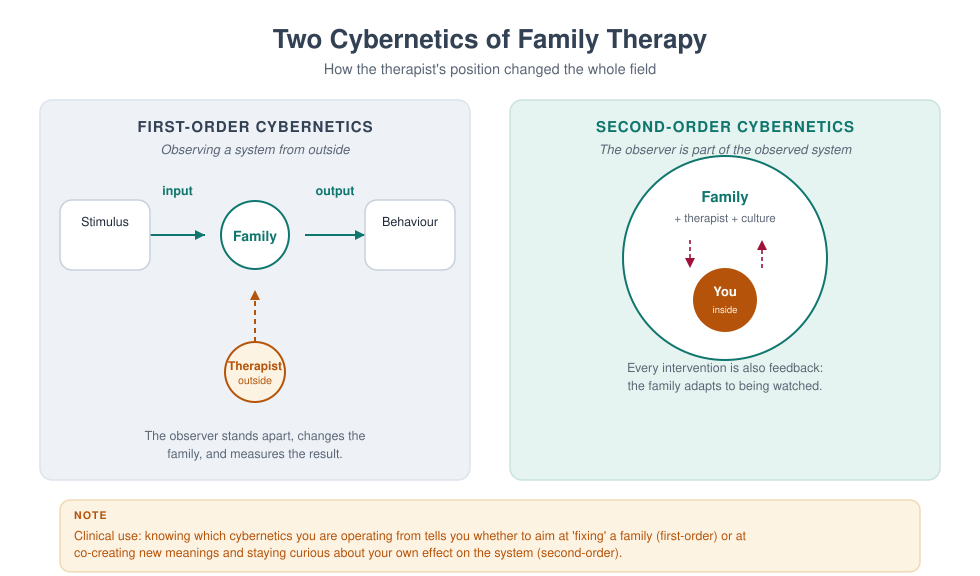
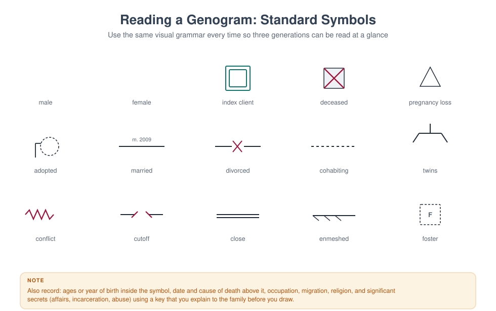
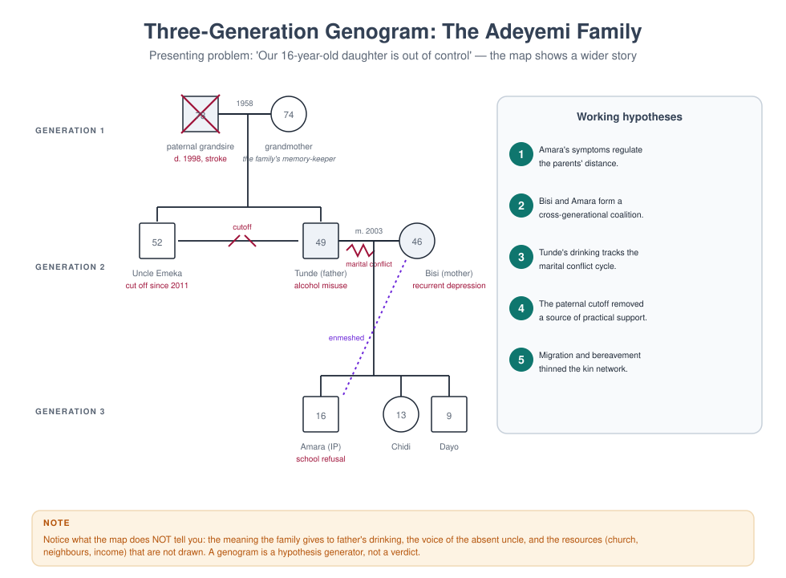

MFT 701 — Fundamentals of Marriage and Family Therapy
Course leader's summary. This is the course that turns a helping professional into a systemic one. It covers the intellectual history of family therapy, the epistemology that separates it from individual work, the profession's identity and scope, and the basic architecture of a first session. Everything later in the programme — theory, technique, assessment, ethics — assumes the vocabulary built here.
How to use this book
Each week contains four things: the idea (what you must understand), the practice (what you must be able to do), the case (what it looks like in a room), and a reflective task (what it asks of you personally). Read the week before the lecture; do the practical in the lab; write the reflection within 48 hours, while it is still uncomfortable.
The book is written to be read straight through, but it is also designed for revision: the integration chapter at the end compresses the whole course into two pages, and the glossary defines every term the examination may use.
1. Course description and rationale
Most mental health training teaches us to look inside a person: their thoughts, their symptoms, their attachment history. Family therapy teaches us to look between people: the loop, the triangle, the rule that nobody wrote down. This is not a rejection of individual psychology. It is an additional discipline of attention, and it changes what counts as the problem, the cause, and the cure.
Consider three common presentations:
| Presentation | Individual formulation | Systemic formulation |
|---|---|---|
| A 15-year-old refuses school | Anxiety disorder, school phobia | A child whose symptoms hold a parental conflict at bay; the school refusal is the family's most effective way of preventing an argument about the marriage |
| A wife is "depressed" | Major depressive episode | A woman in a triad with her husband and his mother, carrying the family's unspoken grief about a lost pregnancy |
| A man "works too much" | Workaholism, avoidance | The person who regulates the family's emotional temperature by being absent, in a system that rewards his absence |
None of these systemic formulations is automatically more true. Each is a hypothesis with different implications for where you intervene. The mature clinician holds both — the individual and the relational — and chooses deliberately.
Why this course first. Because students who begin with technique learn to do something they cannot explain, and students who begin with theory learn to explain something they cannot do. MFT 701 begins with framing: what kind of problem is this, and therefore what kind of help is required?
2. Learning outcomes
By the end of the course, students will be able to:
| # | Outcome | Assessed in |
|---|---|---|
| LO1 | Explain the epistemological shift from linear to circular causality, and its clinical consequences | Exam, Week 2 log |
| LO2 | Trace the historical development of family therapy and locate contemporary models within it | Exam |
| LO3 | Describe the profession's identity, scope of practice, and relationship to allied professions | Assignment |
| LO4 | Conduct a structured first session, including joining, problem definition, and contracting | Skills assessment |
| LO5 | Draw a three-generation genogram and generate hypotheses from it | Assignment |
| LO6 | Critically discuss the common-factors evidence and its implications for model choice | Exam essay |
| LO7 | Identify their own family-of-origin patterns and describe their effect on clinical work | Reflective log |
3. Assessment
| Component | Weight | Due |
|---|---|---|
| Reflective practice log (weekly, 300–400 words) | 20% | Fortnightly |
| Genogram and hypothesis assignment (2,000 words + diagram) | 30% | Week 9 |
| Two-hour written examination (seen case + essay + short answers) | 50% | Week 15 |
Skills gate. Students must pass a 15-minute observed first session (Week 6) before proceeding to MFT 706. The gate is pass/fail with one resit.
4. The fourteen-week teaching plan
| Week | Topic | Practical | Core reading |
|---|---|---|---|
| 1 | What is family therapy? The relational turn | Triad: "the problem as described" | Nichols ch. 1; Handbook ch. 1 |
| 2 | Linear and circular causality; first- and second-order cybernetics | Observation of a recorded argument | Watzlawick, Pragmatics ch. 1 |
| 3 | A short history: from schizophrenia research to evidence-based practice | Timeline construction | Nichols ch. 2–3 |
| 4 | Systems thinking: boundaries, feedback, homeostasis, rules | Feedback-loop mapping exercise | Becvar & Becvar ch. 2 |
| 5 | The profession: identity, scope, settings, teamwork | Role boundaries case discussion | AAMFT code, scope sections |
| 6 | The first session I: joining, and the referral question | Observed skills gate | Minuchin & Fishman ch. 1 |
| 7 | The first session II: defining the problem in the family's language | Triad: problem definition | Haley, Leaving Home ch. 1 |
| 8 | The genogram as a hypothesis machine | Genogram lab (own family) | McGoldrick, Genograms ch. 1–2 |
| 9 | Formulating relationally: the 5-P grid applied to a family | Formulation workshop | Dallos & Draper ch. 4 |
| 10 | Culture, class and power in the consulting room | Reflexivity exercise | McGoldrick, Ethnicity & Family Therapy |
| 11 | Evidence: what works, for whom, and the common factors | Appraisal of one RCT and one qualitative study | Wampold ch. 2 |
| 12 | Ethics, risk and the limits of the systemic frame | Risk-screen rehearsal | MFT 704 pre-reading |
| 13 | Integration I: three models applied to one family | Live demonstration + discussion | Nichols ch. 10 |
| 14 | Integration II: your emerging clinical stance | Position statement presentation | Course review |
Week 1 — What is family therapy? The relational turn
1.1 The lecture in ninety minutes
Week 1 has one job: to make the relational frame feel inevitable rather than eccentric. Everything a student does later — the first session, the genogram, the formulation, the ethics of conjoint work — assumes they can see a relationship as a thing with a shape, a history and a set of rules. Students arrive able to see people. Very few arrive able to see between people.
The ninety minutes run like this.
| Minutes | Segment | What the lecturer does | What students do |
|---|---|---|---|
| 0–10 | Two formulations | Read the Okonkwo referral twice: once as an individual case, once as a relational one | Note which version they would have written |
| 10–30 | Where the field came from | The three failures of the individual frame (1.2) | Timeline exercise: place five founding texts |
| 30–50 | Five claims of the relational frame | Build the list on the board, testing each against a live example | Vote: which claim is hardest to accept? |
| 50–65 | Systems as a way of thinking | Cybernetics, feedback, the Watzlawick axioms (1.5) | Map one family loop on paper |
| 65–80 | Three openings in a first session | Annotated transcript, read aloud in parts | Mark where the therapist widened the field |
| 80–90 | Set the lab and the journal | Hand out the widening-question protocol (1.11) | Form triads, choose a real (non-clinical) difficulty |
The lecture is deliberately front-loaded with history. Students who know the field's origins stop treating systemic thinking as a technique among techniques and start treating it as an epistemology — a claim about what kind of thing a problem is.
1.2 Why the field exists: three failures of the individual frame
Family therapy was not invented because someone preferred groups to individuals. It was invented because three well-funded, well-intentioned research programmes ran into the same wall: the individual frame kept losing information that mattered clinically.
The first failure: the patient kept relapsing into a family. In the 1950s, Gregory Bateson's research group at Palo Alto — Bateson, Don Jackson, Jay Haley and John Weakland — was studying communication in families where one member had been diagnosed with schizophrenia. Their 1956 paper, "Toward a theory of schizophrenia," proposed the double bind: a pattern in which a person receives two messages at different logical levels that contradict each other, cannot comment on the contradiction, and cannot leave the field. A mother who says "come here, dear" while stiffening when the child approaches; a father who asks for honesty and then punishes it; a family that requires affection and forbids the expression of need that would make affection possible.
The double-bind theory has not survived as an explanation of schizophrenia. Its status as a causal claim about psychosis is dead, and students should know that. But something else in that research survived and became the spine of the field: the observation that sequences of behaviour between people carry information that is invisible when you describe the people separately. The patient's behaviour was intelligible as a move in a game; the game was not in the patient.
The second failure: the symptom made sense at home. Independently, researchers studying families of people with serious mental illness — Theodore Lidz at Yale, Lyman Wynne at the National Institute of Mental Health — noticed that families organised themselves around the symptomatic member. Wynne described pseudo-mutuality: a family that maintains the appearance of harmony by prohibiting any relationship that would threaten it. Lidz described marital schism and marital skew: two patterns in which the couple's conflict or the couple's imbalance shaped the child's development. Again the aetiological claims are dated. Again the structural insight held: a family can be organised by a symptom, and the symptom can be doing work for the system.
The third failure: the child was the family's messenger. The child guidance movement of the 1920s–1950s treated the child, advised the mother, and sent both home to a household that had not changed. Clinicians began to notice that improvement in the child was routinely followed by a new symptom in a sibling, or in the mother, or by a marital crisis that had been dormant. The pattern is now so familiar that it has a name — symptom substitution — and the observation that produced it is the most practically useful idea in this week: if the symptom is functional for the system, removing the symptom without changing the system is unstable.
Three research programmes, three different populations, one conclusion: the unit of assessment was wrong. Between 1950 and 1975 the field built an alternative. Nathan Ackerman founded the Family Institute in 1960 and, with Jackson, the journal Family Process in 1962. Murray Bowen developed his theory of differentiation and multigenerational transmission at the Menninger Clinic and later at Georgetown. Virginia Satir was teaching conjoint family interviewing in California. Salvador Minuchin, working with delinquent boys at the Wiltwyck School and then at the Philadelphia Child Guidance Clinic, built structural family therapy out of the observation that these families were not sick so much as organised at the wrong level of hierarchy — children in charge, parents disengaged or in coalition, boundaries too diffuse or too rigid. Jay Haley joined Minuchin in Philadelphia in 1967 and brought strategy, power and the deliberate use of directives.
By the late 1970s the field had a canon: the Palo Alto communication school, Bowen's multigenerational theory, Minuchin's structural therapy, Haley and Madanes's strategic therapy, the Milan group's systemic therapy with its rituals and positive connotation, Satir's human validation, and the beginnings of solution-focused work at Milwaukee and narrative therapy in Adelaide and Auckland. Students will meet each of these properly in MFT 702. For now, one thing matters: every one of these schools is an answer to the question "what is the unit?" and each answers it slightly differently — the sequence, the generations, the structure, the meaning, the solution, the story.
1.3 What "relational" actually means: five claims
"Systemic" is a word students learn to say before they learn to mean. Here are the five claims that make the relational frame a frame, in ascending order of how much they cost you as a clinician.
Claim 1 — Behaviour is patterned. Any two people who spend time together generate repeating sequences. The pattern is not in either person; it is in the loop. A couple who report "we never talk" will, within twenty minutes of a first session, demonstrate precisely how the not-talking is produced: one asks a question that contains an accusation, the other answers with a fact, the first escalates the volume, the second goes quiet. Neither is doing it to the other. Both are in it.
Claim 2 — The pattern is maintained by its consequences, not by its causes. This is cybernetics in one sentence. The question "why did this start?" is usually unanswerable and clinically useless; the question "what keeps it going?" is answerable and clinically decisive. A father's withdrawal is maintained by his wife's criticism, which is maintained by his withdrawal. Ten years of history explain how they got into the loop; only the loop explains why they are still in it.
Claim 3 — Meaning is negotiated between people. The same act means different things to different family members, and those meanings are not private. A daughter's silence means "respect" to her father, "punishment" to her mother, and "safety" to herself. The clinical task is not to find the true meaning but to make the several meanings audible to everyone in the room.
Claim 4 — Symptoms can serve the system. Not always, not deliberately, and never in a way that makes the symptomatic person responsible. But frequently enough that the therapist must ask: what would change in this household if this symptom disappeared tomorrow? Sometimes the honest answer is "nothing." Sometimes it is "my marriage would have to be looked at," and that answer reorganises the whole treatment.
Claim 5 — The observer is inside the observed system. You are not a camera. Your presence changes what the family does, what they say, what they notice about themselves, and what they will risk in front of each other. The family that arrives furious will perform its fury for you; the family that arrives polite will perform its politeness. This is not contamination to be minimised — it is the instrument you have. Second- order cybernetics, which students meet formally in MFT 715, is simply the discipline of using that instrument knowingly (Figure 1.1).

A working definition. Marriage and family therapy is the assessment and treatment of relational systems — couples, families, and the wider networks in which they live — using interventions that target interaction patterns, meaning systems, and the emotional bonds between people. Read the definition carefully: assessment of relational systems means the unit of assessment is the relationship; interventions that target patterns means the unit of intervention is the loop, the rule, the structure or the story; emotional bonds means that a purely behavioural account is insufficient, because people are attached to each other and the attachment is what makes the pattern stubborn.
What it is not. Four clarifications, because students routinely collect the wrong ones.
- It is not "seeing everyone together" as a matter of policy. Sometimes the right systemic move is an individual session inside family work. Conjoint work is a means, not a doctrine.
- It is not a denial that individuals exist, or that biology, trauma and temperament matter. It is a disciplined focus on context, not a metaphysics.
- It is not the claim that families cause mental illness. That claim was made in the 1950s and it was wrong, cruel, and expensive. Contemporary systemic practice holds families as the site where distress is expressed, maintained and relieved — not as the sole cause.
- It is not "we don't do diagnosis." Systemic therapists diagnose, formulate and often work inside services that require a diagnosis; see MFT 707.
1.4 The four consequences, worked through
The four consequences in the original week note are worth more than a bullet list. Take them one at a time, each with what it changes on Monday morning.
Consequence 1 — The unit of assessment changes. You must hear from more than one person, and notice what happens between them. In practice this means the assessment cannot be completed in a single interview with one informant. It means disagreement between informants is data rather than noise: if the mother says the boy is defiant and the father says he is fine, the difference is the finding. It means you watch the room — who sits where, who answers for whom, who looks at whom before speaking, what happens to the volume when one person enters.
Consequence 2 — The unit of intervention changes. You intervene in sequences, rules, meanings and structures, not only in individual cognition. A cognitive intervention asks the depressed woman to examine the evidence for her belief that she is a burden. A systemic intervention asks what happens in the household in the forty-eight hours after she expresses that belief — and often finds that the expression triggers reassurance, that reassurance prevents any change in the division of labour, and that the division of labour is what is depressing her. Both are legitimate. The second is invisible from inside the first.
Consequence 3 — The definition of success changes. Success may be a family that argues well, not a family that never argues. This is the hardest consequence for students trained in symptom reduction, because it means the goal is not the absence of conflict but the presence of repair. A couple who can fight, rupture and come back together within an hour is doing better than a couple who never fight and are quietly contemptuous. Outcome measures should reflect this: not only "has the symptom gone?" but "can this system handle disagreement without breaking?"
Consequence 4 — The therapist's position changes. You are not a technician outside the system; you are a participant who affects it. Three practical implications. First, you must account for your own effect: the family will behave differently because you are watching, and the difference is informative rather than annoying. Second, you cannot claim neutrality; you can only be transparent about your partiality. Third, your own family of origin is in the room with you — which is why every week of this book ends with a reflective task, and why personal therapy and supervision are professional requirements, not luxuries.
1.5 Systems as a way of thinking
Students often assume "system" is jargon for "family". It is not. A system is any set of elements whose interaction produces effects none of the elements produces alone. Ludwig von Bertalanffy's general system theory (1968), Norbert Wiener's cybernetics (1948) and the communications research at Palo Alto gave the field three tools, and they are still the three tools.
Feedback. A system regulates itself through loops. Negative feedback reduces deviation and restores the previous state — the family that pulls a member back whenever they move too far, the couple whose argument returns to the same sentence. Positive feedback amplifies deviation and produces change or escalation — the quarrel that grows, the affair that is discovered, the child who leaves. Note that the words are not evaluative: negative feedback is not bad, positive is not good. Most clinical problems are stuck negative-feedback loops with high cost; most crises are positive-feedback loops that have run away.
Homeostasis and morphostasis. Systems resist change in order to remain themselves. When a family comes to therapy, two processes are always running: the pressure to solve the problem and the pressure to keep the system intact. This is why families sometimes seem to sabotage their own treatment, and why the therapist who moves too fast loses the family. The technical answer is to pace: introduce change at a rate the system can absorb, and check that each change is stable before the next.
Rules and punctuation. Watzlawick, Beavin and Jackson's Pragmatics of Human Communication (1967) gave the field its most quoted propositions: one cannot not communicate; every communication has a content and a relationship level; relationships are defined by punctuation of sequences; humans communicate digitally (words) and analogically (behaviour, tone, gesture). The idea of punctuation is the most clinically valuable. Each partner punctuates the same sequence differently: she says "he goes silent, so I get loud"; he says "she gets loud, so I go silent". Both are describing the same loop from different points on it, and each punctuation makes the other the cause. Therapy begins when the loop, rather than either partner, becomes the object of attention.
Structure. Minuchin added what communication theory lacked: an account of organisation. Families have subsystems (parental, sibling, couple), boundaries (clear, diffuse, rigid), hierarchies, alliances and coalitions. A child who is in a coalition with one parent against the other is not "manipulative"; the child is holding a structural position that the adults' conflict has created. Structure gives the therapist something to see in the seating plan and something to change in the session.
Meaning. The later schools — Milan, narrative, collaborative — pushed the field from pattern to interpretation. If the system is a set of interactions, it is also a set of stories about those interactions. A family that has decided "our son is the problem" has organised its attention, its conversations and its hopes around that sentence. Change the sentence and the interactions move; move the interactions and the sentence loses its evidence.
1.11a What the evidence says, in one page
Students are often told either that family therapy "works" or that the evidence is contested. Both are unhelpful. Here is what a careful reading of the outcome literature supports, stated with the hedge each claim requires.
Family and couple therapy outperform no treatment, and generally match individual treatment for relational problems. Meta-analyses of couple and family therapy trials report effect sizes in the moderate range — roughly half a standard deviation to eight-tenths — against no-treatment and wait-list controls, with the larger effects for couple distress, child conduct problems, and adolescent substance use. Effects are smaller and less consistent against credible active comparators, which is what you would expect if the specific model matters less than the common structure of good therapy.
The model explains less of the variance than the alliance. The most robust finding in psychotherapy research, replicated across modalities, is that the therapeutic alliance predicts outcome better than the technical ingredients of any particular school. In couple and family work the alliance is more complicated than in individual work, because there is more than one alliance to build and they can pull against each other: siding with one partner to engage them alienates the other, and a determined even-handedness can leave both feeling unheard. This is why Week 6 of this book spends two sessions on joining, and why your assessed skill in this course includes your ability to hold two alliances at once.
Common factors do a lot of the work. Client factors (severity, chronicity, social support, motivation), the alliance, the therapist's skill and the expectancy generated by a credible rationale account for a large share of change. The practical implication is not that technique is irrelevant but that technique is delivered through a relationship, and a technique delivered through a poor relationship is inert or harmful.
Dose and dropout matter more than most trainees think. A substantial proportion of families attend one session and never return; the first session is therefore an outcome event, not a preliminary. Retention is predicted by early alliance, by the fit between the therapist's explanation and the family's own understanding, and by practicalities — travel, cost, timing, childcare — that a therapist who ignores them will mistake for resistance.
Evidence is unevenly distributed across problems. Couple therapy for relationship distress, behavioural parent training for conduct problems, family-based treatment for adolescent eating disorders, multidimensional family therapy for adolescent substance use, and systemic work with chronic illness in children have reasonably strong support. Evidence for some popular ideas — mechanical use of paradox, unexamined "dysfunctional family" typologies, polyvagal explanations treated as established mechanism — is much weaker. Learning to distinguish these is part of professional formation, and MFT 705 and MFT 721 teach you to read the literature rather than the marketing.
1.6 First contact: three openings, annotated
The relational frame is not announced, it is enacted. Three openings show what it looks like when a therapist begins relationally in the first five minutes — before any genogram, any diagnosis, any technique.
Opening A — from the referred person to the referral system.
Note what the therapist has done. She has not asked about the symptom at all. She has mapped the referral pathway, which is itself a relational fact: who is worried, who is not, who carries the problem, who was told and who was not. She has also discovered, in four questions, the sentence that will organise the assessment: he said I should handle it. That sentence is not a complaint about a husband. It is a description of a household in which one adult holds all the worry, and a child's symptom sits in the space where the other adult would be.
Opening B — from the symptom to the sequence.
The sequence is now visible: refusal, escalation, compliance, and then repair initiated by the child. That is the loop. The therapist did not need to interpret it. She asked for a specific episode and then asked "and then?" until the loop closed. This is the single most useful micro-skill in the first session: episode, not opinion. Opinions produce character descriptions ("he is stubborn"); episodes produce sequences.
Opening C — from the individual to the room.
Three questions, and the child has produced the formulation. The therapist did not ask "how do you feel about your father's absence?" — a question no nine-year-old answers truthfully. She asked a behavioural question about a third person's perception, which is easier to answer and much harder to fake. Involving the child as an informant, not a patient, is a structural act: it moves the child out of the identified- patient position and into the family's information system.
What all three openings have in common. Each one moves the unit of attention one step outward — from the person to the pathway, from the event to the sequence, from the individual to the room — and each does so with a question that is answerable. That is the whole craft of a first session in miniature. The student who can do these three moves in the first ten minutes will get a formulation. The student who cannot will get a history.
1.7 The Okonkwo case, fully worked
Referral. Ebuka, 9, referred by his school for "defiance and refusal to write". Six weeks of refusing to complete written work; two episodes of leaving the classroom. Class teacher describes him as "stubborn and rude". Mother reports he is "fine at home, except mornings". Father did not attend.
What the linear frame produces. A differential diagnosis: oppositional defiant disorder versus a specific learning difficulty (writing), versus anxiety, versus an attention problem. An assessment plan: psychometric testing, teacher rating scales, classroom observation, possibly a paediatric review. A treatment plan: behavioural contract, reward chart, parent training in commands and consequences. This is not wrong. It is incomplete in a way that will matter, because the most important information in this family is not about Ebuka's writing.
What the systemic frame adds. Four moves, in order.
Move 1 — the referral pathway. Who is worried? The school, then the mother. Who is not in the room? The father. Who decided that the mother should manage it? The father, according to the mother. The first structural fact: the parental subsystem is not operating as a subsystem. One adult holds the worry, the other holds the distance.
Move 2 — the sequence. Mornings: refusal, three calls, shouting, compliance, lateness, a day of maternal anger, evening reparation initiated by the child. The second structural fact: the child regulates the mother's emotional state. He absorbs her anger and then repairs it. A nine-year-old is doing the work of a partner.
Move 3 — the function of the symptom. What would change at home if Ebuka got up cheerfully and wrote fluently? The mornings would be calm; the mother's day would be easier; and the father's absence would become a topic rather than a background condition. There is no evidence that anyone wants the child to be symptomatic. There is good evidence that the symptom sits at the exact point where a marital conversation would otherwise occur.
Move 4 — the wider system. School, church, extended family. In this case the maternal grandmother is mentioned twice and the paternal aunt once. In many Nigerian households the grandmother is a co-parent and a court of appeal; leaving her out of the assessment is not neutrality, it is an omission.
The formulation, in one paragraph. Ebuka's refusal to write is maintained by a morning sequence in which escalation reliably produces compliance and in which the child then repairs his mother's distress. That sequence is itself maintained by a household in which one parent carries all the worry and the other is absent, and by a school system that has defined the problem as a defect in the child. The symptom is not caused by the marriage, and nobody is to blame; but the symptom is located where the marriage would otherwise be discussed, and it will be difficult to resolve without that conversation becoming possible.
The plan that follows. Conjoint sessions including the father (with an explicit invitation framed as expertise rather than blame: "I need your view of what happens in the mornings; your wife and I are working from one account"). A behavioural component for the mornings, because it works and because success builds the parents' confidence in themselves as a team. A separate conversation with the parents about the marriage, held only when both are willing. Liaison with the school to reframe "defiance" as "a problem we are assessing", which reduces the pressure that feeds the loop.
1.8 Where the profession sits
Students enter training with a blurred map of the mental health professions. In Nigeria, as in most places, the practical differences matter for referral, for legal standing, and for what you are allowed to do.
| Profession | Core unit | Typical training | What they usually do with a struggling family |
|---|---|---|---|
| Psychiatry | The patient, medically | Medical degree, then residency | Diagnose, prescribe, admit; refer for therapy |
| Clinical psychology | The individual | Doctorate or master's plus internship | Assess, formulate, deliver individual therapy |
| Counselling psychology | The individual in context | Master's or doctorate | Individual and group counselling, some couple work |
| Social work | The person in their environment | Degree plus registration | Case management, child protection, family support |
| Marriage and family therapy | The relationship | Master's or doctorate in MFT | Conjoint, family and couple therapy; relational formulation |
The distinctive contribution is not a technique. Clinical psychologists do behavioural couple work; psychiatrists do family meetings; social workers do family support. The distinctive contribution is the relational formulation — the disciplined habit of locating the problem in the space between people, and the training in interventions that change that space. A therapist who can only see individuals will treat a family by treating its members one at a time and will be genuinely puzzled when the symptom returns.
Settings in which the work happens. Outpatient clinics and private practice; hospitals, where family meetings follow diagnoses that reorganise households; schools, where the referral pathway usually begins; NGOs and humanitarian settings, where family separation, displacement and bereavement are the presenting context; faith settings, where pastors, imams and church counsellors are often the first and sometimes the only port of call; and courts and child protection services, where the therapist's opinion may be read by a judge. Each setting changes the ethics (see MFT 704), the assessment (MFT 707) and even the language you use.
Scope of practice. Three boundaries worth stating on the first day of training. First, family therapists do not prescribe; any question about medication is a referral question, and the referral should be made without implying that medication is a failure. Second, family therapists do not give legal advice; they provide clinical opinion and, where required, reports, and they tell families to obtain a lawyer (see MFT 724). Third, family therapists do not practise beyond their competence — and competence is specific: adult couple work is not child work, child work is not forensic work, and neither is trauma processing without specific training (MFT 711, MFT 714).
1.9 Culture, faith and class in the first meeting
The relational frame is not culturally neutral, and pretending otherwise is its own kind of arrogance. Three adjustments matter from the first session in most Nigerian consulting rooms.
Kinship is wider than the household. A genogram that stops at the nuclear family will miss the grandmother who raised the child for three years, the uncle who pays the school fees and therefore has standing, the aunt who lives with the family and disciplines the children, and the cousin whose presence has changed the sleeping arrangements. Ask who is involved, not who lives there. The distinction between household and family is one of the most practically useful in the whole programme.
Faith is a resource and a referral system, not a rival. Families commonly arrive having already seen a pastor, an imam, a traditional healer or all three. The therapist's task is not to adjudicate but to coordinate: what did the prayer, the deliverance, the fasting, the herbal treatment do? What was helpful? What was frightening? What does the family believe is happening spiritually? A family that believes the problem is spiritual and a therapist who believes it is relational can still work together if the therapist takes the belief seriously as a meaning in the system, which is exactly what it is.
Class shapes what is possible. A recommendation to reduce working hours is meaningless to a family with two jobs and no childcare. A recommendation to attend weekly sessions is meaningless to a family who travel four hours. A recommendation to "talk to your husband" is meaningless in a household where his mother is the decision-maker. Practical recommendations fail not because families are resistant but because the therapist prescribed from a life the family does not have. The discipline is to ask, before prescribing: what would have to be true in your week for this to happen? The answer is usually the real treatment plan.
1.10 Six errors that begin in week one
These are the mistakes students actually make in their first role-plays, and each one is a failure of the relational frame rather than a failure of technique.
- The single-informant assessment. You interview the mother, form a picture, and never test it. Fix: no relational formulation without at least two informants, and no family assessment without asking who is missing.
- The character formulation. "He is oppositional." "She is enmeshed." These are descriptions of persons disguised as systemic language. Fix: every formulation must contain at least one sequence ("when X, then Y, then Z") and at least one context ("in the presence of…").
- Premature reassurance. "I'm sure he loves you." It closes the exploration and hands the therapist's opinion to a family that needs its own. Fix: acknowledge the experience, ask for the evidence, keep the question open.
- The alliance slide. You begin to like one member more than another and your questions begin to build the case for that person. Fix: track your questions across a session (record it) and count how many were addressed to each person and whose account each question elaborated.
- The technique-first session. You arrive with a genogram to draw, a technique to demonstrate, a model to apply — and the family's actual concern is never heard. Fix: the first session belongs to the family's account, not to the therapist's plan.
- The safety omission. You conduct a full conjoint assessment without ever asking about violence. Fix: every first session includes a private screen for harm to self, harm to others, abuse of children and intimate partner violence, conducted in a way that makes disclosure possible (see MFT 704 and MFT 712).
1.11 Laboratory: the widening question
The week's practical is a triad drill in which the therapist may only ask questions that include another person. It looks simple and it is not: most students discover that their natural question is a question about an individual, and that widening feels artificial for the first twenty minutes.
Setup. Groups of three. Roles rotate every eight minutes, so each person is therapist once. One person brings a real but non-clinical difficulty — a disagreement with a flatmate, a difficult decision about a sibling, a strain with a colleague. No clinical material, no disclosure that would be regretted.
Rules for the therapist.
- No statements, interpretations or advice — questions only.
- Every question must include a third party or a relationship: "who notices…", "what does your sister do when…", "who would disagree…", "what happens between you after…".
- One question at a time, with silence after each.
- Eight minutes, then stop whether or not the conversation feels finished.
Observer's task. Two columns on one sheet: W (questions that widened the field) and N (questions that narrowed it back to the individual). Tally, then quote the single most useful widening question and the single most narrowing one.
Debrief questions. What did the client notice about their own description when it was widened? Which widening felt intrusive, and why? What did the therapist want to say but could not? What happened to the client's tone when a third person entered the story?
Marking rubric (used in the Week 6 skills gate).
| Criterion | Weight | What full marks looks like |
|---|---|---|
| Proportion of widening questions | 30% | More than 80% of questions include another person or a relationship |
| Question quality | 25% | Open, specific, answerable; no double questions; no embedded advice |
| Pacing and silence | 20% | Roughly one question per 30–45 seconds; client speaks more than therapist |
| Use of the client's words | 15% | At least three questions reuse the client's own phrasing |
| Reflexivity in debrief | 10% | Can name what was hard, what was tempting, what they avoided |
1.12 Reflective task
Write 500 words on the last significant conflict in your own family, then rewrite it from the point of view of the person you understood least. Note what changed in your body as you wrote. Keep both versions; you will return to them in Week 14, when you write your emerging clinical stance, and you will find that the second version contains the therapist you are becoming.
Two rules for this task. Do not show it to the person concerned, and do not bring the person's name into the seminar. The purpose is to develop the capacity to hold more than one punctuation of the same sequence at once — which is precisely what you will ask families to do.
1.13 Self-test
Six questions, answers below. If you cannot answer 4 and 5 without notes, reread 1.5.
- Define negative and positive feedback, and give one clinical example of each.
- Why is "punctuation" clinically useful?
- State the double-bind hypothesis and its current scientific status.
- What is symptom substitution, and what does it imply for treatment?
- Name the five claims of the relational frame, in order.
- What are the four consequences of treating the relationship as the client?
Answers. 1. Negative feedback reduces deviation and restores a prior state (a family pulling a member back from independence); positive feedback amplifies deviation (an argument that escalates through counter-complaint). 2. Because each participant's punctuation makes the other appear to be the cause; the therapist who makes punctuation visible turns blame into a loop both can act on. 3. A person receives contradictory messages at different logical levels, cannot comment on the contradiction and cannot leave the field; it is historically important and not a supported causal explanation of schizophrenia. 4. The observation that removing a symptom is often followed by a new symptom elsewhere in the system; it implies that treatment must change the system, not only the symptom. 5. Behaviour is patterned; patterns are maintained by consequences rather than causes; meaning is negotiated; symptoms can serve the system; the observer is inside the observed system. 6. The unit of assessment, the unit of intervention, the definition of success, and the therapist's position.
1.14 Readings for this week
Read the first two before the lecture; the rest are for the assignment.
- Bateson, Jackson, Haley & Weakland (1956), "Toward a theory of schizophrenia", Behavioral Science. Read it as a historical document and notice how carefully the authors hedge.
- Watzlawick, Beavin & Jackson (1967), Pragmatics of Human Communication, chapters 1–2. The axioms, in the original.
- Nichols & Schwartz, Family Therapy: Concepts and Methods, chapter 1. The best single overview of the field's history.
- Becvar & Becvar, Family Therapy: A Systemic Integration, chapters 3–5. On cybernetics and second-order thinking.
- Hoffman (1985), "Beyond power and control", Family Systems Medicine. The turn to second-order cybernetics, written by a participant.
- Minuchin (1974), Families and Family Therapy, chapter 2. Structure, in Minuchin's own voice.
1.6a An extended transcript, annotated
Role-plays teach faster than principles. Below is a twelve-turn excerpt from a first session with a couple who present with "we cannot communicate". The therapist is a trainee in her second term. Read the transcript, cover the annotations, and decide what you would have asked next. Then read the annotations.
Annotations.
T1 is a neutral opening that hands the agenda to the couple without inviting either partner to be the complainant. Compare "What is the problem?" — which usually produces one person's problem statement and positions the other as the problem.
T3 is the first systemic move: instead of asking Dele to defend himself, the therapist asks him to interpret his wife, which requires him to engage with her experience rather than his own. It also reveals whether he has a theory of her mind at all. He does not: "I don't know" is honest and important.
T5 is an episode question and it is doing three things at once. It bypasses the argument about whether she is alone (unwinnable), it specifies a moment (television, evening), and it puts the therapist physically in the room with them. Students who ask "why do you feel alone?" get an explanation; students who ask "what do you do when he is watching television?" get the behaviour that maintains the loneliness.
T7, "and then?", is the single most productive two-word intervention in family therapy. It builds the sequence one link at a time and stops the therapist from doing the formulating.
T9 takes the same event and asks for the other partner's internal sequence, which turns two monologues into one loop. Note that the therapist does not challenge Dele's account ("three children in the house" is not an answer to loneliness, but arguing about it would lose him). She lets the sequence do the work.
T10 is the pivot of the session. "Nothing I do is enough, so I stop" is a complete formulation of Dele's side of the loop, offered by Dele. Nothing the therapist could have said would have been as convincing or as usable.
T11 closes the loop by returning to Folake with the consequence of his withdrawal. At T12 she supplies it: the anger grows, sleep is lost, the children see her crying. The loop is now on the table, described entirely in the couple's own words, and neither partner has been blamed.
What the therapist has not done in twelve turns is worth listing, because trainees over-value these moves: she has not asked about the history of the marriage, has not asked how they met, has not asked about sex, has not offered an interpretation, has not normalised, has not asked either partner to change anything, and has not used the word "communication". Every one of those is legitimate; none of them was needed to establish the relational frame in the first ten minutes.
1.10a Three punctuations of one quarrel
The same sequence can be punctuated at least three ways, and each punctuation licenses a different intervention. Take the quarrel the couple above actually have.
Punctuation 1 — the character story. "He is cold and withdrawn; I am affectionate and he rejects me." What it licenses: an appeal to Dele to change, a diagnosis of Dele (avoidant, depressive, possibly autistic), and a treatment that works on Dele. What it costs: Folake's contribution disappears, Dele becomes a project rather than a partner, and Dele — who already believes nothing he does is enough — experiences therapy as one more arena in which he fails.
Punctuation 2 — the mirror story. "She criticises; I withdraw; she criticises more." What it licenses: a circular formulation, a sequence map, and interventions aimed at the loop (interrupting the escalation, slowing the exchange, rehearsing a different response to criticism). What it costs: the loop can become an abstraction that hides the asymmetry of power and the real losses — his hours, her sleeplessness, the children's exposure.
Punctuation 3 — the meaning story. "She is asking for evidence that she matters; he is protecting himself from evidence that he fails." What it licenses: work on attachment, on the meanings each assigns to the other's behaviour, and on the moment of turning toward or away. What it costs: meaning work without behaviour change can become insight that never reaches the household.
A competent therapist holds all three and chooses deliberately, usually sequencing them: the loop first (because it lowers blame), the meaning second (because it explains why the loop is so adhesive), and the character story never as a formulation, only as each partner's experience to be listened to. This pluralism — several punctuations available, one chosen for a reason — is what distinguishes a systemic clinician from someone who has memorised a model.
1.13a Examination question with model answer
Question (20 marks). "Family therapy is a way of seeing, not a set of techniques." Discuss, with reference to the historical development of the field and to at least one clinical example.
Model answer, in note form, with the markers' expectations visible.
Introduction (2 marks). State the claim in your own words: the relational frame is an epistemological commitment — a claim about the unit of analysis and the nature of causation — and techniques are downstream of it. Signal the structure of the answer: history, epistemology, clinical example, limits.
History (6 marks). Three research programmes converged on the same failure: Bateson's group and the double bind; Lidz and Wynne on family organisation around psychosis; the child guidance movement and symptom substitution. The aetiological claims of the 1950s were largely wrong and you should say so; what survived is the methodological insight that sequences carry information individuals do not. Trace the schools as answers to "what is the unit?" — Palo Alto (the sequence), Bowen (the generations), Minuchin (the structure), Milan (the meaning), Milwaukee (the solution), Adelaide (the story).
Epistemology (6 marks). Circular versus linear causality; feedback and homeostasis; punctuation; second-order cybernetics and the therapist's position. Use Watzlawick's axioms precisely — content and relationship levels, digital and analogic communication — and show what each buys clinically. Demonstrate that you understand the difference between an ecological claim (the system is the unit of assessment) and a causal claim (the system causes the symptom), and reject the second.
Clinical example (4 marks). The strongest answers use one case throughout rather than several in passing. The Okonkwo case works: a nine-year-old's school refusal, a morning sequence, a parental subsystem that is not operating, and a formulation that no single-informant assessment could have produced. Show what the relational frame let you see and what it let you do.
Limits (2 marks). Name them honestly: the frame can obscure individual biology, trauma and temperament; it can be used to distribute responsibility in ways that leave an abusive member unaccountable; it can become a language that describes loops without ever changing them. Note the feminist critique of neutrality and the evidence that the alliance — not the model — predicts much of the outcome.
Common ways to lose marks. Describing techniques without explaining the frame; treating "systemic" as a synonym for "family"; repeating the double-bind hypothesis as if it were current; failing to give a clinical example at all; writing about circular causality without ever defining feedback.
1.13b What "good" looks like at the end of week one
A checklist you can use on yourself before Week 2. Tick only what you can do without notes.
- [ ] Explain, in ninety seconds, why the field moved from the individual to the relationship, using three historical examples and one honest caveat about the science of the 1950s.
- [ ] Define negative and positive feedback and give a clinical example of each that you have actually seen.
- [ ] Explain punctuation to a couple without using the word "punctuation".
- [ ] Turn three opinion questions into episode questions, out loud, without hesitation.
- [ ] State the four consequences of treating the relationship as the client, and give one practical implication of each for a first session.
- [ ] Describe the difference between a linear and a circular formulation using the same case twice.
- [ ] Name the three professional boundaries from 1.8 and what you would say to a family that crossed them.
- [ ] Ask about safety in a first session without it sounding like an accusation or an afterthought.
Week 2 — Linear and circular causality
2.1 The lecture in ninety minutes
Last week asked who is the client. This week asks a harder question: what kind of thing is a cause? It is the single most consequential idea in the programme, because everything downstream — the formulation, the questions you ask, what you count as progress, how you write a report for a court — depends on whether you think in lines or in loops.
Students usually arrive believing they already understand this. They can define circular causality in a sentence: "each person's behaviour causes the other's." Then they conduct a role-play in which every question they ask is a search for who started it. The gap between being able to say it and being able to do it is the work of this week.
| Minutes | Segment | What the lecturer does | What students do |
|---|---|---|---|
| 0–10 | Two sentences | Reads a case in a linear account, then in a circular account | Mark every causal verb in both |
| 10–25 | The philosophy nobody teaches | Aristotle's four causes, Hume, Mills, why "cause" is plural (2.2) | Sort five clinical explanations into cause types |
| 25–45 | Feedback, formally | Loop diagrams, delay, gain, thresholds (2.3–2.4) | Draw the same family as two different loops |
| 45–60 | Punctuation, again | The same quarrel punctuated three ways (2.5) | Identify their own punctuation habit |
| 60–75 | Circular questioning | Live demonstration, then triads (2.6) | Ask three circular questions each |
| 75–90 | Hypothesis discipline | How to hold a hypothesis without becoming its servant (2.7) | Write one hypothesis, then one disconfirming question |
The lecture has a deliberate shape: philosophy first, engineering second, clinical craft third. Students who skip the philosophy conclude that circular causality is a nicer way of saying "we are all responsible". Students who skip the engineering cannot tell a loop from a list.
2.2 What a cause is: four traditions you will use without knowing
Family therapy inherited a muddle about causation and never fully cleaned it up. The muddle is worth untangling, because most of the field's disagreements about evidence, responsibility and blame are disagreements about what counts as a cause.
Aristotle's four causes. Aristotle distinguished the material cause (what something is made of), the efficient cause (what set it in motion), the formal cause (the pattern it realises) and the final cause (the purpose it serves). A wooden chair: wood, a carpenter, a design, the purpose of sitting. Now apply the scheme to a symptom. A boy's school refusal: his anxiety (material), a frightening event (efficient), a pattern of family accommodation (formal), and the function the refusal serves in the household (final). Most clinical arguments are people defending one of these four while denying the others. The systemic tradition is chiefly interested in the formal and final causes — the pattern and the function — which is exactly why it seems to slight the efficient cause (the event that started it) and infuriates colleagues who want to know what happened.
Hume and the regularity theory. A cause is an event constantly conjoined with another, temporally prior, and contiguous with it. This is the model implicit in most medical training and in most of what patients believe. It works well for infections and badly for families, because in families the "effect" is usually also the "cause", arriving before and after in alternation.
Mill's methods. Agreement, difference, concomitant variation. These underwrite the randomised trial, and they are why the trial remains the best tool for the question "does this treatment cause improvement?" They are much weaker for the question "what maintains this pattern in this family?", where the relevant variation cannot be manipulated.
Systems and constitutive causation. In a system, the state of each element is partly constituted by its relations to the others. A thermostat is not caused to switch by the temperature in the way a billiard ball is caused to move by another; the switching is what the system does. Family therapists use this sense when they say that the pursuit and the withdrawal "cause" each other: not that A pushes B and B pushes A in a chain, but that the two behaviours are what they are in virtue of the loop they form.
Two consequences follow, and students should write them down.
First, circularity is not a moral claim. "We are both in the loop" does not mean "we are equally responsible", and it certainly does not mean "the victim is complicit". A man who is violent and a woman who placates him are in a loop, and only one of them is doing the violence. Confusing description with responsibility is the most serious error in the systemic literature, and the feminist critique of the 1980s — developed by Hare-Mustin, Goldner, Bograd and others — was right about it. The corrective is not to abandon circularity but to pair it with an explicit account of power: who has the resources, who can leave, who is believed, whose account is treated as the account.
Second, circularity is a stance, not a finding. You cannot observe a loop from outside; you can only offer a description of a loop from a position inside it. That is second-order cybernetics in one line, and it means your circular formulation is a hypothesis with an author, not a fact with a discoverer.
2.3 Feedback, formally
The engineering vocabulary is not decoration. It gives you words for things you can otherwise only gesture at, and the words make the difference between a formulation that guides intervention and one that merely sounds sophisticated.
Loop, not line. A loop has a variable, a sensor, a comparison with a reference value, and an effector. In a family: the variable might be proximity between the couple; the sensor is each partner's attention to the other; the reference value is an implicit standard of how close they should be; the effector is the behaviour that moves them. This sounds mechanical and is not: the reference values are moral and historical, inherited from the families the partners grew up in.
Negative feedback. Deviation is detected and reduced. The system returns to its set point. Clinically: the family that pulls the adolescent back whenever she separates; the couple whose argument always returns to the same unresolved sentence; the mother whose anxiety rises when the household is calm, and who finds a problem to restore the familiar tension. Note the crucial point: negative feedback produces stability, and stability is not always health.
Positive feedback. Deviation is amplified. Clinically: the argument that escalates because each response is experienced as an attack; the affair discovered, denied, discovered again; the child's school refusal that produces maternal anxiety that produces more refusal. Positive feedback produces change, and change is not always growth. Most crises are runaway positive loops; most chronic presentations are locked negative loops.
Delay. The most under-taught concept in the field. Systems respond to yesterday's state, not today's. A wife raises a complaint on Monday; the husband responds on Thursday with a small act of help; she has by then concluded he does not care and does not notice the help. Delay is why good interventions often look as though they failed: the change is in the pipeline, and the therapist who panics at session four and changes approach destroys the very feedback they needed to see. Rule of thumb: give a structural intervention three sessions before judging it.
Gain. How much a system responds to a small deviation. High-gain systems escalate fast and are fragile; low-gain systems are stable and can be rigid. A high-gain couple needs the therapist to slow the exchange and lower the volume; a low-gain family needs the therapist to introduce novelty, raise the emotional temperature slightly, and use enactment. This is the practical payoff of the vocabulary: gain tells you whether to accelerate or decelerate.
Thresholds and hysteresis. Systems do not change smoothly; they flip. A family tolerates a behaviour for years and then, at a threshold, reorganises around it — the daughter's disclosure that triggers a family schism, the debt that ends the pretence of solvency. Hysteresis means the threshold for going one way is not the threshold for coming back: it is easier to enter a crisis than to leave it, and families often need help to cross back.
2.4 Three ways of drawing the same family
The Adeyemi family: Amara, 16, has refused school for six weeks. Her mother has depression and is on medication. Her father was made redundant fourteen months ago and drinks in the evenings. There is a younger brother, 11.
Drawing one — the linear account. Redundancy → paternal drinking → marital conflict → maternal depression → Amara's caregiving and anxiety → school refusal. Every arrow points one way. This drawing is true as far as it goes, and it is what a referral letter usually contains. It is also useless as a treatment plan, because every arrow points at a cause the therapist cannot move, and the only intervention it licenses is at Amara.
Drawing two — the circular account. Amara's refusal keeps her at home; her presence at home reduces the parents' opportunity to argue; the reduction in argument lowers the mother's distress; the mother's lowered distress makes Amara's presence feel necessary; the father's drinking continues in the space that the parental conflict has vacated. No single arrow is the cause; each arrow maintains the next. This drawing is also true, and it is actionable: the loop has four places where it could be interrupted.
Drawing three — the power account. Overlay resources and legitimacy: who earns, who decides, who is believed, who can leave, whose distress is taken seriously. The father's drinking is not neutralised by being "part of a loop": it is a behaviour with a cost, exercised by the person with the most structural power in the household. The mother's depression constrains her capacity to act. Amara has the least power and the most symptomatic expression. The overlay changes what the therapist says: the mother is not "enmeshed", she is exhausted and unsupported; the father is not "in a loop", he is a man who is drinking and needs to be asked to stop, with the consequences named.
What the three drawings teach. A formulation is a choice of drawing for a purpose. The linear drawing is good for history and for medico-legal chronology; the circular drawing is good for intervention design and for lowering blame; the power drawing is good for ethics, safety and responsibility. A competent clinician keeps all three and says which they are using and why. A weak clinician uses the circular drawing because it is the house style and then cannot understand why the wife in the violent marriage is not helped by a conversation about mutual escalation.
2.4a A worked loop, with numbers
Circular accounts are often criticised for being unfalsifiable. They need not be. Any loop can be given rough magnitudes, and doing so changes what you notice.
Take Loop B from the Adeyemi case: mother's low mood → Amara's caregiving → mother's temporary relief → Amara's increased responsibility → Amara's anxiety about school → school refusal → more time at home.
Assign a plausible scale, in the family's own terms, and mark how confident you are.
| Link | Direction | Rough magnitude | Confidence | Evidence |
|---|---|---|---|---|
| Mother's mood → Amara's caregiving | ↑ caregiving as mood falls | Large | High | Both describe it; it happens most days |
| Caregiving → mother's relief | Relief for hours | Moderate | High | Mother: "she settles me" |
| Relief → Amara's load | Load grows, no reduction | Moderate | Medium | Described across six weeks |
| Load → anxiety about leaving | Anxiety rises | Large | Medium | Amara: "I can't settle at school" |
| Anxiety → refusal | Refusal | Large | High | Directly observed |
| Refusal → time at home | Six extra hours a day | Large | High | Arithmetic |
| Time at home → caregiving | Loop closes | Large | High | Session observation |
Three things follow, and each is a clinical decision rather than a theoretical one.
First, the loop has a strongest link. The largest, best-evidenced arrows run through time at home. That is why the first intervention addressed the timetable — not because school attendance is a moral good, but because it is the highest-leverage node in the loop as drawn.
Second, magnitudes tell you what to expect from partial change. If caregiving fell by half but the mother's mood did not improve, the loop would reassert within days, because the relief arrow would still be live. This is why single interventions on complex loops fail and why therapists conclude, wrongly, that "the family is resistant". The family is not resisting; the arithmetic is against you.
Third, confidence is part of the formulation. Two of the seven links are medium-confidence. A good therapist names them in supervision and tests them with a question, rather than building a plan on them silently. "I am assuming your daughter's being at home makes your days easier; is that right, or is it more complicated than that?" is not a weak question — it is the question that protects the plan.
2.5 Punctuation, worked
Punctuation is the process by which each participant marks a beginning in a continuous sequence, thereby assigning cause. It is not a mistake to be corrected; it is the ordinary operation of a mind trying to make sense of a loop it is inside.
The four standard punctuations in couple work.
- The complainant's punctuation. "I complain because he withdraws." The complaint is a response; the withdrawal is the cause. Intervention: ask the complainant what they do immediately before the withdrawal, in a specific episode.
- The withdrawer's punctuation. "I withdraw because she criticises." The withdrawal is a response; the criticism is the cause. Intervention: ask what they notice in their body immediately before they go quiet, and what they are protecting.
- The reciprocity punctuation. "We wind each other up." This sounds enlightened and often conceals the asymmetry: someone is doing more of the escalating, or someone is more afraid.
- The system punctuation. "The loop between us has a life of its own." Useful therapeutically, but it can become a way of talking about the relationship at the exact moment when someone needs to be accountable for a specific act.
How punctuation is changed in the room. Not by argument. Telling a husband "actually you both do it" does not change his punctuation; it recruits him into defending it. Punctuation changes through specific episode work: slow the sequence down until both partners can see the moment where their own action occurred, and let them describe it themselves. In practice this means three moves, which students should rehearse until they are automatic:
Move 1 — narrow the time frame. "Not the usual argument. The last one. Tuesday evening. Start at the point where you were both still in the kitchen."
Move 2 — ask for the moment before. "What were you doing in the thirty seconds before he stood up?" This is the question that gives the complainant back their own agency without blaming them, because it is factual rather than evaluative.
Move 3 — ask what they noticed inside. "What went through your mind when she said that?" This converts a behavioural sequence into an emotional one, which is where change becomes possible.
Done well, the couple arrives at a sentence neither could have said at the start: "I go quiet because I think I have already lost, and then she gets louder because the quiet looks like contempt." That sentence is the treatment target for the rest of the work.
2.6 Circular questioning
The Milan associates — Mara Selvini Palazzoli, Luigi Boscolo, Gianfranco Cecchin and Giuliana Prata — developed circular questioning in the late 1970s as the operational form of systemic thinking: questions designed to elicit differences and relationships between people, rather than facts about individuals. The technique is more than fifty years old and remains the most portable skill in the field, because it works inside any model.
The four families of circular question.
- Difference questions. "Who is most upset by this? Who is least? Who would notice first if it changed?" These map the system's distribution of concern and give every member a position.
- Behavioural-effect questions. "When she cries, what does your father do? And then what does your mother do?" These build the sequence in the room, from several points of view.
- Comparison questions. "Is this worse than it was when your mother was alive? Better than last year?" These locate the problem in time and reveal the family's own baseline.
- Hypothetical or future questions. "If this problem disappeared tomorrow, what would be the first thing each of you noticed? Who would miss it?" The second half of that question is the one that produces the information, and it must be asked gently.
Two more devices worth knowing. The interviewing-the-interviewer move — the therapist asks one member to comment on what the therapist has been asking, which reveals the observing system inside the family. And the positive connotation — describing the symptom as serving the family's cohesion — which was Milan's way of preventing the family from defending itself against the therapist. Both are powerful and both are easy to misuse: positive connotation applied to violence is a serious error, and interviewing-the-interviewer can feel like a parlour trick if it is not clearly in the service of the family's question.
What makes a circular question good. It is answerable; it concerns a third party; it asks for a difference; and it is asked without a preferred answer. The last criterion is the hardest. A question like "don't you think your mother worries more than your father?" is a statement with a question mark, and families can hear the difference even when students cannot.
2.6a Reframing: the intervention that follows from circularity
: the intervention that follows from circularity
If the loop is the unit, then the fastest way to change a loop is to change the meaning each member assigns to the other's behaviour, because meaning is what selects the response. Reframing is the deliberate provision of a new frame that fits the same facts and supports a different response. It is the most portable intervention in the field and the easiest to do badly.
The structure of a reframe. Three parts: the behaviour as observed (unchanging, factual), the intention or function (new, plausible, benign), and the consequence for the relationship (which now invites a different response). Example, with a father who works late:
Note what has happened. The behaviour is unchanged: he works late. The intention is newly stated and creditable: he provides. The consequence is newly visible: the son is learning something. The father is not accused and not excused, and a different response is now available to him.
Five rules for a reframe that works.
- It must fit the facts. A reframe the family experiences as false is worse than no reframe: it damages credibility and closes the topic. If you cannot find a genuinely plausible benign intention, do not invent one — use a difference question instead.
- It must be delivered as an offer, not a verdict. "I wonder whether…" outperforms "What is really happening is…" in almost every family, because it leaves room for the family to correct you, which is itself engagement.
- It must be addressed to the person whose behaviour is being reframed, in their presence. Reframing someone to their partner behind their back is gossip with a therapeutic vocabulary.
- It must not absolve harm. You can reframe the function of a behaviour without reframing away its cost. "He drinks to manage a shame he cannot speak" is a reframe; it does not make the drinking acceptable, and the next sentence must say so.
- It must be followed by a task. A reframe without a next step is a compliment. The loop changes when the family does something different, not when it understands something new.
Reframes that students overuse. "You are both doing the best you can" (true and inert). "Your son's behaviour is a message of love" (often false, and it places an impossible burden on the child). "This is a normal stage" (sometimes true, and sometimes a way of not assessing). Each of these is a sentence that makes the therapist feel kind and the family feel handled.
2.7 Hypotheses: how to hold one without being owned by it
A systemic hypothesis is a provisional explanation of how the presenting problem is maintained by the relationships in the system, stated so that it can be wrong. Milan's team formalised the discipline: the team forms a hypothesis before the session, tests it through circular questioning, and revises it, keeping several alive at once.
Three properties of a usable hypothesis.
- It is relational. It mentions at least two people and at least one sequence: "when the father criticises, the mother intervenes, and the son then refuses to speak — which returns the couple to a familiar division of labour."
- It is testable in the room. There is a question whose answer would make you doubt it. If no such question exists, you are holding a belief, not a hypothesis.
- It includes the function. What work does the symptom do for the system? The answer may be "very little, and the family is simply suffering", which is a legitimate finding and should be said out loud.
The hypothesis-discipline drill. Write your hypothesis in one sentence. Then write three questions: one that would support it, one that would complicate it, and one that would refute it. Ask all three. Trainees routinely discover that they only ever ask the first. That habit is the beginning of confirmatory practice, and it is the most common failure of experienced therapists as well as novices.
Hypotheses in a team. Where a reflecting team or a live supervisor is available, the discipline is strongest: the team holds the hypothesis, the therapist stays curious, and the family is spared the weight of being interpreted. Where there is no team, the therapist must build the discipline internally — writing the hypothesis down before the session, and reviewing it after, is not bureaucracy; it is the substitute for a second mind.
2.8 The Adeyemi family, worked: from loop to plan
Referral. Amara, 16, out of school for six weeks. Referred by the school counsellor, who writes: "Amara presents with anxiety and possible depression; family reluctant to engage." Mother attends with Amara. Father "working" and unavailable.
Session one, what actually happens. The mother speaks for twenty minutes. Amara sits with her hood up and says four words. The therapist's temptation, named openly in supervision afterwards, was to get Amara talking — the standard move, and the wrong one, because it would have confirmed the family's map in which Amara is the patient and the mother is the escort. Instead the therapist asked three questions, in this order.
- "Before Amara stopped going to school, what was happening in the house?" Mother: a long account of her husband's redundancy, her own illness, the money.
- "Who else in the family knows how bad things have been?" Mother: nobody. Her sister "would only worry". Her husband "knows some of it".
- "Amara, when your mother is having a bad day, what do you do?" Amara, first full sentence: "I stay with her."
The sequence is now visible, and it took three questions. The daughter's presence at home is not only a symptom; it is the household's arrangement for managing the mother's distress in the absence of another adult. The school refusal is doing work.
Formulation. Three loops, nested.
- Loop A (parental). Father's redundancy → shame and drinking → mother's depression → father's further withdrawal (he experiences the household as a place where he fails) → more drinking. This is the primary loop, and it is invisible while the child is the identified patient.
- Loop B (mother–daughter). Mother's low mood → Amara's caregiving → mother's temporary relief → Amara's increasing responsibility → Amara's anxiety about leaving → school refusal. This loop is maintained by love and by the absence of another adult, not by pathology.
- Loop C (family–school). School pressure → mother's shame → pressure on Amara → Amara's withdrawal → school escalation → more pressure. This loop is powered by an institution's timetable, which is why it is so hard to slow.
What the therapist did next, and why. The plan was sequenced deliberately, and the sequencing is the teachable part.
Step 1 — change the unit of the sessions before changing anything else. The therapist asked for a session with both parents, framed as expertise: "I need your husband's view of what the house is like now; I am working from one account and it is not fair to any of you." Framing the invitation as a request for information rather than a summons to be confronted is the difference between a father who attends and a father who refuses.
Step 2 — give the parents a job that is theirs. Not "spend more time together" (an instruction that will be experienced as another failure) but a specific, small, observable task: both parents to handle the next school letter together, before either of them speaks to Amara about it. The task is structural — it creates a parental subsystem in the presence of the therapist — and it is small enough to succeed.
Step 3 — separate the caregiving from the child. With the mother: who else could be with her on a bad day? The answer produced a sister, a neighbour and a church member. The therapist did not ask the mother to need less; she asked the system to supply more adults.
Step 4 — take the school out of the loop. A single call from the therapist to the school counsellor, reframing "anxiety and reluctance" as "a family in a difficult year, with a plan", reduced the institutional pressure that was feeding Loop C. Ten minutes of professional-to-professional contact changed the family's week.
Step 5 — attend to the father's drinking, on its own terms. Not as a symptom of the marriage. The therapist raised it directly, with the mother present and without moralising: how much, how often, what it does, what he thinks about it. He agreed to a referral for assessment. He did not stop drinking in the course of the work. The family still improved, which is a finding worth holding: improvement is not contingent on every problem being solved.
What happened by session eight. Amara returned to school part-time, with a staged timetable agreed between the parents, the school and the therapist. Her caregiving load was shared. The parents' arguments did not disappear; they became discussable in session, which is a modest and real outcome. The father attended six of eight sessions and was, by his own account, "not fixed, but in the conversation".
What a student should take from the case. Four things. The symptom was doing work, and naming that did not blame the child. The primary loop was the parents', and the presenting problem was the route to it, not a distraction from it. The interventions were sequenced, small, and structural. And not everything was solved — which is what real work looks like and what written case studies too rarely admit.
2.9 Annotated transcript: turning a linear account into a loop
The following excerpt is from the first session, minutes 18–26. The mother has been describing Amara's refusal. Read the annotation after each turn.
Annotations.
T2 is the pivot of the whole session and it is worth studying closely. The therapist does not ask "are you too soft?" — which would put the mother on trial — nor does she defend the mother. She asks the mother to report her husband's view and its reasons, which does three things: it brings the absent father into the room as a voice rather than a criticism; it treats the mother as a reliable observer of her marriage; and it reveals that she already knows what he thinks. Families usually do know. The therapist's job is to make the knowing speakable.
T3–T5 produce the formulation from the mother's own mouth. Note that the therapist asks only "what makes you say that?" — five words, no interpretation. The hypothesis (the daughter's presence is serving the mother's isolation) is now the mother's own statement, which is the only form in which it can be worked with. Had the therapist said it, the mother would have had to defend herself against it.
T6 is the both-and move: it holds two truths without resolving them. "It helps you and it worries you." This is the linguistic form of circularity, and it is a skill that can be practised: every time you are tempted by "but", try "and".
T7 is the moment of shame, and it must be handled with precision. What the mother fears is that she is being accused of wanting her child ill. T8 does not reassure her ("of course you don't want that") because reassurance would close the opening; it validates the honesty and moves immediately to the child, which distributes the emotional weight and prevents the mother from becoming the identified patient in turn.
T9–T10 bring the child in as an informant about her own behaviour in relation to her mother. T10 is the crucial one: "what happens to your own day when you are getting her water?" It is a question about consequence, addressed to the person with least power, and it invites her to describe her own experience without requiring her to blame her mother. Her answer — that she cannot settle, that she worries, that she cannot face school after a night of listening — completes the loop.
What the therapist avoided, deliberately. She did not ask about the marriage directly in this session. She did not name the father's drinking. She did not offer a diagnosis. She did not reassure the mother that she was a good mother, though she was. Each omission was a decision: the first session's job was to establish that the problem lived between people, and every one of those moves would have pulled it back into one person.
2.10 Laboratory: the same case, three drawings
The week's assessed practical. Ninety minutes, groups of four, one case per group drawn from the case bank (Appendix to this week).
Stage 1 (20 minutes) — linear account. Each group writes the case as a one-directional chain of at least six arrows, in the form "A → B → C". No loops permitted. This constraint is uncomfortable and instructive: students discover how natural the linear account is, and how much it leaves out.
Stage 2 (25 minutes) — circular account. Redraw as a loop. Rules: every node must be a behaviour or an observable event, not a trait; every arrow must be justifiable from something a family member said; at least one node must be something the therapist could actually change.
Stage 3 (20 minutes) — power overlay. On the same drawing, mark for each member: resources (income, housing, mobility), legitimacy (whose account is believed), and exit options. Then write one sentence stating what the overlay changes about the plan.
Stage 4 (25 minutes) — presenting. Each group presents all three drawings in four minutes. The audience scores on a single criterion: does the third drawing change the plan? If the power overlay leaves the intervention identical, the group has decorated rather than analysed.
Marking rubric.
| Criterion | Weight | Full marks |
|---|---|---|
| Linear account fidelity | 15% | Chain is accurate to the referral and contains no smuggled loops |
| Circular account quality | 30% | Nodes behavioural, arrows evidenced, one actionable node identified |
| Power overlay | 25% | Resources, legitimacy and exit named for each member; plan visibly changed |
| Integration and presentation | 20% | Three drawings used together, with the purpose of each stated |
| Reflexivity | 10% | Group can name the drawing they found hardest and why |
2.11 Six common errors with circularity
- Circularity as absolution. Using the loop to avoid naming a behaviour that must stop. Fix: pair every circular formulation with an explicit statement of responsibility where responsibility exists.
- The endless loop with no entry point. A drawing with eight nodes and no plausible intervention. Fix: every formulation must nominate the node the therapist will work on first, and why that one.
- Loop-washing the history. "It doesn't matter who started it" is sometimes true and sometimes a way of avoiding a trauma that needs to be named and mourned. Fix: ask the history question, then decide whether to work with it.
- Circular questions as interrogation. Eight questions in a row with no acknowledgement, and a family that closes. Fix: one question, one answer, one acknowledgement; the ratio should feel slow to the therapist.
- The hypothesis that cannot lose. Interpreting every response as confirmation. Fix: write down, before the session, what would count as refutation.
- Systems language as a way of sounding clever. "The system is communicating its homeostatic imperative" is not a sentence that helps anybody. Fix: translate every formulation into language a 14-year-old in the room could follow, and check that you can.
2.12 Culture, faith and the limits of circularity
Two cautions, both learned the hard way in supervision.
The respectful-withdrawal pattern. In many families, a father's distance is not "coldness" but a culturally scripted division of labour: he is the provider, the mother is the emotional manager of the household, and his non-attendance at a clinic is not a symptom but a role. Reading this pattern as "disengagement" and intervening to increase his emotional involvement can be experienced as an accusation of inadequate masculinity — and it will fail. The better move is to reframe the invitation in terms of his existing role: "I need the person who understands the finances and the school fees, because decisions about Amara's school are partly financial." You are not asking him to become someone else; you are asking him to bring what he already does into the room.
The extended-family triangle. Circular accounts built on the nuclear household routinely miss the grandmother who is the actual decision-maker, the aunt who funds the school, or the uncle whose approval the father needs. When these figures are absent from the drawing, the loop looks like a couple problem and the intervention fails at the point where the real authorisation was required. Ask, always: who else would need to agree for this plan to happen? Then decide whether to invite them, telephone them with consent, or work with the family's account of them.
Faith as an explanation in the system. "This is a spiritual attack" is a causal account, and a serious one. It competes with your circular account, and arguing with it is both rude and ineffective. The systemic move is to treat it as part of the system's explanatory map: who in the family believes it, who does not, what the belief licenses (more prayer, less school), and what the family would accept as evidence either way. Very often the family does not need the therapist to agree; it needs the therapist to take the belief seriously enough to plan around it.
2.13 Key terms for this week
| Term | Definition | Why it matters clinically |
|---|---|---|
| Linear causality | A causes B in one direction | Good for history and legal chronology; poor for intervention |
| Circular causality | Each element both causes and is caused by the others | The basis of loop formulations and of blame reduction |
| Punctuation | The way each participant marks a beginning in a sequence, assigning cause | The mechanism by which blame is distributed; changeable through episode work |
| Feedback (negative) | Process that reduces deviation and restores a set point | Explains stability, including stable misery |
| Feedback (positive) | Process that amplifies deviation | Explains escalation, crisis and sudden change |
| Set point | The state a system returns to | Named in the family's own words whenever possible |
| Delay | Lag between an action and its effect in the system | The reason therapists abandon good interventions too early |
| Gain | Responsiveness of a system to small deviations | Tells you whether to slow down or speed up |
| Threshold / hysteresis | The point at which a system flips, and the asymmetry of flipping back | Explains why crises are easier to enter than to leave |
| Systemic hypothesis | A provisional relational explanation, stated so it can be refuted | Keeps the therapist curious rather than certain |
| Circular question | A question that elicits difference or relationship between people | The core skill of systemic interviewing |
| Difference question | Who is most/least affected; who notices first | Maps the distribution of concern |
| Behavioural-effect question | What one person does when another does X | Builds the sequence in the room |
| Positive connotation | Describing a symptom as serving the system's cohesion | Powerful, and dangerous if applied to violence |
| Second-order cybernetics | The observer is part of the observed system | Makes the therapist's own effect part of the data |
| Constitutive causation | Relations constitute the elements rather than pushing them | The philosophical basis of the loop |
2.14 Evidence note: does circularity survive contact with the evidence?
Students are right to ask whether a conceptual scheme this old still earns its place. Three honest answers.
As a description of interaction, circularity is not controversial. Sequential analysis of couple interaction — coding who does what, in what order, and what follows — reliably shows reciprocity: negative affect from one partner raises the probability of negative affect from the other, and the strength of that reciprocity predicts relationship satisfaction. Gottman's cascade models and the demand–withdraw literature (Christensen and colleagues) are, in effect, empirical confirmations that the loop is real. What the literature does not support is the stronger claim that the loop is the cause of the distress, or that both parties contribute equally. Asymmetry is the norm: demand–withdraw patterns are strongly gendered, with women more often in the demand role and men in the withdraw role, and that asymmetry is not an artefact of observation.
As a therapeutic stance, circularity has modest but real support. Interventions that externalise the problem and reduce mutual blame — reframing, positive connotation, circular questioning used to build shared understanding — are associated with improved alliance and reduced dropout, and the alliance is one of the strongest predictors of outcome. This is not the same as saying that circular formulations cure. It says that a formulation the whole family can accept is a precondition for the work, and circular formulations are better at earning acceptance than accusatory ones.
As a theory of causation, circularity is under-specified. The critique from outside the field is that "circular causality" often means merely "correlation over time", and the critique from inside is that the metaphor smuggles in a homeostatic assumption — that systems prefer the status quo — which is not always true and which can make therapists conservative in the face of change that families are ready for. The most defensible position is the one this week has taught: circularity is a stance for generating hypotheses and questions, not a causal theory to be tested. Use it to widen the field and lower blame; do not use it to explain the aetiology of anything.
2.15 Self-test
Eight multiple-choice items and three short answers. Answers follow.
- Which statement best captures negative feedback? (a) A process that amplifies deviation (b) A process that reduces deviation and restores a set point (c) A criticism delivered calmly (d) A system's refusal to change
- "He goes silent because I shout" and "I shout because he goes silent" are examples of: (a) Linear causality (b) Different punctuations of one sequence (c) Homeostasis (d) Positive connotation
- Which is a difference question? (a) Why do you fight? (b) What do you do when she cries? (c) Who is most upset by this, and who is least? (d) Do you think he is depressed?
- A couple escalate quickly and the session feels unmanageable. In systems terms the system has: (a) High gain (b) Low gain (c) High delay (d) Strong hysteresis
- The strongest reason to give an intervention three sessions before judging it is: (a) Families are resistant (b) Delay in feedback loops (c) Therapist fatigue (d) Ethical guidelines
- Which formulation error does "you are both keeping the cycle going" most clearly risk when there is violence? (a) Over-attributing responsibility (b) Absolving responsibility (c) Confusing content and relationship (d) Ignoring delay
- A hypothesis that cannot be refuted is best described as: (a) Robust (b) Systemic (c) A belief (d) A difference question
- Positive connotation should not be used when: (a) The family is angry (b) There is violence or abuse (c) The therapist is unsure (d) The symptom is mild
Answers. 1 b · 2 b · 3 c · 4 a · 5 b · 6 b · 7 c · 8 b.
Short answers (150 words each).
Explain the difference between a linear and a circular formulation, using one family. A strong answer names the direction of the arrows, states that the linear account is not false but incomplete, gives a specific sequence, and shows what each formulation licenses clinically — including that the linear account is the one a court or a school will usually want.
What does the power overlay add to a circular formulation? A strong answer names resources, legitimacy and exit options; explains that circularity describes interaction while power explains whose interaction counts; and gives an example in which the overlay changes the intervention (for instance, from "reduce mutual escalation" to "name the violence, safety-plan, and refer").
Why can a good hypothesis make a therapist worse? A strong answer describes confirmatory questioning, the loss of curiosity, the family's experience of being interpreted, and the discipline of writing down a refutation condition before the session.
2.16 Reflective task
Think of a recurring difficulty in your own family. Write two paragraphs. In the first, punctuate it the way you usually do — that is, with the other person's behaviour as the beginning. In the second, punctuate it from the other person's position, with your behaviour as the beginning. Do not try to be fair; try to be accurate about what each punctuation leaves out.
Then answer, in three sentences: what did you have to believe about yourself to write the second paragraph, and what did you have to give up? Most students find the answer uncomfortable, and that discomfort is the beginning of the capacity to hold a loop without needing to be innocent in it.
2.17 Readings for this week
Read the first two before the lecture.
- Watzlawick, Beavin & Jackson (1967), Pragmatics of Human Communication, chapter 2 — punctuation, in the original. Notice how much of the argument is philosophical rather than empirical.
- Selvini Palazzoli, Boscolo, Cecchin & Prata (1980), "Hypothesizing–circularity–neutrality: three guidelines for the conductor of the session", Family Process. The canonical statement of Milan technique.
- Bateson (1972), Steps to an Ecology of Mind, part III. The cybernetic essays, which are better written than most of what followed.
- Hoffman (1981), Foundations of Family Therapy, chapters 1–4. The best history of the shift from linear to circular thinking.
- Goldner (1985), "Feminism and family therapy", Family Process, and Hare-Mustin (1978), "A feminist approach to family therapy", Journal of Marital and Family Therapy. The critique that circularity without power is not neutral.
- Christensen & Heavey (1990) and the later demand–withdraw literature. Read one empirical paper on reciprocity and note what it does and does not establish.
Next: Week 3 — A short history of the field
Week 3 — A short history of the field
3.1 The lecture in ninety minutes
Why does a clinician need history? Three reasons, and they are not decorative. First, models are answers to questions, and you cannot evaluate an answer without the question. Second, the field's current fashions are usually old arguments in new clothes, and a clinician who knows the argument is harder to sell a rebranding. Third, your own professional identity is built from this material: what you call yourself, what you think you are doing, and what you refuse to do all come from a seventy-year conversation.
The lecture is a walk through five waves, with a hard question attached to each.
| Minutes | Segment | What the lecturer does | What students do |
|---|---|---|---|
| 0–10 | Prehistory | The child guidance movement, marriage counselling, social casework | Note which problems each could and could not solve |
| 10–30 | Wave 1: communication | Palo Alto, Bateson, Jackson, Haley, Watzlawick | Timeline: place five key texts |
| 30–45 | Wave 2: structure and generations | Minuchin, Haley, Bowen, Satir | Draw the same family as each would see it |
| 45–60 | Wave 3: meaning | Milan, systemic therapy, positive connotation, circular questioning | Identify what Milan added and what it cost |
| 60–72 | Wave 4: solutions and stories | de Shazer, White, Epston, Andersen | Compare two session transcripts |
| 72–85 | Wave 5: evidence and integration | Common factors, attachment, neuroscience, feedback-informed work | Argue for what the sixth wave will be |
| 85–90 | Set the essay | The comparative assignment (3.14) | Choose two models to compare |
3.2 Prehistory: three streams before "family therapy"
Nobody invented family therapy in a single place. Three professional streams were converging by 1950, each with its own methods and its own blind spots.
Child guidance. From the 1920s, clinics in the United States and Britain treated children referred for behavioural and emotional problems. The standard team was a psychiatrist, a psychologist and a social worker: the psychiatrist saw the child, the social worker saw the mother. Fathers were largely absent from the literature, and the mother was usually the object of investigation — a framing that did enormous damage and whose echoes are still audible in referrals today ("mother is over-involved"). The practical legacy is the multi-disciplinary team, which survives in child and adolescent mental health services.
Marriage counselling. From the 1930s, and especially after the Second World War, counsellors began seeing couples together — often in religious or voluntary settings, often with an explicitly moral vocabulary. The American Association of Marriage Counsellors was founded in 1942. Its legacy is the couple as a legitimate clinical unit and, less happily, a tendency to treat marital distress as a communication problem to be instructed rather than a system to be understood.
Social casework. Caseworkers had always worked with families, but as the environment of an individual client rather than as a system with its own properties. The legacy is attention to context — housing, income, kin, migration — that purely psychological models lack, and which this library's cultural chapters depend on.
What the three streams lacked. A theory of interaction. Each could describe a person in a family; none could describe the family as a thing with a structure. That arrived from an unexpected direction: engineering and biology.
3.3 Wave 1: communication (1952–1970)
The founding texts are not clinical. They are cybernetic and anthropological, and that origin still shapes how the field thinks.
Bateson's project. Gregory Bateson — anthropologist, cyberneticist, and a man whose influence is out of all proportion to the number of patients he treated — assembled a research group at Palo Alto from 1952 with Jay Haley, John Weakland and, from 1954, Don Jackson. They studied communication in families with a member diagnosed with schizophrenia, and produced the double-bind paper in 1956. Bateson's wider project was a theory of mind as a property of systems rather than brains: "the difference which makes a difference", information as a pattern in a circuit.
Jackson and homeostasis. Don Jackson, a psychiatrist, founded the Mental Research Institute (MRI) in 1959 and, with Ackerman, the journal Family Process in 1962. His contribution was the application of homeostasis to families: a family is a rule-governed system that maintains itself against change, and symptomatic behaviour can be part of that maintenance. He also introduced family homeostasis as a clinical observation: when one member improves, another may worsen, because the system's set point has not changed.
Haley and strategy. Jay Haley's Strategies of Psychotherapy (1963) and Problem-Solving Therapy (1976) treated symptoms as tactics in a power struggle, and therapy as a contest of influence to be won by the therapist's directives. Out of this came strategic therapy: prescribing the symptom, ordeals, paradoxical instructions, and a therapist who takes responsibility for change. Haley's later collaboration with Cloe Madanes produced a body of technique that is unfashionable and still effective in the right hands.
Watzlawick and the axioms. Pragmatics of Human Communication (1967) gave the field a vocabulary: one cannot not communicate; content and relationship levels; punctuation; digital and analogic codes; symmetrical and complementary relationships. Two of these are now so embedded in clinical language that students use them without knowing their source, which is exactly what a foundational vocabulary looks like.
What wave 1 got right. The unit is the sequence. Communication is not a skill laid on top of a relationship; it is the relationship. Change the sequence and the symptoms move.
What wave 1 got wrong. It was often manipulative (therapists withholding information, using paradox on unconsenting families), it was blind to power and gender, and its central aetiological claim about schizophrenia was false. Students should be able to say all three without either dismissing the wave or defending it.
3.4 Wave 2: structure and generations (1965–1980)
Wave 2 made the field clinical. It brought families into rooms, built training programmes, and produced the models still most widely taught.
Minuchin and structure. Salvador Minuchin, trained as a paediatrician and psychoanalyst, worked with delinquent boys at the Wiltwyck School and then led the Philadelphia Child Guidance Clinic from 1965. His observation was that these families were not deficient in insight or motivation; they were organised in ways that made the child's symptom functional — a weak parental subsystem, a child in coalition with one parent against the other, boundaries too diffuse or too rigid. Families and Family Therapy (1974) remains the clearest book in the field. His techniques — joining, enactment, unbalancing, restructuring, mapping — are the backbone of MFT 706.
Haley in Philadelphia. Haley joined Minuchin in 1967, and the exchange between structure and strategy produced much of what is now standard: the therapist as an active organiser of the session, the deliberate use of directives, the assumption that change in behaviour precedes change in understanding.
Bowen and the generations. Murray Bowen, at the Menninger Clinic and later Georgetown, built the most elaborate theory in the field: differentiation of self (the capacity to stay emotionally connected while thinking for oneself), triangles (the three-person unit as the molecule of emotional systems), multigenerational transmission (patterns passed down and intensified across generations), family projection (a child recruited to carry the family's undifferentiation), emotional cutoff, and societal regression. Bowen's therapy was explicitly about the therapist's own family of origin: trainees were required to work on their own genograms and to re-enter relationships with their families of origin as the core of their training. That requirement is why this library asks you to do a reflective task every week.
Satir and the person. Virginia Satir brought warmth, communication training, family sculpture and an explicitly humanistic value system. Her categories — placator, blamer, computer, distractor, leveller — are crude and useful: students recognise them instantly, and so do families. She also insisted, against the cybernetic mainstream, that the therapist's own personhood is the instrument, a claim that the common-factors literature later supported with less charm.
The experiential wing. Carl Whitaker's symbolic-experiential therapy — deliberately unsettling, co-therapy with a live team, the therapist's own fantasies used in the room — represents a road the field mostly did not take, and its influence survives in the use of self and in the practice of working with the therapist's own reactions in the moment.
3.5 Wave 3: meaning (1975–1990)
The Milan group — Selvini Palazzoli, Boscolo, Cecchin and Prata — began as strategic therapists and became something else. Their Paradox and Counterparadox (1978) described a team working behind a one-way mirror, long intervals between sessions, and interventions delivered as letters: rituals, positive connotation, and the prescription of the symptom. The style was hierarchical, elegant and, in retrospect, ethically awkward.
By the early 1980s the group had split, and the second phase — associated especially with Cecchin — turned from intervention to meaning. The key concepts: hypothesising (a provisional explanation, held lightly and revised), circularity (the interviewer's discipline of asking about differences and relationships), neutrality (curiosity about all positions rather than indifference), and circular questioning as the primary instrument. The therapist's job was less to change the system than to introduce information that the system could not have generated itself.
Second-order cybernetics entered here, through the work of Heinz von Foerster and the writing of Lynn Hoffman ("Beyond power and control", 1985). The observer is part of the observed system; there is no Archimedean point; therapy is a conversation in which the therapist's own descriptions are part of what is described. This is intellectually attractive and clinically dangerous, because a therapist who is only curious can leave a violent household undisturbed. The corrective came from the outside, in wave 5.
The reflecting team. Tom Andersen, in Tromsø, Norway, developed the reflecting team (1985–87): the team observes and then discusses in front of the family, with the family listening, in a tone of tentative curiosity. The move distributes expertise and gives the family the experience of being thought about rather than judged. It is one of the few techniques of this period that has survived intact and is used across models.
3.6 Wave 4: solutions and stories (1980–2000)
Two movements, both impatient with pathology, both popular with trainees because they feel respectful, and both vulnerable to the criticism that respect can shade into avoidance.
Solution-focused brief therapy. Steve de Shazer, Insoo Kim Berg and colleagues at the Milwaukee Brief Family Therapy Center built an approach around the question "what would be different if the problem were solved?" — the miracle question — plus scaling, exceptions (times the problem did not happen), and coping questions. The stance is minimal-intervention, client-as-expert, and oriented to the next small step. The strength: engagement, brevity, respect. The weakness: when there is trauma, violence or serious mental illness, a focus on solutions can leave the worst of the situation unaddressed, and the therapist may not notice, because the conversation is pleasant.
Narrative therapy. Michael White and David Epston, in Adelaide and Auckland, worked from the premise that people organise experience through stories, and that problems are maintained by dominant stories that narrow what a person can be. The techniques: externalisation ("the problem is the problem, the person is not the problem"), unique outcomes (moments that contradict the dominant story), re-authoring, definitional ceremonies, and the use of letters and documents. The political commitment is explicit: narrative therapy is designed to notice and resist the power of diagnosis, institutions and cultural norms — including, in White's later work, the norms that shape gender and family life.
Collaborative and dialogic practice. Harlene Anderson and Harry Goolishian's collaborative language systems approach, and the open-dialogue work of Jaakko Seikkula in Finnish Western Lapland, pushed further: therapy as a conversation among many voices, the therapist as a participant in a dialogue rather than an agent of change. Open dialogue's outcomes with first-episode psychosis have been widely discussed and are methodologically contested; students should read the primary papers rather than the summaries, which are usually more enthusiastic than the data.
3.7 Wave 5: evidence, attachment and integration (1990–present)
Contemporary practice is not a single wave but a convergence, and students should be able to name its parts.
The evidence movement. Manualised treatments, randomised trials, meta-analysis, and the rise of evidence-based practice as a policy requirement. Its achievements are real: couple therapy for relationship distress, behavioural parent training, family-based treatment for anorexia, multidimensional family therapy for adolescent substance use, and systemic work in paediatric chronic illness all have credible support. Its costs are also real: manualisation can strip the flexibility that made systemic work effective; trials under-represent the families who actually attend public clinics; and the hierarchy of evidence privileges questions about average effects over questions about mechanism and meaning.
The common-factors turn. Research on the alliance, on therapist effects and on client factors demonstrated that a large share of outcome variance is not attributable to the model. This did not make models irrelevant; it made the fit between model, therapist and family the central question. Feedback-informed treatment — the routine use of session-by-session outcome and alliance measures — is the practical descendant, and it is now a standard of good practice rather than an innovation.
Attachment. Emotionally focused therapy (Sue Johnson, Les Greenberg) rebuilt couple therapy on attachment theory and emotion science. It is the most influential couple model of the last thirty years, and its evidence base — including several randomised trials and meta-analytic support — is the strongest of any couple approach. Attachment thinking also reorganised work with children, fostering and adoption (see MFT 711).
Neuroscience. Findings on the social brain, stress physiology, co-regulation and memory have enriched the field's language and some of its techniques (see MFT 726). The danger is neuro-pseudo-profundity: using brain vocabulary as though it explained what it merely redescribes. Polyvagal theory, in particular, is clinically generative and scientifically contested; a professional should be able to use its metaphors while saying honestly that the mechanism is not settled.
Integration and the common structure. Most practitioners now describe themselves as integrative. The substantive question is not whether to integrate but how: by theory (a superordinate framework), by technique (borrowing tools), by sequence (matching the model to the phase of work), or by feedback (letting outcome data choose). MFT 725 takes this up properly; here it is enough to note that "integrative" is a description of a problem, not a solution.
3.8 The family tree as a diagram
The history is easier to hold as a picture than as a list. Draw it once, by hand, and you will not need to revise it.
1890 ── child guidance ──┐
1930 ── marriage counsel ─┼──→ 1952 PALO ALTO (Bateson, Jackson, Haley, Weakland)
1930 ── social casework ──┘ │ cybernetics · double bind · homeostasis
│ Watzlawick 1967: the axioms
┌───────────────┴───────────────┐
▼ ▼
1965 PHILADELPHIA 1965 GEORGETOWN
Minuchin, Haley Bowen
structure · enactment differentiation · triangles
unbalancing · mapping multigenerational transmission
│ │
▼ ▼
1978 MILAN 1970s EXPERIENTIAL
Palazzoli, Boscolo, Satir · Whitaker
Cecchin, Prata sculpture · use of self
paradox · ritual · positive connotation
│
▼
1985 SECOND-ORDER CYBERNETICS (Hoffman; von Foerster)
hypothesising · circularity · neutrality
reflecting teams (Andersen)
│
┌───────────┴────────────┐
▼ ▼
1982 MILWAUKEE 1985 ADELAIDE / AUCKLAND
de Shazer, Berg White, Epston
miracle question externalisation · re-authoring
exceptions · scaling unique outcomes · letters
│ │
└───────────┬────────────┘
▼
1990s–2020s: EVIDENCE · ATTACHMENT · NEUROSCIENCE · FEEDBACK
EFT (Johnson, Greenberg) · common factors · routine outcome monitoring
Read the diagram three ways. Vertically, as descent: Milan comes out of Palo Alto, solution-focused and narrative come out of Milan's turn to meaning. Horizontally, as disagreement: Philadelphia and Georgetown were contemporaries answering the same question differently, and their disagreement about whether the target is structure or differentiation is still unresolved. Diagonally, as return: the contemporary interest in attachment is a return to wave 1's question about emotional bonds, with better instruments.
What the diagram leaves out, and why it matters. The feminist critique (Hare-Mustin, Goldner, Walters, Bograd, and later intersectional writers) is drawn as an arrow into the whole picture rather than a branch: it did not produce a school but it changed every school's self-understanding, by insisting that power, gender and violence are not background variables. The same is true of the cultural critique, which this library treats as constitutive rather than supplementary (MFT 708).
3.9 What each wave still gives you
Students often ask, reasonably, which model to learn. The honest answer is that each wave contributes something you will use whatever you call yourself, and that the contributions are not equally large.
| Wave | Permanent contribution | What to leave behind |
|---|---|---|
| Communication | Sequence, punctuation, feedback vocabulary, the idea that communication is the relationship | Manipulation; treating paradox as a default; the double-bind aetiology |
| Structure and generations | Enactment, joining, mapping, subsystem and boundary language, the multigenerational lens, work on the therapist's own family | Rigid normative assumptions about "healthy" family form |
| Meaning | Hypothesising, circular questioning, reflecting teams, curiosity as a discipline | Neutrality as an excuse for inaction in the face of danger |
| Solutions and stories | Engagement, brevity, externalisation, respect for the family's own language and values | Avoidance of trauma, risk and diagnosis dressed as respect |
| Evidence and integration | Outcome measurement, attachment science, feedback-informed practice, training in what demonstrably helps | Manual-worship; neuro-vocabulary substituting for mechanism |
The test of a professional. Can you say, for a specific family, why you chose a particular stance and what you would have done differently if you had chosen another? The therapist who cannot answer that question is not eclectic; they are unskilled and lucky.
3.10 The Adeyemi family seen through five lenses
The same family, five ways. This exercise is the heart of the week: it demonstrates that the models are not competing truths but different instruments, each of which reveals something the others hide.
Communication lens (wave 1). The sequence: father criticises → mother defends Amara → father withdraws → Amara refuses school → mother appeals to father → father criticises. Punctuation: father says "she is out of control because you indulge her"; mother says "he is never here and then he interferes". The intervention would be to slow the sequence, mark the punctuation, and change one link — for example, agreeing that criticism happens only in a scheduled conversation. What this lens sees: the mechanics of escalation. What it misses: the father's grief about his job, which is the fuel.
Structural lens (wave 2). The parental subsystem is weak; Amara is in a coalition with her mother against her father; the boundary between mother and daughter is diffuse. The intervention: strengthen the parental subsystem by giving the parents a joint task, move Amara out of the executive position, and re-establish the sibling subsystem by giving the brother a role that is not "the easy one". What this lens sees: hierarchy and coalition, and it produces action immediately. What it misses: the meaning of the father's drinking and the mother's depression, which structure alone treats as noise.
Multigenerational lens (Bowen). The father's own father was a proud man who lost everything in a business failure and drank; the father's withdrawal is a repetition he has never named. The mother is the child who managed her own mother's depression and has recruited Amara to the same role — family projection in progress. The intervention: a genogram across three generations, work on the father's relationship with his own father, and coaching the mother to differentiate rather than to manage. What this lens sees: the timeline that explains why this family, now. What it misses: the immediate sequence, and the risk that a multigenerational story becomes an excuse ("it was passed down to us").
Meaning lens (wave 3). What does the family believe is happening? Mother: "I am failing as a mother." Father: "I am no longer the man of this house." Amara: "If I leave, something will happen." Brother: "Nobody notices me." The intervention: circular questions that make these beliefs audible to one another; a reframe that the family is protecting each other rather than failing; a ritual — a weekly family conversation with a fixed structure — that lets new meanings be enacted. What this lens sees: the moral world of the family and its capacity for loyalty. What it misses: the practicalities of a household in financial strain.
Solution-focused lens (wave 4). Exceptions: what happens on the days Amara goes to school? (Her mother's sister visited; the father was at home in the morning.) Scaling: where are you today, 0 to 10, on "this family coping"? What would one point higher look like this week? The intervention: build on the exceptions, deliberately, one small step at a time. What this lens sees: competence, and it engages a family exhausted by being a problem. What it misses: the depression and the drinking, which are not solved by scaling.
The point of the exercise. A formulation is a choice of lens for a purpose, and the competent clinician uses at least two lenses and says which they are using. The incompetent clinician uses one lens, calls it "the evidence-based approach", and cannot explain what it hides.
3.10a Four primary sources, read closely
History is learned from secondary summaries at the student's peril. Below are four short extracts, each with what to notice. You do not need to agree with any of them; you need to be able to say what they claim and what they assume.
Bateson, Jackson, Haley and Weakland (1956), on the double bind. The authors describe a mother who, when her child approaches, stiffens; when the child withdraws, she asks why he does not love her. The child cannot win and cannot comment on the game. What to notice: the paper is hedged much more carefully than its reputation suggests — the authors call it a hypothesis and explicitly disclaim a simple causal claim; and the language of "victim" is used without any account of what the mother herself is experiencing. That absence is the seed of the feminist critique, twenty years early.
Watzlawick, Beavin and Jackson (1967), on punctuation. "The nature of a relationship is contingent upon the punctuation of the communicational sequences between the communicants." What to notice: this is a claim about description, not about causation. The authors do not say both parties are equally responsible; they say each behaves as though the other started it. Students who muddle those two claims produce circularity without accountability, which is the error discussed in Week 2.
Minuchin (1974), on structure. "The therapist joins the family in a position of leadership and then uses himself to change the organisation." What to notice: the therapist is inside, and directive. The sentence is unimaginable in the Milan writing that followed, and it is the ancestor of every modern discussion of the therapist's use of self.
White (1989), on externalisation. "The problem is the problem; the person is not the problem." What to notice: the sentence's power is grammatical. It separates a person from a description, which changes what the family can do; and its weakness is that some problems are also acts — violence is not merely a story, and a person who commits it is not only a narrator.
3.11 Annotated transcript: history in one sentence
Students often experience the history as inert because it is taught as a list of names. It comes alive when you see a clinician choose a tradition in a single sentence. Four openings, all defensible, all different.
What this does. It creates the parental subsystem by asking it to act, and it gives the therapist live data rather than reported data. It comes straight out of Minuchin's enactment. What it costs. It is directive, and a family that feels managed will resist it; it presumes the parents can act together at all.
What this does. It places the current difficulty in a multigenerational frame and begins the process of differentiation by asking an adult to think about their family rather than react within it. What it costs. It can feel like a history lesson when the family wants relief, and it can deflect from immediate risk.
What this does. It builds a map of the system's concern and immediately distributes the problem across relationships. What it costs. It can feel like a parlour game, particularly with a family in acute distress, and it can produce abstract answers that the therapist then over-interprets.
What this does. It starts from competence and gives the family an experience of itself as capable, which is powerful with a demoralised household. What it costs. If the honest answer is "there hasn't been one", the therapist is left holding an approach the family has just refuted; a skilled practitioner will have a bridge ready ("then tell me how you have kept going").
The lesson. Each opening is a hypothesis about what will help, expressed as a first move. Your training should leave you able to make any of the four deliberately, and able to explain afterwards why you chose the one you chose. That capacity — not loyalty to a school — is what "integrative" should mean.
3.11a How the field's arguments became clinical habits
The history is not over; its disagreements are embedded in the language clinicians use, usually without attribution. Five examples.
"Let's not get into the past" comes from the strategic and solution-focused waves, which treated history as a distraction from the loop. It is right about the futility of archaeology and wrong when the past contains unmourned loss or untreated trauma.
"Everyone in the family is doing their best" comes from Satir and the humanistic wing. It is a useful corrective to pathologising and a dangerous substitute for accountability.
"What would it look like if the problem were solved?" comes from Milwaukee. It is the single most portable question in the field and it will fail with a family for whom the problem is a death.
"That's a boundary issue" comes from Minuchin, filtered through thirty years of training. It is often accurate and almost always unusable as a sentence uttered in the room.
"The system is resisting" comes from the cybernetic wave and is the field's most damaging inheritance. It converts the therapist's failure into the family's pathology. The corrective is a sentence this library repeats: if nothing is changing, check the formulation, the dose, the goal and the fit before you check the family's motivation.
3.12 Six errors in using history
- The name-drop. Citing Bateson to a family. Fix: history is for you, not for them; translate every idea into the family's language before it leaves your mouth.
- Nostalgia. Treating the 1970s as a golden age. Fix: name what those clinicians did that would now be unethical, and say why.
- Fashion as evidence. Adopting a model because it is current or because a training was convenient. Fix: ask what evidence supports it for this problem, and what it costs.
- Model loyalty as identity. "I am a structural therapist" as a personality claim. Fix: describe what you do, when, and why; let others attach a label if they need one.
- The single-story training. Learning one model deeply and calling it integration. Fix: the comparative assignment exists for this reason; do it honestly.
- Ignoring the critiques. Teaching the canon without the feminist, anti-racist and survivor critiques. Fix: they are not add-ons; they are the reason the canon changed.
3.12a A supervision case: what happens when the model fails
A trainee presented this in supervision. She had been working with a family of four for six sessions using a structural approach — joining, mapping, enacting, unbalancing — and nothing had shifted. The parents performed the joint tasks in the room and abandoned them at home. The children were polite and blank. The trainee's formulation, reviewed in supervision, was accurate but incomplete: she had described the family's organisation and had not asked what the organisation was for.
Two questions changed the case.
"What does this family believe would happen if they did the task?" The answer, discovered through circular questions, was that both parents believed that acting together would expose the marriage as a pretence. The father's family had a saying: "a house that discusses its problems is a house with no roof." The mother had been raised to keep the peace at any price, and had watched her own mother absorb her father's rage for thirty years. The structural task was, from inside their world, a request to demolish the house.
"What has this family survived together?" A fire, a business collapse, a stillbirth, and a period of separation the children knew nothing about. This is a family with a history of endurance and a rule that endurance is done silently.
What the trainee did in the next session. She abandoned the enactment task for the moment and used a different instrument: she asked the parents, in front of the children, to describe one thing they were proud of having got through together. It took four minutes and produced more contact between them than six sessions of structure. She then reframed the joint parental task in the family's own terms — not "decide together" but "as a family that has survived worse, decide how to handle this one".
The lesson for this week. Models are instruments, and the skill is diagnostic: when an instrument is not working, the question is not "how do I do the technique better?" but "what does the family's world make this technique mean?" That question is historical in its logic — it asks which tradition of family life the family itself belongs to, and which of the field's available languages can reach them. A therapist who has only one model has only one chance of finding a language the family can hear.
3.13 Culture, faith and the Nigerian lineage
The history above is mostly North American and European, and a student in Ibadan should ask what it has to do with them. Two answers.
First, the critiques from the global South are part of the field's history, not a local appendix. The assumption that the nuclear household is the unit, that individuation is the goal, and that the therapist is a neutral observer have all been contested from African, Asian and Latin American contexts for decades. The Nigerian literature — in counselling, psychology, social work and pastoral care — has its own lineage: community mental health work in the 1970s and 1980s, the integration of traditional healers into referral pathways, pastoral counselling in the churches and alfas and imams in the mosques, and a strong tradition of family-life education. Knowing that lineage is not decoration: it is what allows you to place imported models rather than being placed by them.
Second, the extended family is a theoretical asset, not a complication. Western family therapy spent thirty years discovering that the household is not the system — through work on multigenerational process, on non-resident fathers, on kinship care. A clinician trained in a context where grandmothers, aunts, uncles and cousins routinely co-parent starts with that insight rather than arriving at it. The task is to make it explicit and teachable, not to apologise for it.
A caution. Cultural specificity can become a way of exempting families from scrutiny. "In our culture, discipline means beating" is a claim that requires examination, not deference — the evidence on corporal punishment is clear, and the child's safety is not a Western import. The discipline is to take the family's frame seriously and to hold the professional's obligations, including the legal ones (see MFT 724).
3.13a The Nigerian and African lineage, in more detail
A student who learns only the North American canon will arrive at a professional identity that is borrowed. The local lineage is substantial and should be known.
Community psychiatry and the extension of care, 1960s–1980s. The Aro Mental Hospital in Abeokuta, and its community-based programme from the early 1960s under T. Adeoye Lambo, is a landmark in world psychiatry: it replaced custodial care with village-based care, involved families and traditional healers, and demonstrated outcomes that were, for their time, remarkable. Family involvement was not an added technique; it was the model. Any honest history of systemic practice has to include it.
Traditional and faith-based healing as part of the referral system. Herbalists, babalawos, pastors, alfas and imams are, for most Nigerian families, the first port of call and sometimes the only one. The professional task is not to compete but to understand, coordinate and — where a practice is dangerous — to say so clearly while keeping the family engaged. Research on collaboration between traditional healers and formal services has a long history in Nigeria and West Africa, and the practical lessons are consistent: respect, clarity about what each can offer, and an explicit safety floor.
Family life education and pastoral counselling. Churches and mosques run premarital counselling, marriage enrichment, and considerable informal couple and family work. Many of the referrals you will receive come through these channels, and many of the families you see will have had a pastoral conversation before they had a clinical one. Knowing what those conversations contain — and their limits — makes you a better collaborator and a less anxious professional.
The academic lineage. Departments of psychology, sociology, guidance and counselling, and social work in Nigerian universities have produced a substantial literature on marriage, family structure, child-rearing, migration and mental health. Students writing dissertations (MFT 721, MFT 770) should search it deliberately: the international databases are not neutral archives, and a literature review that cites only Northern journals will have missed the studies with the most relevant samples.
What to take from this. The relational frame is not an import that must be adapted to local reality; it is an insight that local practice arrived at independently, with different vocabulary and different institutional forms. Your task is to learn both lineages and to be able to say, for any particular technique, whether it travels, what it needs to travel, and what it might destroy on arrival.
3.14 The comparative essay: how to write it
Half of the marks for this course come from a comparative essay of 2,000 words on two models applied to one case. Students lose marks in predictable ways, and the essay is easier than it looks if you follow the structure.
The brief. Choose two models from different waves — for example, structural (wave 2) and narrative (wave 4), or Milan systemic (wave 3) and emotionally focused (wave 5). Choose one family from the case bank. Write an essay with the following sections, in this order.
- The presenting pattern (250 words). The family as they arrive: who is worried, who is present, what has been tried, what the referral says. No theory yet. This section establishes that you can describe before you interpret — a skill examiners find conspicuously rare.
- Model one: how it sees (450 words). The model's assumptions: what a symptom is, where pathology lives, what counts as the unit, what counts as change. Then the formulation in that model's terms, in its vocabulary, with the specific evidence from the case that supports it.
- Model one: what it would do (250 words). Two or three concrete moves, in sequence, with the reasoning. Not "use enactment"; rather, "ask the parents to decide the school letter in front of Amara, because the parental subsystem is the target and doing it live gives me better data than asking about it".
- Model two: how it sees (450 words). As above. Resist the temptation to make model two a foil; a comparison in which one model is obviously superior is a failed comparison.
- Model two: what it would do (250 words). As above.
- The comparison (250 words). Where do the two formulations conflict? Where do they merely differ in emphasis? What does each model see that the other cannot? Which would you choose for this family, and on what grounds — evidence, fit, the family's preferences, your own competence, or the setting's constraints? The grounds must be explicit.
- Conclusion (100 words). What you have learned about the relationship between theory and practice.
The six ways students lose marks. Describing models without applying them to the case; applying both models to different aspects of the case so no comparison occurs; declaring one model "more holistic" without evidence; using the models' jargon without translating it; ignoring power, culture and risk; and failing to state a reasoned preference.
Model paragraph, for calibration. Here is a body paragraph at distinction level.
Note what the paragraph does: it names the model's claim, applies it to specific observable evidence, states what the formulation buys and what it costs. That last sentence is what separates a distinction from a competent pass.
3.15 Timeline for revision
Twenty dates, in the order a student should be able to produce them. The examination sometimes asks for a timeline, and always rewards precision about which decade a development belongs to.
| Year | Event | Why it matters |
|---|---|---|
| 1942 | American Association of Marriage Counsellors founded | The couple as a clinical unit, before "family therapy" existed |
| 1952 | Bateson's group begins work at Palo Alto | Cybernetics enters the study of families |
| 1956 | "Toward a theory of schizophrenia" published | The double bind; the field's founding controversy |
| 1959 | Mental Research Institute founded (Jackson) | An institutional base for communication research |
| 1960 | Ackerman Family Institute, New York | Clinical training in family therapy begins |
| 1962 | Family Process founded (Ackerman and Jackson) | The field acquires a journal and a canon |
| 1963 | Haley, Strategies of Psychotherapy | Strategic therapy formalised |
| 1965 | Minuchin leads the Philadelphia Child Guidance Clinic | Structural family therapy develops |
| 1966 | Bowen, "The use of family theory in clinical practice" | Differentiation and triangles published |
| 1967 | Watzlawick, Beavin and Jackson, Pragmatics | The axioms; the field's vocabulary fixed |
| 1972 | Bateson, Steps to an Ecology of Mind | The cybernetic essays collected |
| 1974 | Minuchin, Families and Family Therapy | The clearest clinical text in the field |
| 1978 | Selvini Palazzoli et al., Paradox and Counterparadox | Milan systemic therapy; the team behind the mirror |
| 1980 | "Hypothesizing–circularity–neutrality" published | The technique of circular questioning formalised |
| 1982 | Milwaukee Brief Family Therapy Center founded | Solution-focused work begins |
| 1985 | Hoffman, "Beyond power and control" | Second-order cybernetics enters clinical writing |
| 1985–87 | Andersen's reflecting team papers | The team discusses in front of the family |
| 1990 | White and Epston, Narrative Means to Therapeutic Ends | Narrative therapy consolidated |
| 1990s | EFT trials begin to appear (Johnson, Greenberg) | Attachment-based couple therapy acquires evidence |
| 2000s– | Feedback-informed treatment; routine outcome monitoring | The model matters less than the fit and the feedback |
3.16 Self-test
Multiple choice, then short answers.
- The double-bind hypothesis was developed by: (a) Minuchin and Haley (b) Bateson, Jackson, Haley and Weakland (c) Bowen and Kerr (d) White and Epston
- "The problem is the problem; the person is not the problem" is a principle of: (a) Structural therapy (b) Strategic therapy (c) Narrative therapy (d) Bowenian therapy
- Which model is most associated with enactment and unbalancing? (a) Milan systemic (b) Structural (c) Solution-focused (d) Collaborative
- Positive connotation and ritual are techniques of: (a) The Milan group (b) The Milwaukee group (c) The Philadelphia group (d) The Galveston group
- Differentiation of self, triangles and multigenerational transmission belong to: (a) Satir (b) Whitaker (c) Bowen (d) de Shazer
- Second-order cybernetics holds that: (a) Systems have two levels (b) The observer is part of the observed system (c) Feedback operates twice (d) Two therapists should work together
- The reflecting team was developed by: (a) Andersen (b) Anderson and Goolishian (c) Seikkula (d) Cecchin
- Which is the strongest evidence-supported couple therapy? (a) Milan systemic (b) Emotionally focused therapy (c) Strategic therapy (d) Collaborative therapy
Answers. 1 b · 2 c · 3 b · 4 a · 5 c · 6 b · 7 a · 8 b.
Short answers.
What did wave 3 add that wave 1 lacked, and what did it lose? A strong answer names meaning, hypothesis, circular questioning and the reflecting team; then names the loss — therapeutic ambition, responsibility for change, and attention to power and risk.
Why is "integrative" a description of a problem rather than a solution? A strong answer distinguishes integration by theory, technique, sequence and feedback, and shows that each requires a criterion for choosing; without a criterion, integration is incoherence with good manners.
3.16a What the examiners look for
A note on assessment for this week's material, since the examination question on history is one of the most predictable and the most frequently answered badly.
Three habits earn marks. Precision about dates and decades (not "in the seventies" when you mean 1978); attribution that is correct (positive connotation is Milan, not Minuchin); and evaluation — what each wave gained and lost, stated in the same paragraph as the description.
Three habits lose them. The list, in which each model is described in a sentence and nothing is compared; the hagiography, in which founders are praised rather than understood; and the anachronism, in which 1950s claims are judged by 2020s standards without noting that the standards themselves are a product of the intervening argument.
A model sentence for evaluation. "Milan's turn to meaning gave the field its most refined interview technique and deprived it, for a decade, of a theory of action; the reflecting team is best understood as an attempt to recover action without abandoning curiosity." A sentence like that demonstrates that you can hold a gain and a loss at once, which is the intellectual skill this course is trying to build.
3.17 Reflective task
Write 300 words on the model you find most attractive and the model you find most repellent. For each, name the reason — and then check the reason against your own family history. Students usually discover that the attractive model is the one that would have helped their family and the repellent one is the one their family was subjected to. That discovery is not a debunking; it is professional formation, and it is the reason supervision exists.
3.18 Readings for this week
- Nichols & Schwartz, Family Therapy: Concepts and Methods, chapters 1–4. The best overview; read it as a map, not as a verdict.
- Hoffman (1981), Foundations of Family Therapy. The history written by someone who was there.
- Minuchin (1974), Families and Family Therapy, chapters 1–3. Read for the clarity of the clinical reasoning, not for the model.
- Bowen (1978), Family Therapy in Clinical Practice, chapters 1–5. Dense, idiosyncratic, foundational.
- White & Epston (1990), Narrative Means to Therapeutic Ends, chapters 1–2. Externalisation, in the original.
- de Shazer (1985), Keys to Solution in Brief Therapy. The miracle question and its rationale.
- Hare-Mustin (1978) and Goldner (1985), as for Week 2. The critiques that changed the canon.
Next: Week 4 — Systems concepts you will actually use
3.16b Two worked formulations, same family, different waves
The clearest test of historical knowledge is the ability to formulate the same family in two vocabularies without mixing them. Here are two, both about the Adeyemis, both defensible, written to be read side by side.
Structural formulation. The household is organised around a weak parental subsystem. The father is peripherally involved: he is present, but he occupies a visiting position, offering opinions from outside the executive of the family. The mother–daughter boundary is diffuse; Amara functions as her mother's emotional companion and, in the mornings, as the person who absorbs and then repairs her mother's distress. A stable cross-generational coalition has formed. The school refusal is not a symptom that arrived from nowhere; it is the behaviour that keeps the coalition intact by keeping Amara at home. Target of change: strengthen the parental subsystem, move Amara out of the executive position, and re-establish the sibling subsystem so that the younger brother is not recruited into the space Amara vacates. First move: a joint parental task, attempted in the session, on a real decision.
Bowenian formulation. The family's level of differentiation is low in the marital dyad, and the anxiety that this generates has been triangulated through Amara, who is the child most attuned to her mother and therefore the most available for the family projection process. The father's emotional cutoff from his own family of origin — he has not spoken to his brother in nine years, and his father drank — has left him with no vocabulary for the shame of redundancy and no relationship in which to think about it. The mother's over-functioning is a repetition of her position in her family of origin, where she managed her own mother's depression. Target of change: increase differentiation — the capacity of each adult to stay connected while thinking for themselves — and reduce the triangulation of Amara. First move: a three-generation genogram, followed by coaching the mother to define a position to her own mother, and the father to re-open contact with his brother.
What to notice in comparing them. Structural language gives you an immediate, testable, in-session action; Bowenian language gives you a timeline and a theory of why these particular people, and it produces change slowly, through the adults' own development. Neither is a description of the family; both are descriptions of what the clinician has decided to notice. The mark of a trained clinician is that the choice between them is explicit and defensible rather than temperamental.
Week 4 — Systems concepts you will actually use
4.1 The lecture in ninety minutes
Weeks 1 to 3 built the frame. This week supplies the vocabulary you will use in every session for the rest of your career. It is a technical week, and students often find it the most useful of the first month, because for the first time they can describe what they are seeing rather than merely reacting to it.
The organising principle: a concept earns its place only if it changes what you do. Every term in this week is therefore taught with three things attached — what you can observe that tells you it is present, what it costs the family, and what you would do about it.
| Minutes | Segment | What the lecturer does | What students do |
|---|---|---|---|
| 0–10 | The test of a concept | Two formulations, one with and one without usable concepts | Decide which they could act on |
| 10–25 | Boundaries and subsystems | Live mapping with a volunteer family of dolls | Map a family from a transcript |
| 25–40 | Triangles, coalitions, detouring | The three-person diagram, drawn and then applied | Identify the triangle in a case |
| 40–55 | Rules, roles, myths, secrets | The invisible rule exercise | Write three rules from a family description |
| 55–70 | Communication concepts | Metacommunication, levels, symmetry and complementarity | Mark levels in a four-line transcript |
| 70–85 | Mapping the Adeyemis | Draw the map, defend every symbol | Draw and defend in pairs |
| 85–90 | Set the lab | The structural map assessment | Prepare a map for next week |
4.2 What makes a concept usable
A concept is usable when it meets four criteria.
- Observable. You can point to something in the session that would count as evidence. "Enmeshment" fails this test in most students' hands; "mother answers questions addressed to her daughter, three times in ten minutes" passes it.
- Relational. It describes something between people, not inside one person. "Triangulation" passes; "manipulative" fails.
- Actionable. It tells you where to intervene, or at least where to look next.
- Falsifiable. You can be wrong. If no observation would make you withdraw the description, you are not describing the family; you are describing your own frame.
The discipline of this week is to translate every concept into observables before you use it in a report, a supervision or a session. It is the difference between a clinician and someone who has read about clinicians.
4.3 Boundaries
A boundary is the set of rules that governs who participates in what, and how close members may be. It is not a wall; it is a permeable membrane that regulates contact, and it exists between subsystems (parent/child, couple/siblings), between the family and the outside (school, kin, services), and inside individuals (self/other, thought/feeling).
Minuchin's three-way classification is still the most useful, provided you replace his normative tone with observational criteria.
| Type | What you observe | Typical cost | Typical presentation |
|---|---|---|---|
| Clear | Adults decide adult matters; children are informed appropriately; each member has privacy and a voice | None inherent; flexibility is the point | Families who manage difficulty without losing function |
| Diffuse | Members answer for each other; privacy is treated as secrecy; distress in one member is felt by all and acted on by all | Chronic anxiety; difficulty individuating; a child recruited as confidant | "We are very close" families in which one adolescent cannot leave |
| Rigid | Information is compartmentalised; emotion is not discussed; contact is formal or distant | Isolation; secrets; children who cannot read emotion | "We don't have problems" families who present late and in crisis |
Observational markers of a diffuse boundary. One member finishes another's sentence; a parent answers a question put to a child; the family reports that everyone knows everything; a member's mood is described as the household's weather; there is no closed door in the house; alliances are assumed rather than chosen.
Observational markers of a rigid boundary. The family reports that a member "has never been one to talk about feelings"; there is a topic nobody names; the parents describe the marriage as "not the children's business" and also cannot discuss it with each other; siblings are estranged; contact with extended family has been cut after a dispute.
Two cautions. First, boundaries are culturally specified. A household in which three generations share sleeping space, income and child-rearing is not enmeshed by definition; the question is whether its members can think, disagree and move. Second, boundaries fluctuate with circumstance: after a death, a migration or an illness, a family will temporarily close ranks, and that is adaptive. Diagnose a boundary only when it is stable across contexts and costly to someone.
4.4 Subsystems and hierarchy
Families are organised into subsystems: the couple, the parents, the siblings, each individual, and the extended kin who function as a subsystem even at a distance. Each subsystem has its own rules, its own language and its own legitimate authority.
Hierarchy is the arrangement of authority and responsibility. In families with children, the parental subsystem carries executive authority: decisions about money, schooling, discipline, safety and contact with the outside world. That authority is not a value judgement about who matters; it is a functional necessity, because someone has to decide, and children cannot.
Three common structural problems, with their observable signs.
Weak parental hierarchy. The child decides, negotiates or vetoes; parents ask the child's permission; a child is the family's spokesperson; discipline is inconsistent because it is negotiated. Cost: the child carries authority without the capacity for it, which produces anxiety, not confidence.
Cross-generational coalition. One parent and one child form a stable alliance against the other parent. Signs: the child knows about the marriage; the child takes one parent's side in arguments; the other parent is treated as an outsider in discipline. Cost: the child loses the parent they are allied with as a parent — the relationship becomes a partnership, and the child's own development is mortgaged.
Parentification. A child takes on practical or emotional care of a parent or siblings. Signs: the child cooks, organises medication, translates, manages the household's feelings. Cost: precocious competence alongside suppressed need; these children present in adolescence or adulthood with anxiety, resentment or a collapse when they finally cannot carry it. Note carefully: parentification is not always harmful. Many children in many households take real responsibility and thrive. The harm correlates with the absence of recognition and support, not with the task itself — a distinction that matters in cultures where children's contribution is normative.
4.5 Triangles, coalitions, detouring: three different things
Students conflate these constantly, and the conflation produces bad formulations. They are not synonyms.
A triangle (Bowen) is a three-person emotional configuration that is the smallest stable relationship system. Two people under tension recruit a third to manage it; the third may be a person, an activity, a substance or a symptom. Triangles are normal and universal; the question is how rigid and how costly they are. Observable signs: conversation about a third person whenever two are together; a member who is always discussed and never present; a symptom that appears when the couple's tension rises.
A coalition (Minuchin) is an alliance of two against a third that crosses generational lines. It is a structural fact, not an emotional process: parent and child against the other parent. Observable signs: seating; who looks at whom when a topic is raised; who defends whom; who is described as "the one who understands".
Detouring is a specific manoeuvre: the couple's conflict is displaced onto a third party — usually a child — so that the couple never has to fight. Two forms: detouring-attacking (the child is defined as the problem and both parents unite against them) and detouring-supportive (the child is defined as fragile and both parents unite to protect them). Observable signs: the couple's disagreements reliably become conversations about the child; the child's symptoms appear at moments of marital tension; the parents agree warmly about the child and coolly about everything else.
Why the distinction matters. A triangle is a process you interrupt with questions; a coalition is a structure you change with tasks and seating; a detour is a function you name, carefully, when the couple is ready to hear it. The same family can have all three, and the sequence in which you address them is a clinical judgement, not a doctrine.
4.5a A triangle worked, carefully
Take a triangle that is present in the Adeyemi household and show how to establish it without asserting it.
The evidence. In the first session, four things happened. The mother described the father's drinking and then, within the same breath, described Amara's sensitivity: "she takes everything to heart, she is like me." When the therapist asked Amara a question about school, the mother answered first, twice. When the therapist asked about the marriage, the mother returned to Amara within one sentence. And when Amara was asked what she worried about, she said "that my mother will be alone".
The inference. The marital tension is being managed through the mother–daughter relationship. That is a triangle in Bowen's sense — a third party recruited to absorb what the dyad cannot hold — and it is also, at the structural level, a coalition, because the alliance is stable and the father is positioned outside it. Note that the two descriptions are of the same phenomenon seen with different instruments.
What you say in the room. Not "Amara is triangulated". The usable sentences are about behaviour and are addressed to the person who can act:
Then, to the daughter, without requiring her to betray anyone:
What you do not do. You do not interpret the triangle to the child, you do not describe the father as "peripheral" in front of his family, and you do not invite the daughter to stop being close to her mother. Each of those moves would produce loyalty conflict in the person with least power, which is the clinical definition of harm in family work.
How you know it is working. Three signs, in order of appearance: the mother begins to answer questions about her marriage with information about her marriage; the daughter volunteers an opinion that differs from her mother's without checking her face; and the father, when present, is addressed by his wife before the daughter is consulted. None of these is dramatic. All of them are structural.
4.6 Rules, roles, myths and secrets
Four concepts that describe the invisible organisation of a family. Each is taught badly in most textbooks, because each is presented as a noun rather than as a procedure for noticing.
Rules. Families run on rules that nobody wrote down: who speaks first, who is consulted, who may be angry, what may be discussed at dinner, who apologises, how money is decided, what happens when someone cries. Most rules are functional and invisible, which is what makes them rules rather than decisions.
Metarules govern the rules: for example "we do not discuss the rules". A family whose metarule is "conflict must not be named" will produce a session in which nothing is argued and everything is tense, and it will describe itself as close.
How to surface a rule. Ask about a specific, recent, ordinary occasion: "What happens at dinner if someone is upset?" "Who decides when the television goes off?" "What would happen if you disagreed with your father in front of your mother?" The answers are rules, stated as customs — and customs can be examined.
Roles. Functional roles (the responsible one, the clown, the sick one, the peacemaker, the scapegoat) are distributed early and stabilise the system. The clinical significance is that a role can outlive its usefulness and imprison the person in it: the peacemaker who cannot express anger, the sick one who cannot be well without destabilising the system, the responsible one who cannot fail.
A crucial caution: roles are descriptions of positions in a system, not of personalities. A child in the scapegoat position is not a bad child. When a therapist slips into "he is the difficult one", the formulation has failed.
Myths. A family myth is a shared belief about the family that organises behaviour and resists disconfirming evidence: "we are a happy family", "we never needed anyone", "the men in this family are hot-tempered", "nobody in this family gets depressed, we just get on with it". Myths are not lies; they are the family's constitution, and they are usually protective. They become a problem when reality contradicts them and nobody is allowed to say so.
How to work with a myth. Never by confrontation. The usable route is through an exception or a cost: "You have described a family that never asks for help. What has that cost you?" Or, with a myth of invulnerability: "Which of you would find it hardest to say 'I am not coping'?" The myth is then available to be revised without anybody being humiliated.
Secrets. Not all secrets are damaging; some are protective and some are nobody else's business. Three categories are clinically important. Secrets about the past (a death, a prison term, an adoption, a previous marriage) that are known to some and not others, and that distort the family's explanatory map. Secrets inside the session (an affair disclosed by one partner, a plan to leave, a diagnosis withheld) that place the therapist in an impossible position; the ethical handling of these is treated in MFT 704 and revisited in MFT 710. Secrets that protect harm (abuse, violence) which must be addressed under safeguarding protocols, whatever the family's wish.
The rule of thumb for secrets. Ask: who is protected by this secret, and who is protected from it? If the answer is the same person, the secret may be kind. If the person protected and the person kept in the dark are different, the secret is doing something else.
4.7 Communication concepts worth keeping
Week 2 gave you punctuation and feedback. Four more concepts complete the vocabulary.
Metacommunication. Communication about communication: "I don't mind you being late, it's that you don't text." Metacommunication is how relationships are negotiated, and families vary enormously in how much of it they do. A family with no metacommunication has no way to revise its rules except through crisis.
Levels: content and relationship. Every message carries information and a definition of the relationship. "How was your day?" can be an inquiry or a check on whereabouts. Most couple conflict is a relationship-level dispute conducted at content level — an argument about the dishes that is about respect.
Symmetrical and complementary. In symmetrical exchanges, both parties behave as equals (which can escalate into competition). In complementary exchanges, the behaviours are different and mutually fitting (parent/child, pursuer/withdrawer, teacher/student). Neither is healthy or unhealthy in itself; problems arise from rigidity. A couple stuck in complementary pursuit–withdrawal needs to build symmetry; a couple stuck in symmetrical escalation needs to accept asymmetry in some domains.
Double-level messages. Messages in which the content and the relationship level contradict each other ("Of course I want you to go out with your friends" said in a tone that forbids it). This is not the double bind — the double bind requires that the recipient cannot leave the field and cannot comment on the contradiction. Ordinary double-level messages are common, survivable and worth naming in session.
4.8 The genogram as a conceptual instrument
A genogram is a three-generation diagram of family structure, relationships and events. Students often treat it as a data-collection form. It is better understood as a hypothesis machine: its value is in what it makes visible, and in the family's reaction to seeing it.
For this week, three uses only. (Week 8 covers the technique in full.)
- To reveal structure. Deaths, divorces, remarriages, migrations, births, adoptions — drawn to scale, across generations — make patterns visible that no interview would have produced.
- To reveal repetition. "Your father left at 9, you left at 9, your son is 9." Nobody had said this sentence in the family before.
- To reveal the family's own version. Ask the family to draw it, or to correct yours. The corrections are the data: who is included, who is omitted, which relationships are drawn close and which distant.
Symbols you must know. Male square, female circle, deceased crossed, marriage a horizontal line with the date, divorce two slashes, children descending in birth order, household membership a dotted rectangle, close relationship a double line, conflict a zigzag, cutoff a slash through the line. Learn to draw them small and neat; a genogram drawn badly is a message to the family about how carefully they are being taken.
4.9 The Adeyemi family, mapped
The map, described in words so that you can draw it.
Household. Father (48), mother (45), Amara (16), brother (11). A dotted rectangle around all four — with the brother's position marked and a note that he is "the easy one". The paternal grandmother lives 200 km away and is telephoned every day by the mother; draw a close line to the mother, a conflicted line to the father.
Relationships. Between the parents: conflict (zigzag), with a note "arguments about money and the father's drinking". Father to Amara: distant with moments of criticism; draw a dashed line and mark it "unpredictable". Mother to Amara: very close (double line) with an arrow from Amara to the mother marked "caretaking". Mother to brother: close but described as "neglected" by the mother herself. Brother to Amara: close, protective.
Events. Father's redundancy fourteen months ago (mark it on the timeline). Mother's first depressive episode six years ago, and the current one. The father's own father died of a stroke when the father was 19; mark deceased and note that the father "has never talked about it". A stillbirth between the two living children, never discussed.
What the map makes visible that the interview did not. Four things. The father's father died when he was Amara's age, which reframes his difficulty with her adolescence. The stillbirth sits between the two living children and is never mentioned, which suggests an unmourned loss in the mother's story. The grandmother is a daily presence and a structural authority. And the brother is described by everyone as fine, which in a family like this is a hypothesis to test rather than a fact to accept.
How to use the map in session. Show it, ask for corrections, and then ask the two questions the map makes possible: "Who is missing from this picture?" and "What would change on this drawing if therapy worked?"
4.10 Annotated transcript: mapping in the room
Annotations. T1 announces the task and immediately hands the family the right to correct the therapist. This is a structural move: it makes the map a shared object rather than the therapist's assessment. T2 is a test of the therapist's response to teasing; the answer — warmth and an invitation — establishes that the room can be informal.
T3 starts with the father's family, who are absent. This is deliberate: it prevents the session from becoming a conversation about the mother, and it surfaces the paternal cutoffs that no one has mentioned. Students almost always start with the presenting child.
T5–T8 produce the most important sentence in the session: the father was 19 when his own father died and he had to leave school. The therapist asks for the age and does not comment further. T9 is the juxtaposition — "and Amara is how old?" — which lets the mother make the connection herself. She does, in the pause before T10.
T11 is the invitation that produces secrets. "Is there anything else on this paper that I should know about?" is open, bounded by the drawing, and not threatening: it asks about the paper, not about the family's morality.
What the therapist did not do. She did not say "so your husband is repeating his own adolescence with his daughter" — which would have been an interpretation the mother could neither confirm nor use. She did not ask about the stillbirth directly, which would have been premature in a first mapping session. She did not draw conclusions from the map in front of the family; the map's job in session one is to gather and to invite.
4.10a Second transcript: naming the rule, not the person
Annotations. T2 is the whole technique of this week in one move: the father has stated a rule, and the therapist treats it as a rule — a thing with an author, a history and a cost — rather than as a fact about the family or a failing of the father. T4 asks for the gain before the cost, which is why T5 is not defensive; the therapist has protected the father's inheritance before examining it.
T6 is the pivot, and it only works because T4 came first. A therapist who leads with "what did it cost?" produces a defended father; a therapist who establishes what the rule achieved produces a father who can name its limits himself. T7 is the father doing the formulation.
T8 moves the question from the father, who has just disclosed something painful, to the daughter, in a way that lets her answer without contradicting him. Her answer — "nobody, unless my mother notices" — completes the picture: the rule is not just the father's; it is the household's, and the mother has been carrying the emotional work the rule leaves undone.
4.11 Laboratory: the structural map
The assessed practical. Groups of three. Each group receives a one-page case summary (case bank, appendix) and must produce a structural map, a genogram and a two-minute presentation.
Rules for the map. Every symbol must be justifiable from the text or from an inference you state aloud. Adjectives are not permitted on the drawing; only behaviours and events. Each map must mark at least one hypothesis with a question mark, so that the group declares what it does not know.
Marking rubric.
| Criterion | Weight | Full marks |
|---|---|---|
| Genogram accuracy | 20% | Three generations, correct symbols, dates and deaths, household marked |
| Structural reading | 30% | Subsystems, boundaries and hierarchy named with observational evidence, not adjectives |
| Triangle/coalition/detour distinction | 20% | The correct concept is applied, and the group can say why not the others |
| Hypothesis discipline | 20% | At least two competing hypotheses, each with the question that would test it |
| Presentation | 10% | Two minutes, no jargon the family could not follow |
4.12 Six errors in using systems concepts
- Concept as insult. "She is enmeshed" said about a mother who is doing what her culture and her circumstances require. Fix: describe the behaviour and its cost before you use any label.
- The static map. Drawing a family once and treating the drawing as the family. Fix: redraw after every third session; families change, and so should your map.
- Triangle-spotting as a game. Finding triangles everywhere, including where the evidence is a single sentence. Fix: a triangle requires evidence of a process — a third party recruited when tension rises — not merely three people in a room.
- Detour accusations. Telling parents their child's illness is about their marriage. Fix: name the function only when the couple has enough containment to hear it, and never with the child present.
- Normative hierarchy. Assuming that a "proper" family has a particular shape, and pathologising households that organise differently. Fix: ask what the organisation costs and whom, rather than whether it matches a template.
- The unmarked inference. Presenting an inference as an observation, in a report or in a session. Fix: distinguish, out loud, between what you saw and what you think — "I noticed your husband answered for you twice; I may be wrong, but I wondered whether that happens often."
4.12a Writing a structural formulation for a report
Students can formulate in the room and freeze at the keyboard. A short template, with the rule that every sentence must survive a challenge from a colleague who has never met the family.
Three rules for this kind of writing. Separate observation from inference, in different sentences. State at least one thing that would prove you wrong. And never write a sentence you would not be willing to read aloud to the family in a feedback session — because in many settings, that is exactly what will happen.
4.13 Culture, faith and the boundary question
The concepts in this week are the ones most likely to do cultural damage, because they describe closeness, hierarchy and obligation — precisely the domains in which cultures differ most. Four corrections.
Closeness is not enmeshment. In households where three generations share care of children, sleep in the same room, pool income and take decisions collectively, a high level of involvement is functional. The diagnostic question is not "how close are they?" but "can each member think, disagree and move?" A young adult who consults her mother about a marriage proposal is not enmeshed; a young adult who cannot form an opinion without her mother's approval, and who experiences disagreement as betrayal, may be.
Hierarchy is not obedience. A family in which children do not question adults is not automatically dysfunctional. The functional question is whether the hierarchy carries responsibility as well as authority: do the adults protect, provide and decide, or do they merely command and then require the children to manage the consequences?
Filial duty is a resource. Expectations that adult children care for parents and siblings can be a source of meaning and support, and also of exhaustion. Both are true, and the therapist who treats obligation as pathology will lose the family. Ask instead: what does this obligation give you, and what does it cost, and who decided?
Respect for elders can mask abuse. The most difficult clinical situation in this domain is a household in which hierarchy is used to silence a victim: "you cannot speak against your uncle." The professional obligation is clear — child protection and adult safeguarding override deference — but the skill is to act without humiliating the family, and to keep the door open for the members who need you. MFT 704 and MFT 724 give the legal and ethical framework; this week's contribution is the conceptual warning.
4.13b A five-minute version for the corridor
Colleagues in hospitals and schools will ask you what you think, in a corridor, with thirty seconds to answer. A usable five-sentence formulation, in the order that survives interruption:
- Who is in the system — "Four at home, plus a grandmother who makes the decisions by telephone."
- What is happening, behaviourally — "The 16-year-old has been out of school six weeks; her mother answers for her; the father is present but outside the executive."
- What maintains it — "Her presence at home reduces her mother's isolation and defers a marital conversation that nobody wants to have."
- What I am unsure about — "Whether the father's drinking is a cause or a consequence; I have not assessed it yet."
- What I am doing next — "Both parents in the room next week, a joint task on the school letter, and a separate alcohol assessment for the father."
Note the fourth sentence. Including what you do not know is not weakness in a corridor; it is how you prevent a colleague from acting on your guess as though it were an assessment. The habit also protects you: the clinician who always sounds certain is the one who is quoted in a serious case review.
4.13a When the concept is the problem: the misuse audit
A concept becomes dangerous at the moment it stops generating questions and starts closing them. Five signs, each with the question that reopens the inquiry.
Sign 1 — the label arrives before the evidence. You find yourself saying "this is an enmeshed family" in the first ten minutes. Reopening question: what exactly did I see, and what else could explain it?
Sign 2 — the family's own account is treated as resistance. A mother says "in our family we are close" and you hear denial. Reopening question: what would it mean if she were simply right?
Sign 3 — the concept explains everything. Every behaviour in the session becomes evidence of the same structure. Reopening question: name one observation from today that does not fit my formulation.
Sign 4 — the concept justifies a plan the family has not agreed to. You find yourself designing an intervention to change a boundary the family has not identified as a problem. Reopening question: whose goal is this, and did they ask for it?
Sign 5 — the concept travels into the report as fact. "The family is enmeshed" appears in a letter to a school or a court. Reopening question: can I rewrite this sentence as an observation with a date and a count?
4.14 The concept table you will actually use
Twelve concepts, each with what to observe, what it usually costs, and what you would do. Learn this table and you can formulate almost any family in the language the profession shares. Copy it into the front of your clinical notebook.
| Concept | What you observe | Usual cost | What you do |
|---|---|---|---|
| Diffuse boundary | Members answer for each other; no privacy; moods shared as weather | Chronic anxiety; difficulty leaving; confidences that a child cannot carry | Mark the behaviour in the room; build one small boundary with the family's consent |
| Rigid boundary | Topics that cannot be named; formality; information kept in compartments | Isolation; late presentation; secrets | Name the cost of the rule, not the rule; use a third-person question to open it |
| Weak parental hierarchy | Child decides or vetoes; parents negotiate with the child | Anxious, parentified or defiant child; inconsistent discipline | Give the parents a joint task in the session and coach them through it |
| Cross-generational coalition | Parent and child allied against the other parent; child knows the marriage | Child loses a parent as a parent; other parent discredited | Re-seat; give the couple a task; support the outsider without blaming the insider |
| Parentification | Child cooks, translates, manages a parent's feelings | Premature competence; suppressed need; later collapse or resentment | Name the competence and the cost; redistribute one task to an adult |
| Triangle | Third party discussed whenever two are together; symptom rises with tension | The third person carries what the pair cannot | Ask about the third person's view; bring them in; work the pair's tension directly |
| Detouring | Couple's conflict reliably becomes a conversation about a child | The child's symptom is the couple's containment | Name the function, cautiously, when the couple can hear it |
| Rule | Repeated pattern described as custom ("that's just how we are") | Rigidity; invisible obligations | Ask about a specific ordinary occasion; make the rule sayable |
| Metarule | "We don't discuss that"; "we don't argue in this house" | The family cannot revise its own rules | Ask what would happen if it were discussed; work with the feared consequence |
| Role | Stable position (peacemaker, sick one, responsible one) | A person imprisoned in a function | Name the position, not the person; ask who else could occupy it |
| Myth | Shared belief resistant to evidence ("we never needed anyone") | Reality that cannot be spoken; delayed help-seeking | Work through exceptions and costs, never by confrontation |
| Secret | Information held by some and withheld from others | Distorted explanations; alliances; a member who "lies" | Ask who is protected, and from what; manage the disclosure ethically |
How to use the table in supervision. Present the observation column first, with your evidence, and only then the concept. "The mother answered three questions addressed to the daughter, and the daughter looked at her mother before every answer, so I am working with a diffuse boundary — but I may be wrong, because the daughter also corrected her mother twice." A presentation in that order cannot be dismissed as labelling.
4.15 Two families, same concept, opposite interventions
The most important skill in this week is knowing that a concept does not dictate an intervention. Two cases illustrate the point.
Family A — the close household. A 20-year-old university student is brought by her parents because she is "withdrawn and rude". She has stopped attending lectures. The family is warm, loud, interdependent. The mother and daughter share a bed when the daughter is home; the father describes his wife and daughter as "best friends". The daughter says, in a private moment, that she has never made a decision without her mother.
Formulation: a diffuse boundary between mother and daughter, which was functional in adolescence and is now costly at the threshold of adulthood.
Intervention: not separation, and emphatically not a lecture on independence. First, name the closeness as a strength and get the family's agreement that it is. Second, create one small experiment: the daughter takes one decision a week without consulting her mother, and reports it afterwards. Third, work with the mother's own anxiety about the daughter's adulthood — what does the mother lose if the daughter becomes independent? Fourth, involve the father as a partner to the mother, so that the mother is not left with only the daughter's company.
Family B — the distant household. A 20-year-old university student is brought by her parents because she is "withdrawn and rude". She has stopped attending lectures. The family is formal; conversation is conducted in turn; nobody has raised their voice in the house for years. The father works abroad and telephones on Sundays. The daughter says, in a private moment, that she has never told her parents anything that mattered.
Formulation: a rigid boundary around emotional information, with an implicit rule that distress is not discussed. The withdrawal is not individuation; it is the family pattern applied to one member.
Intervention: the opposite of Family A. First, name the absence without accusing anyone: "In this family, people manage things privately — is that right?" Second, use a structured, low-risk disclosure task in the session (each person says one thing about the past month that the others did not know). Third, work with the father's distance explicitly, including the question of what he knows about his daughter's life. Fourth, expect the family to find the session uncomfortable and to report that it was "fine" — and use that report as the next topic.
The point. Diffuse and rigid boundaries need opposite moves. This is why a diagnosis-like use of concepts produces bad therapy: the same label, applied to two families, licenses interventions that would harm one and help the other. The concept tells you where to look; the family tells you which direction to move.
4.16 Evidence note: which of these concepts have research support
Students should know how much weight each concept can bear outside the consulting room.
Boundaries and hierarchy. Structural family therapy has a reasonable evidence base for adolescent conduct and substance problems, and observational research on family organisation — for example the work on authoritative versus permissive versus authoritarian parenting — broadly supports the claim that clear hierarchy with warmth predicts better child outcomes. The specific vocabulary of "enmeshment" has weaker support: measures of family cohesion show curvilinear relationships with wellbeing, which is to say that both very low and very high cohesion can be problematic, and that the optimum depends on culture and stage.
Triangles. Bowen's triangles are theoretically influential and empirically under-tested as a mechanism. There is support for the broader claim that interparental conflict affects children's adjustment, and that children's involvement in parental conflict — especially that which makes them feel caught — predicts worse outcomes. This is not proof of triangles; it is consistent with them.
Parentification. There is good evidence that destructive parentification (role reversal without recognition or support) predicts internalising problems, and equally good evidence that adaptive or "filial responsibility" in supportive contexts predicts competence. The distinction is now standard in the literature and should be standard in your practice.
Rules, roles, myths. Mostly clinical concepts with qualitative support. They are useful and they are not measurable; say so when you write reports. Their value is descriptive and intervention-generating, not predictive.
Communication concepts. Demand–withdraw patterns, negative reciprocity and the balance of positive to negative affect have solid empirical support in couple research. The stronger claims of the early communication school — that specific communication deficits cause distress — have been revised: communication is as much a product of satisfaction as a cause of it, and the direction of effect is contested.
What this means for practice. Use the concepts; do not over-claim for them. A formulation can be clinically excellent and evidentially modest at the same time, and the professional habit is to be able to say which is which.
4.17 Key terms
| Term | Definition |
|---|---|
| Boundary | The rules governing participation, closeness and privacy between subsystems |
| Subsystem | A unit within the family organised by generation, function or gender (couple, parents, siblings) |
| Hierarchy | The arrangement of authority and responsibility, especially across generations |
| Coalition | An alliance of two against a third that crosses generational lines |
| Triangle | A three-person emotional configuration recruited to manage tension between two |
| Detouring | Displacement of couple conflict onto a third party, usually a child |
| Parentification | A child taking on adult caregiving responsibilities for a parent or siblings |
| Enmeshment | Diffuse boundaries with excessive sharing and low autonomy (use with care) |
| Disengagement | Rigid boundaries with little emotional contact |
| Rule / metarule | A recurring pattern of what is permitted; a rule about rules |
| Family myth | A shared belief about the family that organises behaviour and resists disconfirmation |
| Metacommunication | Communication about the relationship or about communication itself |
| Symmetrical / complementary | Equal versus different-and-mutually-fitting exchanges |
| Genogram | A three-generation diagram of structure, relationships and events |
| Homeostasis | The system's tendency to maintain its existing organisation |
| Function of a symptom | The work a symptom does in maintaining the system's organisation |
4.18 Self-test
- Name the three boundary types and give one observational marker of each.
- What distinguishes a coalition from a triangle?
- What is the difference between detouring-attacking and detouring-supportive?
- Why is "enmeshment" dangerous as a label in a collectivist household?
- What is a metarule, and how do you surface one?
- Which question helps you decide whether a secret is protective?
- Give one concept from this week with strong empirical support and one with weak support.
- Why do two families with the same boundary problem need opposite interventions?
Answers. 1. Clear (each member has voice and privacy; adults decide adult matters), diffuse (members answer for each other; moods shared as weather), rigid (topics that cannot be named; formality). 2. A coalition is a structural alliance across generations against a third; a triangle is an emotional process in which a third is recruited to manage tension between two. 3. In detouring-attacking the child is defined as the problem and the parents unite against them; in detouring-supportive the child is defined as fragile and the parents unite to protect them. 4. Because high involvement can be functional and normative; the diagnostic question is whether members can think, disagree and move, not how close they are. 5. A rule about what may be discussed; surface it by asking what would happen if the topic were raised. 6. Ask who is protected by the secret and who is protected from it. 7. Hierarchy/parenting style or demand–withdraw has reasonable support; "enmeshment" as a diagnosis or Bowen's triangles as a mechanism have weak support. 8. Because the same label can describe under-involvement or over-involvement, and the direction of the required change is opposite.
4.19 Reflective task
Draw your own family of origin as a structural map: subsystems, boundaries, hierarchy, one triangle, one rule that was never stated. Then answer three questions in 300 words. Which of the concepts was easiest to apply to your own family, and why might that be? Which was hardest, and what does the difficulty protect? And what would your family say if they saw the drawing?
Bring the drawing to the lab, but not the answers to the third question: that one stays private, and you will return to it in Week 14.
4.21 Appendix: the case bank for this week
The lab draws on four cases. Read all four; you will be assigned one.
Case 1 — the returning father. A father returns to the household after three years working in another city. The 13-year-old son refuses to obey him and the mother mediates every exchange. Concept focus: hierarchy, coalition, re-entry.
Case 2 — the two-household child. A 10-year-old moves between two households with different rules, and presents with "behaviour problems" that occur only after each transition. Concept focus: boundaries between systems, rules across contexts, the child as the carrier of a conflict between two subsystems.
Case 3 — the bereaved couple. A couple in their fifties lost their eldest son eighteen months ago. They describe no conflict and no intimacy. Their younger daughter has become the household's organiser. Concept focus: rigid boundary around grief, parentification, the function of silence.
Case 4 — the church leader's family. A pastor's household in which the father is a public figure and the family's difficulties are treated as a threat to his ministry. The 17-year-old daughter has disclosed self-harm to a teacher. Concept focus: myth, secret, hierarchy, and the point at which risk overrides the family's preferred account.
What to produce for your assigned case. A genogram, a structural map, a one-paragraph formulation, two competing hypotheses with the question that would test each, and the first intervention with its rationale. Two pages maximum. The two-page limit is deliberate: a formulation you cannot compress is one you have not finished thinking about.
How the four cases are marked together. Cases 1 and 2 test hierarchy and cross-system boundaries; cases 3 and 4 test the concepts that carry the most risk of harm — parentification and secrecy respectively. Present your case to a group working on a different one, and spend five minutes on the question: which of your concepts would have been dangerous in the other group's family, and why? That question, asked honestly, is the best protection against the misuse discussed in section 4.13a.
4.20 Readings for this week
- Minuchin (1974), Families and Family Therapy, chapters 2–4. Boundaries, subsystems, mapping.
- Bowen (1978), Family Therapy in Clinical Practice, chapter 8 on triangles. Read for the mechanism, not the dogma.
- Nichols & Schwartz, chapters 5–6. The structural model, summarised fairly.
- Byng-Hall (1995), "Creating a secure family base", Family Process. On caregiving roles and their costs — a bridge between structure and attachment.
- Kerig (2005), on parentification. Read one empirical paper and notice the distinction between destructive and adaptive forms.
- Palazzoli et al. (1978), Paradox and Counterparadox, on the referring person and the function of the symptom. Dated and illuminating.
Next: Week 5 — The profession: identity, scope and settings
Week 5 — The profession: identity, scope and settings
5.1 The lecture in ninety minutes
Students spend the first month learning to think relationally. This week asks a different question: who are you when you do it? Not in a philosophical sense, but in the practical one that governs your career — what you are licensed to do, where you may do it, what you must refuse, how you are paid, who you answer to, and how you explain yourself to a judge, a school principal, a church council or a hospital consultant.
The week has an uncomfortable edge, and it should. Family therapy is a young profession in most jurisdictions, practised by people with several different trainings, sometimes without a clear legal footing. Students who imagine that professional identity is conferred automatically by a certificate will be unprepared for the questions that arrive in practice: Can I see this child without the father's consent? Does my report carry weight in court? May I call myself a psychologist? What do I do when the imam who referred this family expects a report on their spiritual state?
| Minutes | Segment | What the lecturer does | What students do |
|---|---|---|---|
| 0–12 | What makes an occupation a profession | Six criteria, applied to three occupations | Score MFT against the six |
| 12–30 | Scope of practice | The three circles: competence, authorisation, mandate | Place ten tasks inside or outside |
| 30–45 | Training and registration | Routes into the work; what each title may and may not claim | Map their own route and its limits |
| 45–60 | Settings | Six settings, each with its own contract | Identify the invisible contract in a case |
| 60–75 | Teams, referrals and boundaries | A live referral letter, criticised | Draft a referral in eight lines |
| 75–90 | Money, records and the long career | Fees, sliding scales, notes, supervision, burnout | Write their own three-year CPD plan |
5.2 What makes an occupation a profession
The sociology of the professions gives six criteria. They are not a definition to be recited; they are a checklist for understanding the negotiations that shape your working life.
1. A specialised body of knowledge. Not merely skills, but a system of theory that practitioners must learn and that outsiders cannot easily acquire. Family therapy has this: systems theory, cybernetics, structural and attachment-based models, and a distinctive literature. The weakness is that the knowledge is dispersed across several disciplines, which makes the claim to exclusivity harder than it is for medicine.
2. Prolonged training and socialisation. A profession reproduces itself through education that changes who the student is, not only what they know. The reflective tasks in this library are part of that socialisation, not an indulgence.
3. A code of ethics with enforcement. Not a statement of values on a website, but a mechanism: a code, a complaints route, and sanctions including removal. Where the enforcement mechanism is weak, the public is protected mainly by individual conscience, which is not a system.
4. A registration or licensing mechanism. Some legal recognition of who may use the title and practise the activity. This is where the picture varies enormously across jurisdictions, and where students must know the facts for their own country rather than assume.
5. Autonomy and self-regulation. The profession, not the state or the market, sets its standards. Autonomy is always partial and always contested — by insurers, by employers, by government — and it has costs: professions that regulate themselves are slow to discipline their members.
6. A service orientation with a fiduciary duty. The client's interest comes before the practitioner's. This is the criterion most easily damaged by the conditions of practice: a therapist paid per session by an agency that requires a diagnosis has a conflict that must be managed openly, not denied.
Where family therapy sits. Strong on 1, 2 and 3; variable on 4 and 5 depending on jurisdiction; and permanently at risk on 6 wherever funding structures reward volume over outcome. A student who understands this will not be surprised by the political arguments that surround the field, and will know which of them they can influence and which they cannot.
5.3 Scope of practice: three circles, not one
The commonest professional error is to equate scope of practice with competence. It is narrower and more complicated. Think of three circles.
Circle 1 — Competence. What you can actually do well, given your training, your supervised experience and your current skills. This is a factual question, and the honest answer changes over a career: it grows with deliberate practice and shrinks with neglect.
Circle 2 — Authorisation. What you are permitted to do by law, by your registering body, and by your employer. A competent family therapist may be legally unable to write the report a court requires, or to see a child without a guardian's consent, or to assess for a diagnosis that only a clinical psychologist may make in that jurisdiction.
Circle 3 — Mandate. What this particular client, family or referrer has asked you to do, and what the setting expects. A school that refers a child wants an opinion about schooling; a court wants an opinion about custody; a family wants relief. These are not the same mandate, and the therapist who does not clarify it will eventually be experienced as either useless or intrusive.
The safe zone is the intersection. Competent, authorised and mandated. When one circle is missing, three legitimate options exist: refer, consult and work within limits, or obtain additional training and authorisation before proceeding. The illegitimate option — which is common, well-meant and career-ending — is to proceed because the family needs help and nobody else is available.
| Situation | Circle missing | Correct response |
|---|---|---|
| Asked to assess a 6-year-old for ADHD and recommend medication | Authorisation (prescribing) and probably competence | Assess the family context, write to the paediatrician, do not recommend medication |
| Asked by a court to say which parent should have custody | Authorisation (in many jurisdictions) and competence (forensic) | Offer a clinical opinion on the child's needs; recommend a forensic assessment |
| Asked to see a couple where there is current violence | Competence and safety conditions | Screen, safety-plan, consider separate sessions, refer to a specialist service |
| Asked by a church to "deliver" a family from a spiritual problem | Mandate mismatch | Clarify roles; offer clinical work alongside, not instead of, pastoral care |
| Asked to work with a family in a language you speak poorly | Competence | Use a trained interpreter; do not use the family's child |
5.4 Training, titles and what they may claim
Titles matter because they carry legal and public meaning. The details vary by country and change over time; what follows is orientation, and the rule is always: verify the current requirements with the relevant council or association before you use a title or accept a referral.
The routes into the work, in outline.
- Marriage and family therapy as a distinct qualification — a master's or doctoral programme in MFT, usually with supervised clinical hours, a placement, and a research component. This is the route this library supports.
- Psychology — clinical or counselling psychology, with its own professional registration, assessment privileges and, in many jurisdictions, a protected title.
- Counselling — a large and varied field, ranging from rigorous postgraduate training with supervised practice to short courses. The variance is the problem: a title that can mean anything protects nobody.
- Psychiatry — a medical route, with prescribing rights and, usually, authority over admission and diagnosis in institutional settings.
- Social work — with statutory powers in child protection in many jurisdictions, and a distinctive ecological training.
- Pastoral and faith-based counselling — substantial in practice, variable in training, and often the first service a family encounters.
Three things to be able to say about your own training. What you are qualified to do; what you are not; and what you are working towards. The third is what distinguishes a professional from a technician. Write the three sentences now, and revise them every year.
The title trap. Students sometimes use a title loosely — "psychotherapist", "counselling psychologist", "family therapist" — in a jurisdiction where the title is protected or where an employer interprets it narrowly. The consequences range from embarrassment to prosecution, and they always damage the client's confidence. Use the title your registration permits, and describe the work rather than the label: "I work with couples and families using a systemic approach" is accurate, informative and safe.
5.5 Six settings and their invisible contracts
Each setting imposes a contract that nobody writes down. The therapist who does not read it will be in conflict with the institution within a month.
Outpatient clinic. The contract: the family self-refers or is referred; attendance is voluntary; the work is time-limited by funding. What this affords: the best conditions for systemic work — a room, a series of sessions, a family that chose to come. What it demands: rapid engagement, because dropout is highest in the first three sessions. The characteristic failure: treating a voluntary contract as though it were compulsory, and losing the family by session two.
Hospital inpatient and liaison. The contract: the patient is admitted; the family is a visitor; the medical team owns the plan. What this affords: access at a moment of crisis, when a family is most open to change. What it demands: brevity, clarity about what you are and are not deciding, and tolerance of hierarchy. The characteristic failure: conducting a leisurely family assessment while a consultant waits for a one-paragraph opinion.
School. The contract: the school has a duty to the child's education and to other pupils; the parents have rights; the child has a voice that is easily lost. What this affords: early intervention, and access to the system in which the symptom is most visible. What it demands: an explicit agreement about what will be shared with whom, in writing, before the first session. The characteristic failure: becoming an instrument of institutional discipline, so that the child experiences therapy as another arm of the school.
NGO and humanitarian settings. The contract: a donor funds a defined service with defined indicators; the population is often displaced, bereaved and without legal documentation. What this affords: reach and flexibility — home visits, groups, community workers. What it demands: attention to the difference between what the donor counts and what the family needs, and a firm grip on boundaries in a context where the therapist may be the only professional the family sees. The characteristic failure: imposing a manualised model designed elsewhere, and recording outcomes that satisfy the indicator rather than describe the family.
Faith settings. The contract: the community's authority is spiritual; the therapist may be a guest, an employee or a member. What this affords: trust, access, and a language of meaning that many families prefer to the language of pathology. What it demands: explicit role clarity — who is responsible for what — and willingness to name the limit when a spiritual explanation is being used to avoid medical or protective action. The characteristic failure: two authorities giving contradictory instructions to a family, with the family caught between them.
Court, statutory and forensic. The contract: the court is the client; the family is the subject; your opinion may be tested under adversarial conditions. What this affords: influence at the point where a family's life is decided. What it demands: forensic competence, meticulous records, and a clear statement of the limits of your assessment. The characteristic failure: the therapist who has been treating the family writing a custody opinion without the training, the mandate or the methodology.
5.6 A day in three settings
The abstractions become concrete in the ordinary texture of a working day. Three Thursdays, three settings.
Thursday in an outpatient clinic. Eight appointments, three of them new. The first family cancels; you use the hour to write a report that was due yesterday. The second is a couple in their forties, together eleven years, presenting with "we argue about everything"; by minute twenty you have the cycle, by minute forty they have agreed on one experiment, and you have agreed to see them fortnightly because they can only afford that. The third is a 15-year-old who comes alone because her mother works; you spend ten minutes on consent, and establish that the mother has agreed to the referral in writing. Between appointments you take a call from a school counsellor who wants to know whether a pupil's self-harm is "serious enough" to refer; you say you cannot discuss a pupil you have never met, and offer a consultation with the counsellor about the process. You finish twenty minutes late, which is normal and is a warning sign.
Thursday in a hospital. You are asked to see a family on the medical ward: a 62-year-old man after a stroke, his wife, two adult daughters, one of whom has travelled from abroad. The medical team wants to know whether the family "will manage at home". You have one hour and a ward round at three. You do four things: you find out what each person has understood of the diagnosis (they have four different understandings); you ask who makes decisions and who will do the caring (everyone assumes the daughter who lives nearby, who has not been asked); you name the disagreement between the sisters about nursing-home care, which nobody has said aloud; and you write six lines in the notes with a plan and a named person responsible for each step. The consultant reads it and says "useful", which in a hospital is high praise.
Thursday in a faith-based counselling centre. Three couples, all referred by their pastor. The first is straightforward couple work. The second involves a husband who has been violent twice; the pastoral expectation is reconciliation, your assessment is that the wife is at risk, and you spend the session on safety planning and on being explicit, in the pastor's presence, about what you will and will not do. The third is a family convinced that the daughter's seizures are spiritual; you establish that she has had a neurological workup, that the medication is being given irregularly because of the family's beliefs, and you negotiate — carefully, with the pastor as an ally rather than an obstacle — a plan in which prayer continues and the medication is given.
What the three days have in common. Every session involved a negotiation about role, mandate or confidentiality before any clinical work happened. The clinical content was, in each case, easier than the contract. This is what experienced practitioners mean when they say that most of the job is boundaries.
5.7 Working in a multidisciplinary team
Family therapists rarely work alone. The team is where the profession's identity is tested, because the team carries other professions' assumptions about what a family therapist does.
Four practical disciplines.
- Write your role into the record. "Family meeting held; systemic assessment of the family's understanding of the diagnosis and capacity to care at home; recommendations below" tells the team what you did and did not do. "Family seen" tells them nothing and invites them to assume you did whatever they imagine.
- Separate information from opinion. In team meetings, use two sentences: "What I observed was…" and "What I think it means is…". Colleagues will quote the first as fact and the second as your view, which is correct, and your practice should make the difference audible.
- Protect the family's confidences within the team. The team needs the information necessary for care, not everything you know. A wife's disclosure of an affair is not team business unless it bears on safety; a child's disclosure of self-harm is team business immediately.
- Refuse the role of the team's conscience. You will be invited to be the person who raises the emotional dimension that nobody else wants to discuss. Accept the task, not the identity: raise the issue, name the evidence, propose an action, and let the team decide.
Three conflicts that recur, and how to handle them.
The diagnosis conflict. A psychiatrist diagnoses the child and the team organises treatment around the child; you think the family is maintaining the problem. You are probably partly right and partly wrong, and the family needs both. Handle it by agreeing a shared formulation in writing, with each profession's contribution named, rather than by arguing about whose model is true.
The confidentiality conflict. The team wants information that the family gave you in confidence. Handle it by telling the family, at the start, exactly what you will share with the team and why — and by returning to them before you share anything outside that agreement.
The authority conflict. A senior colleague instructs you to do something outside your scope. Handle it by naming the scope, offering the alternative, and putting the exchange in writing, courteously. If the instruction is repeated, it becomes a supervision and, if necessary, a registration matter.
5.8 Referral: the skill nobody teaches
A referral is a clinical act. Done well, it transfers care without losing the family; done badly, it loses them, or it transmits a formulation that follows the family for years.
The eight lines of a good referral. Every referral letter or call should contain, in this order:
- Who you are and what you are asking for. "I am the family therapist seeing the Adeyemi family; I am asking for an alcohol assessment, not for treatment to begin without them."
- The presenting problem, in the family's language and in yours. Both, labelled.
- What you have tried and what happened.
- What you have assessed, and how. Name the instruments and the sessions.
- Risk, stated explicitly. Not "no concerns" — say what you asked about and what was reported.
- What the family has been told about the referral, and whether they agree. Never refer behind a family's back except where safeguarding requires it, and then say so.
- What you are asking the recipient to do, and by when.
- Your contact details and your availability for a conversation.
What families experience. A referral is often experienced as rejection: "she has given up on us". Two sentences prevent this. First, name the referral as an addition rather than an ending: "I am not stopping work with you; I am bringing in someone who knows more about this than I do." Second, be specific about what continues: "we will still meet on the 14th, and I want to hear how the appointment went."
Referral failures worth recognising.
- The hot potato. A family referred to four services in a year, each of which assessed them and passed them on. The pattern is usually a sign that the presenting problem is relational and each service is looking for an individual diagnosis. The systemic response is to convene a meeting of the involved professionals — with the family's consent — so that the network is treated as a system too.
- The referral that transmits a verdict. "Mother is enmeshed and resistant" in a referral letter becomes the next clinician's premise. Write observations, not verdicts.
- The referral that abandons. A family referred to a service with a two-year waiting list, and no interim plan. If the wait is long, the referral needs a holding plan, and the family needs to be told what to do if things get worse.
- The referral to nowhere. A service that does not exist, or does not take that kind of case. Check before you promise.
5.9 Money, contracts and the ordinary ethics of practice
Therapy is a service delivered in an economy. Students are often taught to be embarrassed by this, which produces two failure modes: therapists who cannot discuss money and therefore resent their clients, and therapists who optimise for income and call it efficiency.
Fees. Three principles. First, the fee is agreed before the work begins, in writing, including what happens to missed sessions. Second, the fee should be one you can charge without resentment: a therapist who feels underpaid becomes subtly punitive. Third, sliding scales and pro bono work are legitimate and should be structured rather than improvised — a fixed number of reduced-fee places, reviewed at intervals, protects both the client and the therapist.
Missed sessions. The policy should be simple, written, and applied consistently: for example, 48 hours' notice, otherwise the session is charged; exceptions for emergencies, at the therapist's discretion. The point is not the money; it is that an unclear policy produces resentment, and resentment produces bad therapy.
Records. Keep notes that are accurate, dated, and written as though the family and a court will read them — because both may. Record what was observed, what was said, what was decided, what was risk-assessed, and what the plan is. Do not record speculation as fact, do not record your irritation, and do not record information that is irrelevant to care. Retention periods and access rights are jurisdiction-specific: know yours, and tell families at the start.
Contracts with third parties. When an employer, a school, a court or a donor pays, the client is not the only party with a claim. The professional answer is not to pretend otherwise but to write it down: who the client is, what will be shared, what will not, and what happens if the interests diverge. Families can understand this if it is said plainly in the first session; they cannot forgive discovering it later.
5.10 The law, at the level a therapist needs
Legal detail belongs to MFT 704 and MFT 724. What belongs here is the shape of the therapist's legal exposure, because it determines how you practise in a setting.
Consent. Sessions with minors require the consent of a person with parental responsibility, except in specific statutory situations. Separated parents may each hold rights; a therapist who assumes the custodial parent speaks for both can find themselves in a dispute they did not anticipate. Establish, in writing, who has consented and who has been informed.
Confidentiality and its limits. Every family should be told, in the first session, in plain language, the circumstances in which you would share information without their consent: risk of serious harm to a child or vulnerable adult, risk of serious harm to self or others, and where a court orders disclosure. Then — and this is the part students forget — you must be able to say what you would do, not merely that there are limits.
Records and disclosure. Notes can be requested by courts, insurers, employers and the family themselves. Write accordingly. Where a request arrives, the correct response is rarely immediate compliance or immediate refusal: it is to seek advice, to inform the family where lawful, and to disclose only what is required.
Reports. A report written for a court or a school is a professional document with consequences. Three rules: state your qualifications and the limits of your assessment; separate observation from opinion; and never express an opinion outside your competence, however strongly you are pressed.
Duty to report. Many jurisdictions impose mandatory reporting of suspected child abuse. Know whether yours does, know the threshold, and know that a therapist's own judgement about whether a report will "help the family" is not a lawful basis for withholding one.
5.11 The long career: supervision, CPD and burnout
The profession's most common casualty is not malpractice but attrition. Therapists leave because they are exhausted, isolated, under-supported and under-paid, and the families who need experienced clinicians lose them.
Supervision. Not optional, not a sign of deficiency, and not the same as management. A supervisor is responsible for the quality and safety of your work; the relationship should be contracted explicitly — frequency, cost, what is recorded, what happens in a disagreement, and how the supervisor would respond to a concern about your practice. Group supervision adds perspective and costs less, but individual supervision is necessary at points of difficulty. MFT 720 covers the practice in depth.
Continuing professional development. A three-part plan is more useful than a course list: one depth activity (a long training in a model you use), one breadth activity (something outside your model, to keep you honest), and one evidence activity (reading primary research in your area). Review annually. The trap is accumulating certificates in fashionable approaches while never deepening a single competence.
Burnout, and how it actually presents. Not as cynicism alone. Early signs: sessions feel longer; you stop writing notes properly; you notice you are avoiding a particular family; the families begin to blur; you are irritable at home; you feel relief when someone cancels. Later signs: dread before sessions, sleep disturbance, loss of empathy, intrusive thoughts about a case, and a private conviction that you are fraud.
What actually helps. Caseload limits you can defend; a peer group that meets reliably; supervision that is about the work rather than about your personality; attention to the practical (sleep, money, commuting); personal therapy when the material is touching your own history; and the professional courage to say "I cannot take this case" before you take it.
5.12 Annotated transcript: the contract conversation
The first five minutes of a first session, in a faith-based setting, where the pastor has referred the family and is present at the start.
Annotations. T1 asks permission for the contract conversation, which is both courteous and structural: it signals that the therapist has a procedure and is not purely reactive. T3 does three things at once — states the professional identity, declines the pastoral role explicitly (which respects the pastor rather than competing with him), and proposes a boundary for the pastor's presence. Note that the boundary is proposed, not imposed: "my suggestion is".
T5 is the most important sentence in the exchange. It distinguishes attendance and adherence (legitimately shared with a referrer) from content (not shared without consent). Most boundary failures with referrers are failures to make exactly this distinction.
T6 — the mother's quiet "yes" — should be noticed. The therapist does not pursue it in front of the pastor, but notes it and returns to it in the first individual moment available. The quietest voice in a contract conversation is often the one who will later disclose the most serious material.
T7 states the limits of confidentiality and records in two sentences, in plain language, before the family has said anything they might regret. Students often leave this to the end of the session, when the family is committed and the disclosure has already happened; that ordering is both less ethical and less effective.
5.13 Laboratory: the scope-of-practice tribunal
A ninety-minute exercise in which students practise refusing, referring and negotiating — the three skills nobody enjoys practising and every professional needs.
Setup. Groups of four. Three students receive a scenario card; one is the "registrar's assessor". Each scenario contains a plausible, urgent request that exceeds the therapist's scope, plus pressure to comply (a senior colleague, a distressed family, a deadline).
Scenario examples.
- A school principal asks you to confirm in writing that a pupil is "not a risk" so that he may return to school tomorrow, after an incident you did not witness and a family you have met once.
- A mother asks you to see her 14-year-old without telling the father, from whom she is separated.
- A judge's clerk asks you to send your case notes by Friday, including notes of individual sessions.
- A pastor asks you to tell him whether the wife in a couple you are seeing is "telling the truth" about her husband's violence.
- A hospital consultant asks you to "sign off" a family's capacity to care for a dying relative at home.
The task. The therapist must: identify which circle (competence, authorisation, mandate) is missing; say what they can offer; make one referral or consultation; and put the essential exchange into two written sentences. Six minutes per scenario, then the assessor gives a verdict.
Marking rubric.
| Criterion | Weight | Full marks |
|---|---|---|
| Identification of the missing circle | 25% | Names competence, authorisation or mandate precisely, not vaguely |
| Offering an alternative | 25% | Offers something specific and useful; does not merely refuse |
| Boundary language | 20% | Courteous, brief, no over-explanation, no moralising |
| Written record | 20% | Two sentences that would protect the family and the therapist |
| Pressure handling | 10% | Holds the boundary under at least two escalations without becoming defensive |
5.14 Six errors in professional identity
- The competence-authorisation confusion. Doing something you are good at but not permitted to do. Fix: know your three circles and check them before you accept a referral.
- The invisible contract. Working in a setting without ever making its terms explicit to the family. Fix: the five-line contract conversation, in the first session, every time.
- The ambitious referral. Promising a service you have not confirmed exists. Fix: check, then promise.
- The title stretch. Using a protected or ambiguous title because it sounds more credible. Fix: describe the work, not the label.
- The solo practitioner. Working without supervision, peer contact or a route to advice. Fix: build the network before you need it; the moment you need it is too late to build it.
- The unpaid martyr. Accepting a caseload that cannot be sustained, then resenting the families. Fix: a written caseload policy and the discipline to say no.
5.15 Culture, faith and the professional's own position
Three observations that belong to this week rather than to the culture course, because they are about the profession's identity rather than the family's.
The imported profession. In many countries the structures of professional practice — registration, title protection, insurance, supervision contracts — were modelled on Northern institutions and do not map cleanly onto local realities of practice, funding and authority. A therapist working in a context where most families see a pastor first, where few can afford private fees, and where the state provides little, is practising a profession whose formal infrastructure is thin. The honest response is neither cynicism nor imitation: it is to build what is missing locally — peer supervision groups, referral networks, written policies, outcome measurement — rather than waiting for a regulator to arrive.
The class position of the therapist. You will usually be more educated and better paid than the families you see, and you will be consulting them in a room they had to travel to. This asymmetry is not dissolved by friendliness. It is managed by transparency: explaining what you are doing and why, offering choices, naming your own limits, and refusing to make decisions that belong to the family.
Faith and the therapist's own convictions. A therapist with strong religious commitments will meet families whose beliefs differ, and a therapist with none will meet families for whom faith is the organising fact of life. Both need the same discipline: the family's beliefs are part of the system you are assessing, not a position you are required to endorse or correct. If a family's belief leads to a child being denied medical care, your obligation is to act under the law and safeguarding framework — and to do so in a way that keeps the family in contact with help rather than driving them underground.
5.16 Evidence note: does professionalisation improve outcomes?
A question students rarely ask and should: does all this — registration, codes, supervision, CPD — actually make therapy better for families?
What the evidence suggests. Therapist effects are large: in most psychotherapy datasets, a small proportion of therapists account for a disproportionate share of outcomes, and the variance attributable to the therapist exceeds that attributable to the model. Training and deliberate practice predict skill acquisition; experience alone does not reliably predict better outcomes, and some therapists decline over time. Routine outcome monitoring, with feedback to the therapist, improves outcomes and reduces deterioration, particularly for therapists whose clients are deteriorating. Supervision is mandated almost everywhere and is much less studied than its ubiquity would suggest; the available evidence links good supervisory alliance to better outcomes, and links supervision that is punitive or absent to worse ones.
What this implies for professional structures. The mechanisms most likely to protect the public are not titles but practices: measurement of outcomes, feedback loops, supervision with a genuine authority to intervene, and a culture in which a therapist can say "this case is not going well" without career damage. Registration without these practices protects the profession's status more than it protects families.
What students should demand of their own training. Regular outcome measurement in your placements; supervision that watches your actual work, not only your account of it; and honest discussion of your failures. If your training does not provide these, the professional habit to build is to provide them for yourself.
5.17 Key terms
| Term | Definition |
|---|---|
| Profession | An occupation with specialised knowledge, prolonged training, a code, enforcement, and a service orientation |
| Registration / licensure | Legal recognition of who may use a title and practise an activity |
| Scope of practice | The intersection of competence, authorisation and mandate |
| Mandate | What the client, referrer or setting has asked you to do |
| Fiduciary duty | The obligation to put the client's interest before your own |
| Duty to report | A statutory obligation, in some jurisdictions, to report suspected abuse |
| Parental responsibility | The legal authority to consent on a child's behalf |
| Sliding scale | A structured reduced-fee arrangement |
| Vicarious trauma | Cumulative harm to the therapist from exposure to clients' trauma |
| Burnout | Exhaustion, detachment and reduced efficacy resulting from chronic occupational stress |
| Therapist effects | Variance in outcome attributable to the individual therapist rather than the model |
| Routine outcome monitoring | Session-by-session measurement of outcome and alliance, fed back to the therapist |
5.18 Self-test
- Name the six criteria of a profession and identify the two weakest for family therapy in most jurisdictions.
- A family asks you to testify that a father is "safe" so that a court will allow unsupervised contact. Which circle is missing, and what do you offer?
- What is the difference between competence and authorisation? Give an example of each.
- What should a referral letter contain? Name five of the eight elements.
- Why is a written missed-session policy a clinical matter and not merely an administrative one?
- What is the strongest evidence-based argument for routine outcome monitoring?
- What are the early signs of burnout, and what is the first thing you should do?
- Why might registration alone not protect the public?
Answers. 1. Specialised knowledge; prolonged training; code with enforcement; registration; autonomy; service orientation. Weakest: registration and enforcement. 2. Authorisation (and forensic competence); offer a clinical opinion on the child's needs and recommend a forensic assessment. 3. Competence is what you can do well; authorisation is what you are permitted to do — for example, being skilled at assessment but not authorised to diagnose in that jurisdiction. 4. Any five of: who you are and the request; the presenting problem in both languages; what you tried; what you assessed and how; risk; what the family has been told; what you want and by when; contact details. 5. Because an unclear policy produces resentment, and resentment is enacted in the therapy. 6. Feedback improves outcomes and reduces deterioration, especially for therapists whose clients are worsening. 7. Sessions feel long, notes slip, avoidance of a particular family, families blurring, irritability, relief at cancellations; take it to supervision immediately. 8. Because titles do not change practice; outcome measurement, supervision with real authority, and a culture that tolerates admitting failure do.
5.19 Readings for this week
- AAMFT Code of Ethics (current edition). Read it as a document about power, not as a list of rules.
- Corey, Corey & Callanan, Issues and Ethics in the Helping Professions, chapters on competence and boundaries. The standard orientation text.
- Strupp & Anderson (1997), on the therapist as a person, and the contemporary literature on therapist effects (for example the reviews by Wampold and by Barkham). Why who you are matters as much as what you do.
- Lambert et al., on routine outcome monitoring and feedback. The strongest practical case for measurement.
- Local professional association guidance for your jurisdiction: registration requirements, codes, complaint procedures. Read the actual documents rather than the summaries.
- Roberts (2005), Crisis Intervention Handbook, chapter on settings — useful on institutional contracts.
- Your own jurisdiction's registration and complaints guidance. Read the complaints procedure, not only the code of ethics: it tells you what the public can actually expect of you, what kind of failure is treated as serious, and how long a determination takes. Students are routinely surprised by both the scope and the pace of the process.
Next: Week 6 — The first session I: joining
5.5a Two more settings: private practice and telehealth
Two settings have grown fast enough to need their own note, because each changes the professional contract in ways that catch newly qualified therapists unprepared.
Private practice. The contract: the family pays directly, self-refers, and may leave at any time. What this affords: continuity, flexibility, and freedom from institutional definitions of the problem. What it demands: a business infrastructure — a written agreement, a fee policy, a records system, insurance, a referral network, and a plan for what happens when the therapist is ill or on leave. The characteristic failures: isolation (no team, no supervision, nobody to notice deterioration); over-acceptance (taking every referral because income is uncertain, and ending up with a caseload beyond competence); and the boundary erosion that comes from being reachable by WhatsApp at all hours. The professional answers are unglamorous and effective: a fixed number of clients, a supervision contract regardless of whether anyone requires it, an answering policy that states your response times, and a rule that clinical content is discussed in sessions and not in messages.
Telehealth. The contract: the same clinical relationship, delivered through a medium that changes what can be seen and who can be present. What this affords: access for families separated by distance or work, and a window into homes that a clinic never provides — you will see who walks through the room, who is listening off-camera, and what the household actually looks like. What it demands: explicit work on privacy (who else is in the house, who can overhear), on safety (you cannot physically intervene; you need a local contact and an address at the start of every session), on consent (recording, and the limits of confidentiality on a platform), and on the technical frame (a plan for disconnection). The characteristic failure: treating a video session as though it were a clinic session with a camera on it, and missing both the advantages and the risks.
A practical telehealth checklist for the first session. Confirm the full address of each participant; ask who else is in the house; agree a signal for "I cannot speak freely"; agree what happens if the connection drops; confirm that the family understands the limits of emergency response at a distance; and record the consent. Ten minutes of setup prevents the two most serious telehealth failures: a disclosure overheard by someone who should not have heard it, and a crisis in which the therapist does not know where the family is.
5.7a The network as a system: case management when several services are involved
Families with complex difficulties are usually known to several services at once: a school, a clinic, a social worker, a church, sometimes a court. This network behaves like a system, with the same properties you learned in Week 4 — boundaries, rules, triangles, and a tendency to nominate one member as the problem.
The observable signs that a network has become a system problem. Professionals criticise each other in front of the family; the family tells each professional a different story and each believes theirs; there are four assessments and no plan; the family is described by every service in the same negative terms ("non-engaged", "chaotic", "resistant"), which is usually a description of the network's failure rather than the family's; and meetings are held about the family rather than with them.
The intervention. A network meeting, convened with the family present, with four agenda items and nothing else: what each service has observed; what each service is doing; what the family wants; and who will do what by when. Two rules make it work: no service may describe the family using adjectives it cannot evidence with an observation, and the family speaks first.
Why this belongs in a week about professional identity. Because the most common cause of a family being failed by services is not any single clinician's incompetence; it is the absence of anyone whose role includes the network. In many teams, that role is nobody's. The family therapist, trained to think in systems, is often the best-placed person to take it — provided they take it explicitly, rather than doing it invisibly and carrying the resentment that invisibility breeds.
5.11a Writing your first professional documents
New graduates are usually competent in the room and completely unprepared for the paperwork, which is where most complaints begin. Three documents, with the standard each should meet.
The client agreement (one page). What you offer, how long sessions last, the fee and cancellation policy, confidentiality and its limits, how records are kept and who may see them, how to reach you between sessions and what to do in an emergency, and a signature line for each adult and for the guardian of any minor. The test: a frightened person with no professional training should be able to read it once and know what to expect.
The case note (five lines per session). Date and attendees; presenting issue in the family's words; what you observed and did (including risk screening, explicitly); your formulation in one sentence; the plan and who is responsible. Written in the past tense, without speculation presented as fact, and without characterisations you would not want read aloud. The test: could a colleague who has never met this family pick up your file and continue safely?
The report (two pages). Who asked for it and what question it answers; who you saw, when, and with what consent; what you did and how; what you observed; your opinion, clearly labelled as opinion, with its limits; and recommendations that are specific, feasible and addressed to someone who can act. The test: would you be comfortable having every sentence read aloud in a hearing?
5.12a The professional's first year: a survival map
The first year after qualification is the most dangerous for the practitioner and, indirectly, for clients. Five predictable pressures and the response that works.
Pressure 1 — the caseload creep. You accept a referral because you can help, then another, then a family you should have referred. Response: a written maximum, reviewed quarterly, and a rule that any exception is discussed with a supervisor before it is accepted.
Pressure 2 — the isolated practice. You are the only systemic clinician in your setting, so nobody can check your thinking. Response: buy or negotiate external supervision; join or start a peer group of three to five clinicians; commit to one case presentation a month.
Pressure 3 — the impossible mandate. Your employer wants throughput, the family needs depth. Response: negotiate in writing what the service can and cannot deliver in the time available, and record the consequence for families (waiting lists, brief work, referral elsewhere). The record protects the families who come after yours.
Pressure 4 — the case that follows you home. Response: a boundary ritual after work (a walk, a change of clothes, a specific moment of transition); a named person you can telephone; and the discipline of writing the note before you leave, which is both a legal and a psychological act.
Pressure 5 — the identity crisis. Six months in, you know more about what you cannot do than about what you can, and you begin to suspect the training was inadequate. Response: this is normal and is the beginning of real competence. Track your outcomes, review recordings of your own work with a supervisor, and notice that the families are still coming back. Competence is built in the second and third year, not the first.
Week 6 — The first session I: joining
6.1 The lecture in ninety minutes
This week is the assessed skills gate of the course, and it is also the week that separates students who understand family therapy from students who can do it. Joining is not a warm-up before the real work; it is the work, in its most compressed form. Everything that follows depends on whether this family will come back, and whether they will let you see what is actually happening.
The lecture has a simple structure: what joining is, why the first session is an outcome event, then four live demonstrations with the class in role.
| Minutes | Segment | What the lecturer does | What students do |
|---|---|---|---|
| 0–10 | The evidence | Dropout figures; what predicts return | Predict which of four openings loses the family |
| 10–25 | What joining is | Minuchin's three operations: maintenance, tracking, mimesis | Mark them in a transcript |
| 25–40 | The architecture | Pre-session, opening, contract, agenda, closing | Draft their own six-step opening |
| 40–60 | Four hard families | Reluctant father, silent adolescent, furious mother, polite family | Role-play one, in triads |
| 60–75 | Multi-alliance | Pinsof's dimensions; the balance problem | Diagnose an alliance failure on video |
| 75–90 | The gate | Rubric, what is assessed, what fails | Self-assess against the rubric |
6.2 What joining is
Salvador Minuchin described joining as the therapist's effort to become part of the family system in a position from which change is possible. It has three technical operations, and students should be able to name them while doing them.
Maintenance. You affirm and support the family's existing structure and rules while you work. You do not challenge the father's authority in the first ten minutes; you do not correct the mother's description of her son; you do not require the family to reorganise itself in order to accommodate you. Maintenance sounds passive and is not: it is a deliberate choice to earn the right to disturb.
Tracking. You follow the family's own content, language and imagery rather than steering towards your agenda. If the mother talks about the kitchen, you ask about the kitchen. Tracking communicates that the family is being listened to by someone who can follow, which is rarer than students imagine and more persuasive than any technique.
Mimesis. You adopt the family's style — pace, formality, volume, vocabulary, dress, seating — enough to be experienced as familiar, not enough to be experienced as mockery. A loud family with a quiet therapist will either shout louder or conclude the therapist is judging them; a quiet family with a loud therapist will conclude the therapist is unsafe.
What joining is not. It is not agreement. It is not collusion with the family's account. It is not friendliness, though friendliness helps. It is not a phase you complete and leave behind: you re-join every session, and after every intervention that disturbs the system you re-join again. The rhythm of a well-conducted session is join — disturb — rejoin, repeated.
The test of successful joining. The family tells you something they did not plan to tell you, and they book another appointment. Those are the only two reliable indicators, and they typically occur within the first session or not at all.
6.3 Why the first session is an outcome event
Students often treat the first session as data collection and assume the real work starts later. The research does not support that model.
Dropout happens early. Across outpatient services, a substantial minority of families attend one session and never return; a larger group attends fewer than four. The single strongest predictors of return are the early alliance and the fit between the therapist's explanation and the family's own understanding of the problem. Practical factors — distance, cost, timing, childcare, whether the father can get leave — matter enormously and are frequently ignored by trainees who interpret non-attendance as resistance.
The alliance is multi-dimensional. Pinsof's system for couple and family therapy distinguishes the individual alliance of each participant with the therapist, the subsystem alliance (for example, with the couple as a unit), and the whole-system alliance, across three domains: the content of the work, the goals and the tasks. A family can be high on one dimension and low on another: the mother feels understood (individual alliance high), the couple feels ganged up on (subsystem alliance low), and the family as a whole is uncertain that therapy can help (whole-system alliance low).
The practical consequence. You must monitor at least three alliances, and you cannot do it by intuition. Two habits make it possible. First, at the end of a first session, ask each person directly: "Was there anything about today that did not fit, or that you would want me to do differently?" Second, note, after the session, which member you spoke to most, which member you interrupted, and whose explanation you adopted — because the recording usually contradicts your memory.
6.4 Preparing the session
The first session begins before the family arrives. Six decisions, each of which changes what happens.
1. What you know, and what you refuse to conclude. Read the referral; note the referring person's formulation; write down two competing hypotheses before the session, and one question that would test each. This is the discipline that prevents the referral letter from becoming your assessment.
2. Who you invite. The people in the household, plus anyone with real authority over the problem — a grandmother who co-parents, an aunt who pays the fees, sometimes a pastor. The invitation should explain why: "I want to hear how it looks from everyone, because one person's view is never the whole picture." Where someone refuses to attend, ask the family how they would like that refusal handled, and consider whether the refusal is itself the central clinical fact.
3. The room. Chairs that can be moved; no desk between you and the family; tissues within reach; a clock you can see; something to write on that does not look like an assessment form. Seating matters more than students expect: a couple separated by a child is already saying something, and where you sit either accepts that arrangement or quietly reconfigures it.
4. The interpreter. If a family needs one, use a trained interpreter, not a child, and brief them beforehand: first person, everything said, no side conversations, and the right to tell you when a phrase does not translate. See MFT 708 for the fuller protocol.
5. Your own state. Check your own distraction before the door opens. A therapist who is running late, hungry, or preoccupied with the previous session will join badly and will blame the family for it.
6. The paperwork. Consent, the practice agreement, the limits of confidentiality, and the recording consent — before the clinical work, not after. Twelve minutes of housekeeping at the start is twelve minutes that protects everyone in the room.
6.5 The opening ten minutes: an architecture
There is no single correct opening, but there is a shape that reliably works, and trainees are well served by practising it until it is automatic and can then be varied deliberately.
Step 1 — orient (1 minute). "I know a little from the referral, and I want to hear it from you. Before we start, is there anything you want to ask me?"
Step 2 — contract (3 minutes). Who you are; what you do; how long sessions last; how many sessions you expect to need before reviewing; what happens between sessions; confidentiality and its limits, stated concretely; and what you will do in an emergency.
Step 3 — agenda (2 minutes). "I would like to hear from each of you what you think is going on, and what you would want to be different. Then I will say something about how I understand it and what I would suggest. Is that all right?" The agenda is proposed, not imposed; the family may change it, and often does.
Step 4 — the account (25–35 minutes). Each person in turn, with the quieter members invited explicitly and early: mothers usually speak first and children usually last, and the reverse order is often more informative. Use episode questions, not opinion questions. Notice who answers for whom.
Step 5 — the sequence (10–15 minutes). Take one specific episode and slow it down until the loop is visible and the family recognises it. Do not interpret; ask until they describe it themselves.
Step 6 — the feedback (10 minutes). Offer your formulation as a hypothesis, in plain language, with an explicit invitation to correct it: "Here is what I think I am seeing; tell me what I have got wrong." Then ask for one small thing to be different this week, and book the next session.
Step 7 — the closing question (2 minutes). "Was there anything today that did not fit?" This is not politeness; it is alliance monitoring, and it produces information no questionnaire will.
6.5a Reading a family's style in seven minutes
Experienced therapists appear to join effortlessly because they are reading the family's style from the moment the door opens, and adjusting before they speak. The skill is teachable if you know what to look for. Seven dimensions, each with the adjustment that follows.
1. Pace. Fast, overlapping, interruptive — or slow, formal, with long silences. Adjustment: match it for five minutes, then slow the fast family by about a third and hold the slow family's pace without filling their silences. A fast family experiences a slow therapist as a barrier; a slow family experiences a fast therapist as an intruder.
2. Volume and affect. Loud and expressive, or quiet and restrained. Adjustment: join at their level and come down gradually. Do not begin quieter than the family, and do not begin louder: both read as judgement.
3. Formality. Titles, dress, posture, whether humour is permitted. Adjustment: err on the formal side for the first ten minutes, then follow the family's lead. It is easy to become less formal; it is almost impossible to recover from being too familiar too early.
4. Who speaks for whom. The mother who answers for the father; the father who answers for the child; the child who translates. Adjustment: interrupt the pattern once, politely, in the first fifteen minutes, by addressing the person directly: "I would like to hear it in your words." One interruption establishes that individual voices exist; repeated interruptions establish that the therapist is at war with the family's structure.
5. The family's theory of the problem. Medical ("it is a chemical imbalance"), moral ("he is stubborn"), spiritual ("there is a curse"), systemic ("we all wind each other up"), or fatalistic ("this is just how our family is"). Adjustment: adopt the family's language for the first session while keeping your own hypothesis private. A family whose theory is spiritual will not hear a neurochemical explanation in the first hour, and a family whose theory is medical will hear a relational explanation as blame.
6. The emotional temperature of the room. Who is crying, who is frozen, who is watching everyone else, who is trying to make the therapist laugh. Adjustment: address the most distressed person first and the most watchful person second; the watchful one is usually the family's emotional barometer and will tell you, in the car park, what everyone really thinks.
7. The relationship to help. Has the family been in therapy before? Was it useful? Were they blamed? Were they reported? Adjustment: if the family has been harmed by services, name it early and explicitly: "It sounds as though professionals have not been much use to you. I would like to know what went wrong, so that I do not repeat it." Nothing joins a previously harmed family faster than an accurate account of their previous experience.
A caution about reading style. Every one of these dimensions is culturally patterned, and the therapist's own style is not neutral. If you find yourself concluding that a family is "cold", check whether you are reading restraint as absence; if you conclude a family is "chaotic", check whether you are reading a different cultural norm of overlap as disorder. The dimensions are useful for adjustment, dangerous as diagnoses.
6.6 Joining each member
Each position in the family has its own way of being joined, and the same move that joins one member can alienate another.
The mother who carries the worry. Usually the referrer, usually the most motivated, usually the person whose account has already been adopted by everyone including the school. Joining her means taking her seriously and not adopting her formulation wholesale. The sentence that works: "You have been carrying this on your own for a long time, and I want to understand how you have managed. I also want to hear how it looks from the others, because I suspect there is more going on than any one person can see."
The father who is absent or reluctant. He arrives expecting to be blamed, because he usually has been. Joining him requires making him necessary rather than merely welcome: "I cannot do this without you, because you are the only person who can tell me what happens in this house when your wife is not in the room." Ask him about his work, his own father, his view of what has gone wrong — before you ask him to change anything. A father who is interviewed as an expert on his own family will often stay; a father who is interviewed as a defendant will not.
The adolescent. She has been brought, often against her will, and she has been discussed by professionals before. Joining her means giving her status and privacy: ask her permission before asking about her; offer the option of a session alone; ask what she thinks the adults have got wrong. The single most effective sentence with a reluctant adolescent is: "I am not here to make you talk about things you do not want to talk about. I would like to know what you think is going on, even if it is that this is a waste of time."
The child. Speak to the child directly, early, at their level, and about their own experience — not about the parents' problem. Ask what they notice, what they would change if they had a magic wand, and what they do when the house is tense. Children are reliable reporters of sequences and unreliable reporters of feelings under interrogation; ask for the sequence.
The grandparent or kin who holds authority. Join them as an elder, not as a complication. Ask for their view of the family's history, because they usually have information that nobody else has; ask what they think the younger generation has got wrong; and negotiate their role explicitly, since a grandmother who is present but not consulted will reassert her authority at the worst possible moment.
The person who is not there. The absent member is joined through questions: "What would your husband say if he were here?" "Who would disagree with that?" The answers keep the absent member in the system and stop the present members from speaking as though the family were complete.
6.7 Handling four hard families
The furious family. They arrive angry — with the referrer, with each other, with you for being the fourth professional to see them. The joining move is to name the anger and legitimise it before doing anything else: "Something has gone badly wrong for you before you got here, and I would like to know what it was." Do not defend the profession, the referrer or yourself. Give the anger somewhere to go — a structured account of what happened — and it usually converts into engagement within ten minutes.
The polite family. They present no problem, agree with everything, and give you nothing. Politeness is often a rule ("we do not argue in this family") rather than a personality. The joining move is to name the rule respectfully and test it: "You are all being very careful with each other. Is that how it is at home?" Then ask what would happen if someone disagreed in the room. The first disagreement is the clinical event.
The family that fights in the session. They continue the argument they were having in the car. Joining means structuring, not stopping: "I want to hear this argument, but slowly. Start again, and one of you speak at a time; I will tell you when to pause." Slowing the exchange is itself an intervention, and it converts a destructive argument into observable data.
The family in crisis. Something has just happened — a death, an arrest, a disclosure, an eviction. The structure of the session changes: safety and practicalities first, formulation later. The joining move is to acknowledge the acute situation and to ask what they need in the next forty-eight hours before asking about patterns. MFT 712 covers crisis work properly; here the point is that joining in a crisis means being useful before being insightful.
6.8 The Adeyemi first session, in full
The case has appeared in previous weeks; here it is as a first session, minute by minute, with the reasoning that a trainee would not see.
Before the session. Referral from the school counsellor. Two hypotheses written down: (a) the school refusal is maintaining a caregiving role for the mother; (b) the refusal is a protest against a parental conflict that the family will not discuss. One question to test each: (a) "What does Amara do when her mother is having a bad day?" (b) "What happens between the two of you when Amara is at school?"
Minutes 0–5. Mother and Amara arrive; the father has not come. Contract stated; both agree to proceed. The therapist notes the absence and asks a single question about it — "Is your husband aware you are here today?" — and does not pursue it. The answer ("he knows, he had work") is recorded as data, not challenged.
Minutes 5–20. The mother's account. The therapist tracks: asks about the school, the mornings, the mother's own health, and what she has tried. She uses maintenance: "You have been doing all of this on your own." She asks Amara twice, early: "Is that how it looks to you?" Amara says "mm" and looks at her mother. The therapist notes it and does not press.
Minutes 20–35. The pivot questions from Week 2: "Before Amara stopped going to school, what was happening in the house?" and then "Who else in the family knows how bad things have been?" The mother cries. The therapist acknowledges, offers tissues, waits. Then, to Amara: "When your mother is having a bad day, what do you do?" Answer: "I stay with her."
Minutes 35–50. The sequence is slowed: what happens in the morning, who says what, what Amara does, what her mother does, what her father does when he is there. The therapist draws nothing yet; she keeps the sequence in words so that the family can hear themselves describing it.
Minutes 50–60. Feedback as hypothesis. Three sentences: what she has seen; what she thinks it might mean; what she is less sure about. Then the invitation to correct: "Have I got that wrong?" The mother corrects one detail (the father is more involved than the therapist has assumed) and the therapist thanks her and writes it down — visibly, because visible correction teaches the family that the formulation is theirs to revise.
Minutes 60–70. The plan. A session with both parents, framed as a request for the father's expertise. A specific morning task, small and observable. A conversation with the school, with consent. A review in two weeks.
After the session. Notes written immediately: who attended, what was observed (two answers-for-another, one look-to-mother-before-answering), risk screening (asked about self-harm and violence; nothing disclosed), the formulation in one sentence, the plan. The therapist also writes one line for supervision: "I did not ask about the father's drinking today, and I need to decide when and how."
6.8a The Okonkwo first session, contrasted
The Adeyemi session above shows joining a family that arrives motivated and sad. The Okonkwo session shows joining a family that arrives defended, and the two together cover most first sessions a trainee will meet.
Referral. Ebuka, 9, "stubbornness". Mother attends; father does not. The mother opens with a complaint about the school, then about her son, then, in the fourth minute, about her husband, then apologises for complaining.
What is different. The mother arrives with a verdict rather than a question: the school says the child is the problem, she half-believes it, and she is braced to be told she is a bad mother. The therapist's first task is not to gather information but to lower the threat level.
Minutes 0–8. The therapist does three things before asking about Ebuka at all. She thanks the mother for coming, and mentions that coming to a clinic about a child is a decision most parents put off. She asks what the mother was told by the school in the school's words — "stubborn, refuses to write" — and asks what she thought when she heard it. The answer ("I thought they were saying I cannot control my own son") is the true opening of the session, and it took six minutes to reach.
Minutes 8–20. The therapist asks Ebuka, directly and first, what a good day at school looks like. He says "no writing". She asks what happens when the teacher gives him the book; he demonstrates, physically, pushing it away. She asks what his teacher does then. He says she calls his mother. The sequence is now: worksheet → push away → teacher calls mother → mother is angry → evening reparation. The therapist has not mentioned stubbornness once.
Minutes 20–35. She asks the mother about the mornings, then about her week, then, gently, about her own support: who helps her? The answer names a sister, a neighbour, a church group, and, with a pause, "not my husband, he is working". The therapist does not pursue the husband yet. She asks: "When Ebuka is at school and writing is not happening, what is your day like?" The mother, unexpectedly, cries.
Minutes 35–50. The therapist works with the sequence rather than the diagnosis: what happens in the ten minutes before the worksheet comes out; what happens in the ten minutes after; what Ebuka does when his mother is upset. She draws nothing and interprets nothing. Twice she says, "I may be wrong about this — tell me", and twice the mother corrects her, which is exactly the outcome she wants.
Minutes 50–60. Feedback. Three sentences of hypothesis, one of which is about the marriage, offered carefully and framed as a question the family can decline. Then a plan with three parts: an assessment of whether there is a writing-specific difficulty (a legitimate referral, not a dismissal of the systemic view); a morning routine the mother can run without escalation; and an invitation to the father framed as expertise.
The contrast, summarised. With the Adeyemis, joining meant widening — bringing in the father, the school, the grandmother, and the marital conversation. With the Okonkwos, joining meant lowering the threat — taking the verdict off the child and the mother before any widening was possible. Same skill, opposite first move. Students who learn one template and apply it to both families will fail with one of them.
6.9 Annotated transcript: joining the father who did not come
The father attends the second session. Below are the first eight turns, with the reasoning.
Annotations. T1 does two things at once: it greets him by name, which recognises him as a person rather than a category ("the father"), and it acknowledges the cost of attending — the first currency of joining with a reluctant man. T2 is a test: "I do not know how much I can help" is an invitation to be told he is unnecessary. Many trainees respond with reassurance ("of course you can help!"), which is heard as hollow.
T3 does the opposite of reassurance: it asserts his necessity and defers the explanation, which creates a reason to stay. The seating question is not small talk; it is a structural intervention offered as a courtesy — he chooses whether to sit with his wife, and whatever he chooses is information, given without coercion.
T5 is the crux. Asking about the child first would have confirmed the referral's frame (he is here about Amara's problem). Asking about his week establishes that he is a subject in the room, not an exhibit. T6 gives the answer that matters clinically: precarious work. T7 follows the emotion, not the fact — and T8 produces the sentence that will organise the treatment: tired of being asked for things.
What the therapist does next, and why it matters. She says nothing for a moment, then:
T9 is a reflection that stays with his metaphor — "asked for things" becomes "the house asks you for something" — which is tracking at the level of language. T11 is an episode question that produces the sequence, and T12 gives the therapist the behaviour that the family experiences as absence. No interpretation has been offered. No one has been blamed. And the father has, in four minutes, described his own side of the loop that the family has been living inside for fourteen months.
How the therapist then uses it. She does not say "so your absence is your way of coping". She turns to the mother and asks a genuine question: "Did you know about the car?" The mother did not. That single exchange — conducted without accusation, in the father's presence — does more for the couple's understanding than an hour of interpretation, and it is the reason the father returned for the remaining sessions.
6.10 Laboratory: the joining gate
This is the assessed skills gate for the course. Twenty minutes per student, in a triad with a trained role-player or a peer playing a scripted family, observed live and scored against the rubric below.
Task. Conduct the first twelve minutes of a first session with a family of three (two parents and a reluctant adolescent), in which the father is hostile, the mother is exhausted, and the adolescent says nothing. You must: state the contract; take an account from each person; join the hostile father; and offer one next step.
What is assessed.
| Criterion | Weight | Full marks |
|---|---|---|
| Contract and consent | 10% | Confidentiality limits and practicalities stated concretely, in plain language, checked for understanding |
| Agenda-setting | 5% | Agenda proposed, not imposed; family's amendment accepted |
| Balance of speaking time | 20% | Each member asked at least four substantive questions; the quietest member is not left until last |
| Joining the hostile member | 25% | Positions him as necessary and expert; no reassurance, no defensiveness, no alliance against him |
| Episode questions | 20% | At least three questions about a specific recent episode rather than opinions or traits |
| Session management | 10% | Time held; interruptions managed; no attempt to cover everything |
| Closing and next step | 10% | Hypothesis offered with an invitation to correct; one concrete next step agreed |
What fails the gate, regardless of charm. Talking more than the family; adopting one member's formulation as fact; failing to state the limits of confidentiality; asking no episode questions in twelve minutes; and ignoring the silent member entirely.
Resit arrangements. A resit is available after two weeks of supervised practice, with a written reflection on what went wrong. The gate is not a punishment; it is a check that you can be trusted with a family's first hour, which is the hour that determines whether there is a second.
6.10a The feedback sequence, scripted
The last ten minutes of a first session are the most technically demanding, and the least rehearsed. Here is a script that works, with the reasoning attached.
What to avoid in the feedback. Four sentences that destroy the sequence: "It is very common" (which erases the family's particularity); "You must not blame yourself" (which introduces blame); "The real problem is your marriage" (which is a verdict, not a hypothesis, and is rarely true in the simple form it is said); and "I think he may be on the spectrum" (a diagnostic opinion offered without assessment, in a first session, with no follow-up plan — an error that can take months to undo).
6.10b Two opening scripts you can memorise
Trainees freeze in the first two minutes, and rehearsed language dissolves the freeze. Two scripts, to be learned and then abandoned once they are no longer needed.
Script A — first session, voluntary family.
Script B — first session, family referred by an institution and suspicious.
Why these work. Both state the frame before the content; both pre-empt the family's most likely fear; both offer control ("say so and I will move on"; "if you decide this is not useful"); and neither asks a clinical question in the first minute. Script A is 170 words and takes about fifty seconds to say. Script B is 130 words. That brevity matters: a first-session monologue longer than ninety seconds makes a family anxious.
What to do when the script goes wrong. It will. A father will interrupt; a mother will cry before the contract is finished; an adolescent will ask why they are there. The rule is: the contract can be delivered in pieces, but it cannot be skipped. If you are interrupted, return to it before the clinical work: "Before we go on, I need to finish one thing, because it protects all of us."
6.11 Six errors in the first session
- The interrogation. Twenty questions in a row with no reflection, no acknowledgement and no silence. Fix: one question, one answer, one brief acknowledgement; slow to two-thirds of your natural pace.
- The premature formulation. A confident account of the family's dynamics in minute fifteen. Fix: no formulation before you can describe one full sequence in the family's own words.
- The missing safety screen. No questions about harm to self, harm to others, violence or abuse. Fix: build the screen into the first session as a standard section, with a scripted opening that makes disclosure possible.
- The informal contract. Confidentiality mentioned vaguely or not at all. Fix: a concrete script, checked for understanding, in every first session.
- The over-identification. You like one member, and your questions begin building their case. Fix: count your questions by addressee; ask the quietest member first next time.
- The unbooked next step. The session ends warmly and nobody agrees what happens next. Fix: end with a specific appointment, a specific task, and one sentence about what to do if things get worse before then.
6.12 Culture, faith and the first ten minutes
The joining techniques above are culturally saturated, and students should adjust them deliberately rather than applying them uniformly.
Greeting and seniority. In many contexts, the first minutes are governed by protocol: who is greeted first, whether an elder is acknowledged before the presenting problem, whether shoes are removed, whether a visitor is offered water. A therapist who does not observe these courtesies will be experienced as a stranger who does not know how to be in a home, and the clinical work will not recover from it. Ask, or observe, or ask a colleague from the community — and do not treat protocol as an obstacle to the "real" work. The protocol is the work of the first ten minutes.
Language and code-switching. Families often discuss emotion in one language and practicalities in another, or switch when they are uncomfortable. Do not force a language; follow the family. If you do not speak the language they use for the most intimate material, you need an interpreter and a plan for how their words will reach you.
Naming the problem. In some families, naming a difficulty too directly in the first session is experienced as bad manners or as a curse invited. Indirect openings — asking about a typical day, about what has been tried, about what the elders think — will produce the information more reliably than a direct question. The rule is to take the family's route to the problem rather than yours, while making sure you arrive.
Hospitality and fees. Offer of food or drink; who pays for the session; whether a gift is appropriate. These are not trivia: they define the relationship. The professional answers are to accept hospitality graciously and briefly, to be transparent about fees before the work begins, and to have a stated policy about gifts that respects the gesture without creating obligation.
6.12a The joined room: what good looks like from outside
Trainees rarely see a good first session from the outside, because they are always inside one. Here is a description of a session that went well, written by an observer, with the specific behaviours that made it work.
The room at minute five. The therapist has moved her chair to the corner of the family's seating rather than opposite them. The father, who arrived last and sat furthest away, has been asked where he would like to sit and has moved closer without being asked twice. The nine-year-old is drawing on paper the therapist provided, and nobody has told him to stop.
The talk. The therapist has spoken for perhaps 40% of the first ten minutes, and about 25% after that. She uses the family's words — "the shouting", "the tea", "the letter" — rather than clinical abstractions. Twice she has said "tell me more about that", which produced the two most informative passages of the session. In the first twenty minutes she has asked the mother six questions, the father five and the child four, each of them at least twice, and the father was asked about his work before he was asked about his son.
The moment of difficulty. At minute twenty-two the mother says, sharply, that the father does not care. The observer expects the therapist to smooth it over. Instead she slows it: "Say that to him rather than to me. Then I would like to hear what happens in you when she says it." The mother repeats it; the father is silent; the therapist waits eleven seconds, visibly, without filling the silence, and the father then says something he had not planned to say. That silence is the most skilled thing in the session.
The correction. At minute forty the therapist offers a hypothesis. The father disagrees with part of it. She writes his correction down, reads it back to him and says "that changes what I think". The observer notes the family's posture change at this point: they are working with the therapist rather than being assessed by her.
The ending. The therapist summarises in five sentences, names one task, books the next appointment while everyone is still in the room, and asks the closing question. The child's drawing is left on the table between them and the therapist asks whether she may keep it; he says yes. Nobody leaves in silence.
What the observer would teach from this session. Three things. The seating and the drawing were not decoration; they were the physical form of the message "you are welcome here and you are not on trial". The eleven-second silence is a technique of a high order, teachable only by practice. And the visible acceptance of correction turned an assessment into a collaboration, which is what the family will remember when deciding whether to come back.
6.13 Evidence note: what predicts a second session
The literature on engagement and dropout in family therapy is unusually practical, and four findings are worth knowing precisely.
The first session is the strongest single predictor. Attendance at a second session is predicted by what happened in the first — alliance, clarity of the plan, and the family's sense that the therapist understood the problem. Families who leave the first session without a clear next step are much less likely to return.
Practical barriers are underestimated. Distance, transport cost, work schedules, childcare, and the timing of appointments predict attendance at least as strongly as motivation. Interventions that address logistics — evening clinics, reminder calls, transport support, co-locating with schools — have larger effects on attendance than most clinical techniques, and they are the least fashionable thing a service can do.
Alliance matters, and it is measurable. Session-rating measures completed by each family member after each session identify alliance ruptures early enough to repair them. The evidence supports routine use, and the practical obstacle is not the measure but the habit.
Motivation is not a fixed trait. Families described as "unmotivated" in referral letters frequently engage well when the therapist's explanation fits their own understanding of the problem. The construct that predicts engagement is not motivation in general but fit: does this explanation, in this room, make sense of what this family is living with?
The implication for the gate. The skills assessed this week are not the most sophisticated in the course; they are the ones with the best evidence for keeping families in treatment long enough for anything else to matter.
6.14 Key terms
| Term | Definition |
|---|---|
| Joining | The therapist's deliberate accommodation to the family in order to work from inside the system |
| Maintenance | Supporting the family's existing structure and rules while working |
| Tracking | Following the family's content, language and imagery rather than steering to your agenda |
| Mimesis | Adopting the family's style, pace and vocabulary enough to be experienced as familiar |
| Accommodation | The therapist's adjustment to the family's system (Minuchin) |
| Alliance (individual) | Each member's relationship with the therapist |
| Alliance (subsystem) | The alliance with a dyad or subsystem as a unit |
| Alliance (whole system) | The family's shared alliance with the therapy |
| Episode question | A question about a specific, recent instance of the problem |
| Opinion question | A question about general patterns, traits or feelings — less reliable |
| Rupture and repair | A break in the alliance and the process of mending it |
| Dropout | Premature termination without agreement |
6.15 Self-test
- Name Minuchin's three joining operations and give one example of each.
- What are the only two reliable signs that joining succeeded?
- What are the three alliance dimensions in Pinsof's model?
- A father says "I don't know why I'm here — she's the one with the problem." What are your first two moves?
- Why is a polite family often harder than a furious one?
- Give the six steps of the opening architecture in order.
- What is an episode question, and why does it outperform an opinion question?
- What should you record after a first session that students usually omit?
Answers. 1. Maintenance (affirming the family's structure), tracking (following their content), mimesis (matching their style). 2. The family discloses something unplanned, and they book again. 3. Individual, subsystem and whole-system alliances, across content, goals and tasks. 4. Acknowledge the cost of attending and assert his necessity, then ask about his own week before asking about the child. 5. Because politeness is often a rule that forbids disagreement, so the conflict the family needs to address never appears. 6. Orient; contract; agenda; account from each person; slow the sequence; feedback and next step; closing question. 7. A question about a specific recent instance; it produces behaviour rather than characterisations and is harder to answer with a defence. 8. Risk screening, who answered for whom, and whose formulation you adopted — plus what you did not ask and need to ask next time.
6.16 Reflective task
Record a twelve-minute role-play of a first session. Watch it twice: once with the sound off, noting seating, gesture, who leans forward and who looks at whom; once with sound, counting questions by addressee. Then write 300 words answering three questions. Which member did you join most easily, and why? Which member did you avoid, and what did you avoid? And what does the answer to the second question remind you of in your own family?
This is the exercise students most often skip and most need. The pattern of avoidance you find here will follow you into practice, and the only reliable remedy is to have named it early.
6.17 Readings for this week
- Minuchin (1974), Families and Family Therapy, chapter 6 on joining and accommodation. Read it twice: once for the technique, once for the tone.
- Pinsof (1995), Integrative Problem-Centered Therapy, on the alliance in couple and family work. The measurement framework.
- Friedlander, Escudero & Heatherington (2008), Therapeutic Alliances in Couple and Family Therapy. The best single treatment of ruptures and repairs.
- Alexander, Holtzworth-Munroe & Jameson (1994), on engaging resistant families. Practical and evidence-based.
- Boyd-Franklin (2003), Black Families in Therapy, chapters on engagement. On the first session in families whose previous experience of services has been hostile.
- A recorded first session with a transcript. Any good training archive will do; read the transcript rather than watching, because reading reveals exactly what the eye edits out: the question you asked twice, the member you never addressed, the moment you filled a silence that was doing useful work.
Next: Week 7 — The first session II: defining the problem
Week 7 — The first session II: defining the problem
7.1 The lecture in ninety minutes
Week 6 was about joining: getting into the system in a position from which change is possible. This week is about the second half of the same hour — turning a complaint into a definition of the problem that the whole family can work with. It is the most cognitively demanding skill in the first month, because it requires you to hold three things at once: the family's language, your clinical hypothesis, and the criteria by which the definition will be judged usable.
The week's central claim is simple and contested: the way a problem is defined determines what counts as a solution. A family that defines the problem as "he is stubborn" will accept only that he becomes compliant. A family that defines it as "the evenings have become a battle none of us knows how to end" can work on something. The therapist's job in the first session is not to impose a definition but to negotiate one that is specific, interactional, owned by the family, and changeable.
| Minutes | Segment | What the lecturer does | What students do |
|---|---|---|---|
| 0–10 | Why definitions matter | Two definitions of one problem, and the plans that follow | Predict the plan from the definition |
| 10–25 | The four criteria | Specific, interactional, owned, changeable — tested on live examples | Score six definitions |
| 25–45 | From complaint to request | The negotiation, demonstrated twice | Negotiate with a scripted parent |
| 45–60 | Reframing the definition | From trait to sequence to function | Rewrite five complaints |
| 60–75 | Presenting problem versus underlying problem | What to leave alone in session one | Diagnose a formulation for over-reach |
| 75–90 | The agreed statement | Write it, read it back, get it agreed | Draft and test in pairs |
7.2 Why the definition is the intervention
A definition of the problem is not a description; it is a set of instructions. It tells the family what to notice, who is responsible, what would count as improvement, and who has to change. Four consequences follow, and students should be able to state them.
First, a definition selects the data. A family that defines the problem as "Amara refuses school" will report on school attendance and will not report the mornings, the mother's mood or the father's drinking. The definition is a filter, and the therapist who accepts it unexamined will work with a filtered family.
Second, a definition distributes responsibility. "He is stubborn" places the problem inside a nine-year-old. "The mornings have become a battle" places it between people. The second is not kinder by accident; it is kinder because it is more accurate, and it is more useful because more people can act on it.
Third, a definition sets the criterion of success. If the problem is "he does not obey", success is obedience, and the family will be dissatisfied with anything less. If the problem is "we cannot get through a morning without shouting", success is a calm morning, which is achievable within a fortnight and which changes the family's sense of itself.
Fourth, a definition is a hypothesis about cause smuggled into a description. "She is manipulative" contains an account of intention; "she asks for her mother whenever her father enters the room" contains a sequence. The second can be tested; the first cannot. The therapist's discipline is to convert the first into the second, without correcting the family and without agreeing with them.
7.3 The four criteria, tested
A usable definition of the problem meets four criteria. Teach them as a checklist and use them as a test in the room.
1. Specific. It names an occasion, a behaviour and a time frame. Not: "we have no communication." But: "on weekday evenings, after the children are in bed, we sit in different rooms and neither of us starts a conversation."
2. Interactional. It involves at least two people and at least one sequence. Not: "she is cold." But: "when I ask about her day she answers in one word, and then I stop asking, and then she says I never ask."
3. Owned. The family recognises it as theirs, in their language, without having to be persuaded. The test is simple: read it back and ask, "is that right?" If they correct you twice, the definition is still yours.
4. Changeable. It is the kind of thing that could plausibly be different within the timeframe of the work. Not: "he has always been like this." But: "the last three months, since the new job, the arguments have moved from the weekend to every night."
Scoring exercise. Six definitions, from real referral letters. Score each 0–2 on the four criteria, then rewrite the weakest.
| Definition (as presented) | Specific | Interactional | Owned | Changeable | Total |
|---|---|---|---|---|---|
| "Family communication problems" | 0 | 1 | 1 | 1 | 3 |
| "Mother is over-involved with daughter" | 1 | 0 | 0 | 1 | 2 |
| "Since the father's redundancy, the parents argue about money every weekend and the daughter refuses school on Mondays" | 2 | 2 | 2 | 2 | 8 |
| "Adolescent behavioural difficulties" | 0 | 0 | 1 | 1 | 2 |
| "He will not talk to me since his brother was born" | 2 | 2 | 2 | 2 | 8 |
| "The family is enmeshed" | 0 | 0 | 0 | 0 | 0 |
The exercise produces two lessons. Definitions from institutions score badly because they are written for categories, not families; and the best definitions sound like ordinary speech, because they are the family's own words arranged more carefully.
7.4 From complaint to request: the negotiation
Families arrive with a complaint (what is wrong) and often without a request (what they want). The therapist's task is to convert one into the other without dismissing either. Four moves, in sequence.
Move 1 — get the complaint in full, in the complainant's language. Do not translate yet. "Tell me what it is like. Not the summary — the last time it happened."
Move 2 — find the exception or the contrast. "When was the last time it did not happen?" or "What is different on the days it is better?" This does two things: it establishes that the pattern is not total, and it gives the family a piece of evidence about their own competence.
Move 3 — ask for the wished-for change, in behaviour. "If this were better, what would I see you doing differently?" Not "how would you feel" but "what would you see". Vague answers are normal; the therapist's job is to keep asking until something observable appears.
Move 4 — test the request for feasibility and ownership. "Is that something you could do this week, or is it too big?" A request that fails this test is not a request; it is a wish, and the therapist should say so gently and shrink it.
The negotiation, worked.
The negotiation has produced a definition ("in this kitchen, getting ready takes five requests and a shout") and a request ("asking once or twice and he moves") that is specific, interactional, owned and changeable. Note what the therapist did not do: she did not tell the mother that shouting is bad, she did not diagnose the child, and she did not propose a technique. She found the sequence, found its cost, and let the mother name the alternative.
7.5 Reframing the definition
Reframing was introduced in Week 2 as an intervention for meaning. Here it is a tool for the definition itself. Three routes, each converting a trait into something workable.
Route 1 — from trait to sequence. "He is lazy" becomes "when you ask him to start his homework, he says 'nothing', and you then do it yourself". The rewrite is not a correction; it is a request for the episode that produced the trait. Ask: "What does he do, exactly, that you would call lazy?" The answer is always a sequence.
Route 2 — from sequence to function. "When you take over his homework, what happens?" — "It gets done, and we stop arguing." The function is now visible: taking over ends the argument and costs the child the experience of finishing something. Naming the function must be done without blame: "the takeover is doing a job for the household."
Route 3 — from function to a both-and. The mature definition holds the cost and the function: "the two of you have found a way to stop the evening becoming a fight, and it means he never has to finish anything on his own. What would let you keep the peace and let him finish?"
Five complaints, rewritten. From the case bank, with the rewrite a competent therapist would negotiate rather than impose.
| Complaint | Usable definition |
|---|---|
| "My husband is controlling" | "He asks where I am three or four times an evening, and I have stopped telling him things in advance" |
| "My daughter is rude" | "She answers in one word and leaves the room when I ask about school, which she did not do before the exam period" |
| "My mother interferes" | "She telephones every morning with advice about the children, and I have not told her that it makes me feel judged" |
| "He drinks too much" | "He drinks four to six bottles on five nights, and on those nights he does not speak to me or the children" |
| "We have grown apart" | "We have not had a conversation longer than five minutes, without the children, in about a year" |
The rule behind the table. Every usable definition contains a behaviour, a time frame, and at least two people. Every unusable one contains an adjective, a diagnosis or a verdict.
7.6 Presenting problem, underlying problem, and what to leave alone
The commonest error of enthusiastic trainees is to address the underlying problem in the first session. Three categories, and the discipline each requires.
The presenting problem is what the family brings. It must be taken seriously, addressed concretely, and, if possible, improved. A therapist who ignores it in favour of a richer formulation teaches the family that therapy is a place where their actual trouble is not discussed.
The underlying problem is what the therapist believes maintains the presenting one — a disengaged father, an unmourned loss, a marital conflict, a family myth. It is a hypothesis, and it should be held, tested and, in most cases, not named in the first session.
The unnamed problem is the material that is not available yet: a secret, a trauma, a violence that has not been disclosed. It must be suspected carefully and not pursued beyond the safety screen. The therapist who pushes for a disclosure in the first hour often gets one that the family is not ready to have made.
A sequencing rule that serves students well. In the first session: address the presenting problem concretely, test the underlying hypothesis with two or three questions, and make one small move. Name the underlying problem only when (a) the family raises it, (b) the alliance is sufficient that a name will not feel like an accusation, and (c) you have something to offer once it is named.
7.7 The agreed statement
The first session ends with a negotiated statement of the problem and a first step. It should be short enough to be remembered, and it should be written down — on paper, in front of the family, and given to them.
The template, in five parts.
Worked example, for the Okonkwos.
Reading it back. The statement is read aloud and offered for correction. Two corrections are typical: the family will want to add something they consider important, and they will want to soften a word that sounds like an accusation. Accept both; the statement is better with them.
Giving it to them. A written copy on a single sheet — the statement, the task, the next appointment — is one of the cheapest and most effective interventions available. Families keep these; they show them to relatives; they remind themselves of what they agreed when the week gets difficult.
7.7a The Adeyemi definition, negotiated in real time
The general method becomes concrete in a single case. Here is the negotiation, as it happened, with the therapist's reasoning.
The complaint as offered. "Amara refuses to go to school. She has missed six weeks. The school is threatening to report us." Three complaints in two sentences: a behaviour, a duration and an institutional threat. The therapist records all three and returns to the first.
The first attempt at specificity. Therapist: "Tell me about this morning. Not the whole six weeks — this morning, from waking up." Mother: "I woke her at six. She said she was not going. I said she had to. She pulled the cover over her head. I shouted. She cried. I left her." Therapist: "And then what did you do?" Mother: "I telephoned the school and said she was sick."
What the therapist now has. A sequence with five links, a lie told to an institution, and a mother who is managing alone. Note that the sequence is not "Amara refuses school"; it is "waking, refusal, escalation, tears, and a telephone call that converts a family difficulty into an absence". The definition is already more useful than the complaint.
The second attempt — the cost. Therapist: "What does that morning do to the rest of your day?" Mother: "I am angry all day. And then I feel guilty. And then I wait for her to come out of her room." The cost is now specific and is the mother's own, not the institution's.
The third attempt — the request. Therapist: "If I could change one thing about that morning, what would you want it to be?" Mother: "That I did not have to lie." This is the pivot of the session, and it is not what the therapist expected. The mother does not ask for attendance; she asks to stop deceiving the school. The therapist follows it: "So the lie is the worst part." Mother: "Because they will find out and then they will think I am a bad mother."
The reframe. Therapist: "So you have been protecting your daughter from the school's judgement, and yourself from being seen as a bad mother, at the cost of being alone with something you cannot manage." Mother: (cries) "Yes."
The negotiated statement, written on paper and read back.
What makes this statement good. It is specific (six weeks, most mornings, five links); interactional (mother and daughter, then mother and school); owned (the mother's words: "I did not have to lie", "a bad mother"); and changeable (a letter and a conversation can happen this week). It also does something that a formulation based on the referral could never have done: it identifies the institutional loop as part of the problem, and it makes the therapist an ally in the mother's relationship with the school rather than an agent of the school's demand.
The lesson for trainees. The definition you would have written from the referral letter ("school refusal in a 16-year-old, six weeks") is accurate and unusable. The definition the family negotiated is accurate and actionable, and it took fourteen minutes of questions and one reframe.
7.8 Annotated transcript: negotiating with a family that does not agree
In many first sessions the family does not have one problem; it has three. The negotiation of a shared definition is the clinical work. Below is a twelve-turn excerpt from a family in which the parents' definitions are incompatible.
Annotations. T3 is the pivot, and it is a refusal to arbitrate. The therapist does not decide whose definition is correct; she says she is holding both, which is both truthful and the only position from which the loop can be described. Students who arbitrate — even silently, by asking more questions of one partner — lose the other.
T3–T8 build a sequence that both partners confirm. Note the technique: the therapist asks each partner about the other's behaviour, not their own, which is easier to answer honestly and produces the loop rather than two monologues. The confirmation at T8 ("is that what happens most weekend evenings?") matters: a definition the family has confirmed is a definition they cannot easily disown later.
T9 is the request-elicitation move, and the constraint ("not the whole thing — one part") is doing important work. It prevents the session from becoming a negotiation of everything, and it produces two requests that can be compared. T10 and T11 are incompatible as stated — he must not shout; she must back him up when he shouts — which is precisely the material for the next several sessions.
T12 names the incompatibility honestly and promises an integrative move without pretending there is none. The therapist's next sentences, not shown, construct a both-and: "What would let him speak firmly without shouting, and let her support the decision without supporting the shouting?" That question converts two competing requests into one joint task.
The most common trainee error in this transcript. Asking "how do you feel when he shouts?" That question is sympathetic, and it makes the loop harder to see, because it invites each partner to describe their own inner state rather than their joint behaviour. Feelings become clinically useful after the sequence is visible, not before.
7.9 Laboratory: the definition negotiation
Ninety minutes. Triads, with a scripted family played by two peers from a case card, and an observer scoring against the rubric. Each student takes the therapist's chair once, for twenty minutes.
The card. Both parents present, one adolescent present and silent, and a referral letter containing a diagnosis. The parents' definitions conflict. The adolescent has not been asked.
The task. Produce, in twenty minutes: a sequence the family confirms; one behavioural request from each parent; a both-and formulation that does not require either parent to concede; and a written statement of five lines, read back and agreed.
Marking rubric.
| Criterion | Weight | Full marks |
|---|---|---|
| Sequence elicited and confirmed | 25% | A behavioural loop, stated in the family's words, confirmed by both partners |
| Requests elicited | 20% | One behavioural request per parent; vague requests converted into observable ones |
| Non-arbitration | 20% | Both definitions held; no silent siding; questions balanced |
| Integrative formulation | 20% | A both-and that addresses both requests without collapsing them into one |
| Written statement | 15% | Five lines; specific, interactional, owned, changeable; read back and corrected |
The pass standard. Four of five criteria at 3/5 or better, with sequence and non-arbitration at 4/5. Students who fail most often fail on non-arbitration, and the usual cause is a sympathetic identification with the parent who arrived first or who is more articulate.
7.9a The goals grid: four columns, one page
Families rarely have one goal; they have several, held by different members, of different sizes, with different time horizons. A single page, completed in the first or second session, prevents most of the confusion that follows.
| Person | What they want (behavioural) | By when | What they would accept as a first step |
|---|---|---|---|
| Mother | To stop lying to the school; to have one calm morning a week | Six weeks | A letter to the school this week |
| Father (when present) | To know what is happening in the house; to stop being the last to hear | Six weeks | A fortnightly conversation with his wife before the session |
| Amara | To be left alone in the mornings; not to be asked about school every day | Two weeks | Nobody mentions school before 9 a.m. |
| Therapist | A shared definition the family owns; one structural change in the parental subsystem | Four sessions | Both parents in the room next week |
How to use the grid. Complete it in front of the family, reading each entry back. Where a row is blank, say so: "Amara, I do not have anything from you yet." Where two entries conflict, name the conflict as the work: "Your mother wants one calm morning and you want no conversation before nine. Those might be the same thing."
Why a grid rather than a conversation. Because the conversation produces the illusion of agreement, and the grid produces evidence of disagreement. The families who benefit most from therapy are often those whose members want incompatible things, and the grid makes that incompatibility discussable without making anybody the villain.
7.10 Six errors in defining the problem
- Accepting the referral's definition. The letter says "oppositional behaviour" and the session proceeds as though that were established. Fix: ask the family what they would call it, and note the difference.
- The premature insight. Naming the underlying problem in the first session, before the family has the resources to hear it. Fix: test the hypothesis by questions, name it only when the family raises it.
- The vague request. Accepting "I want us to communicate better" as a goal. Fix: ask what you would see, on a Tuesday, that would tell you it had improved.
- The single request. Agreeing only the more articulate partner's goal. Fix: ask each person separately and write both down, even if they conflict — especially if they conflict.
- The definition that blames. A statement the family experiences as an accusation, however carefully worded. Fix: read it back and ask for corrections; if a member goes quiet, the definition is not agreed.
- The missing safety clause. A definition that omits risk — violence, self-harm, safeguarding — because the family did not raise it. Fix: the screen comes before the definition, always.
7.10a Rewriting six institutional definitions
Referral letters are written for institutions. This week's most practical skill is translating them without losing the information they contain.
1. "Poor engagement; family disengaged from services." Translation: the family has attended four services, each of which asked them to do something they could not do, and the fourth asked them to come to a clinic two buses away on a weekday morning. What to do: ask what each previous service asked of them, and change the practical conditions before interpreting the motivation.
2. "Mother is over-involved; enmeshed relationship with daughter." Translation: the mother is the only adult who has been managing a chronic difficulty, and the daughter has become her confidante because the marriage is disengaged. What to do: widen the support, not detach the daughter; interview the father.
3. "Non-compliant with treatment plan." Translation: the plan required something the family could not sustain — daily homework, weekly attendance, a medication schedule that conflicts with shift work. What to do: ask what happened at home when they tried; redesign the plan around the family's actual week.
4. "Adolescent is manipulative; splits parents." Translation: the adolescent has learned that approaching one parent produces a different answer from the other, and uses the difference to get what most adolescents want, which is to be allowed out. What to do: work with the parents on a consistent position; do not diagnose the adolescent.
5. "Child has behavioural difficulties at school only." Translation: the difficulty is a property of the school–child fit, and possibly of the classroom, not of the family. What to do: obtain the school's observations before assuming a family pattern; involve the school in the plan.
6. "Family in denial." Translation: the family does not accept the institution's definition of the problem, and has reasons. What to do: ask what they think the problem is, and what they make of the institution's account. "Denial" is usually a description of a disagreement, written from the side that has more power.
The general rule. Every institutional definition contains information about the family and information about the institution. Your job is to separate the two, and to notice that the second is often more revealing than the first.
7.10b The definition audit: five questions after every first session
A checklist to complete in the ten minutes after a first session, before the notes. It takes five minutes and it improves the second session more than any technique.
1. Whose words are in my definition? Count the phrases in your agreed statement that came from the family, and the phrases that came from you or from the referral. A statement with more of your language than theirs is a formulation, not an agreement, and it will not survive a difficult week.
2. Who did not contribute a goal? Every family has a member who says nothing when goals are requested. Name them in your notes, and plan how to hear from them next time — usually alone, usually first, and usually with a question about what they would change if they had a magic wand.
3. Did I define the problem in a way that requires someone to become a different person? "He needs to be less aggressive" is a definition that requires a personality change. "When he raises his voice, his wife leaves the room and takes an hour to return" is a definition that describes a pattern two people can alter.
4. What would count as evidence, next week, that the definition was wrong? If nothing could count, you have a belief rather than a hypothesis. Write the evidence condition in your note.
5. Did I leave the session with a statement I could read aloud to the family without flinching? If not, the statement contains something you would not defend in their presence, which means it contains something you have not yet said to them. That is the material for session two.
7.11 Culture, faith and the definition of a problem
The definition of the problem is one of the most culturally loaded moments in the session, because it determines what kind of difficulty this is: medical, moral, spiritual, relational or social. Four adjustments.
Whose problem is it? In many families, the person who telephones is not the person with authority to define the problem. A mother may describe the difficulty, but the father, the grandmother or an uncle may hold the right to name it. A definition agreed with the wrong person will not hold. Ask, early: who else would need to agree that this is the problem?
The spiritual definition. "This is a spiritual attack" is a complete definition, with its own aetiology, treatment and criterion of success. It competes with yours and should not be dismissed. The usable move is to establish what the family would count as evidence of improvement, and to negotiate a definition that allows both accounts: "The family believes this is spiritual, and we are also going to look at what happens in the household, because both matter for a child." Note that where a spiritual definition leads to a child being denied treatment, the professional obligation overrides the negotiation.
The moral definition. "He is disobedient" is a moral claim, and in many families it is a claim about the parents' standing as much as about the child. Challenge it directly and you challenge the parents. Instead, keep the moral frame and widen it: "Disobedience is serious in this family. I want to understand what makes it possible in this house, because that is what we can change." The parents' values are preserved; the target moves.
The social definition. Poverty, migration status, housing and unemployment are definitions of the problem that therapists often translate into psychological language to their cost. A family whose problem is that the father has no work does not need a formulation about boundaries. Ask the practical question first, and let the family tell you whether the difficulty is material, relational or both.
7.11a Working with a family whose definition is a diagnosis
Increasingly, families arrive with a diagnosis already in hand — from a school, a paediatrician, a previous clinician, or increasingly from the internet. The diagnosis is both a definition and a resource, and it must be handled with respect rather than either deference or dismissal.
What a diagnosis gives a family. A name, which reduces chaos; an explanation, which reduces self-blame; an entitlement to services; a community of other families; and, often, a moral status ("this is an illness, not bad behaviour"). These are substantial benefits, and a therapist who attacks the diagnosis attacks the family's coping.
What a diagnosis costs. It can locate the problem entirely inside one person, which removes the family's leverage; it can freeze a developing picture into a label; it can become the family's only way of talking about the child; and it can license a fatalism ("this is how he is") that forecloses change.
The systemic move. Do not dispute the diagnosis; widen the definition around it. Four sentences that work:
The family keeps its explanation and acquires a target. The therapist does not have to win an argument about aetiology in order to do useful work.
A caution about diagnostic enthusiasm. The opposite error is equally common: a family arrives with a relational story, and the clinician supplies a diagnosis that reorganises the family's understanding of their child. The responsibility that comes with naming a condition is significant, and it belongs to an assessment process, not to a first session (see MFT 707).
7.12 Evidence note: goal consensus and outcome
Three findings from the literature on goals and definition of the problem, all practically useful.
Goal consensus predicts outcome. Across psychotherapy research, agreement on goals and tasks between client and therapist is one of the more robust predictors of outcome, and disagreement about goals is a common precursor to dropout. In family work the finding is stronger and more complicated, because there are several clients: consensus must be built with each member, and where members' goals conflict, the therapy must accommodate the conflict explicitly rather than resolve it by fiat.
Behavioural specificity improves engagement. Families given vague goals report less progress and discontinue more often than families given specific, observable goals. This is not merely a measurement convenience; a specific goal allows a family to notice change, and noticing change is what sustains hope in the early weeks.
The first-session formulation predicts attendance at session two. Families who leave the first session with a formulation they recognise — in their own words, offered as a hypothesis — are significantly more likely to return. The mechanism is probably the experience of being understood, which is the same construct the alliance literature measures.
The implication. The negotiating skills in this week are not a preliminary to treatment; they are among its active ingredients. A therapist who spends the first session chasing information and leaves without an agreed statement has spent the hour on the least evidence-based part of the work.
7.12a Two definitions, two plans: the same family, a year apart
A comparison that makes the week's argument vivid. The same household, defined two ways, six months apart, by two different clinicians.
Definition A (a community clinic, first appointment after the referral). "Amara, 16, school refusal for six weeks, with anxiety features; mother reports exhaustion; father works away." The plan that follows: an anxiety assessment for Amara, a graded return-to-school plan negotiated with the school, individual CBT, and a review in six weeks. What happened: Amara attended two sessions, the graded plan collapsed in the second week, and the family did not return.
Definition B (a family therapist, six months later). "The mornings have become a battle in which the mother asks five times, shouts, and then telephones the school with an explanation she knows is not true; the cost is a day of anger and guilt for her, and a daughter who is at home and cannot leave; the father is outside this sequence and has not been asked what he thinks." The plan that follows: a letter to the school, written with the mother; both parents in the room; a small morning task; a conversation about the marriage when the parents are ready; review in two weeks. What happened: the family attended eleven sessions; the school return was staged over two months; the parents' arguments became discussable; the father did not stop drinking, and the household still improved.
What the comparison is not saying. It is not saying that CBT is wrong, that anxiety was not present, or that the first clinician was incompetent. It is saying that the first definition located the problem where nothing in the household could be changed, and the second located it where several things could. Two accurate descriptions, one usable.
The question for the examination. "What is the relationship between the accuracy of a formulation and its usefulness?" A strong answer says that they are different virtues: a formulation can be accurate and inert, or actionable and incomplete, and the professional's task is to be accurate and to choose, deliberately, the level of description at which change is possible.
7.13 Key terms
| Term | Definition |
|---|---|
| Presenting problem | The difficulty the family brings and wants addressed |
| Underlying problem | The therapist's hypothesis about what maintains the presenting problem |
| Complaint | What is wrong, as described by the complainant |
| Request | The behavioural change the family wants |
| Goal consensus | Agreement between therapist and clients on goals (and on tasks) |
| Reframing | Offering a new frame for the same facts that supports a different response |
| Both-and formulation | A statement holding two apparently incompatible truths without collapsing them |
| Agreed statement | A short written summary of the problem, its cost, the request and the next step |
| Exception | An occasion when the problem did not occur, or occurred less |
| Scaling question | A question asking the family to place the problem or their coping on a numbered scale |
7.14 Self-test
- What are the four criteria of a usable definition of the problem?
- Why is "he is stubborn" a poor definition? Give two reasons.
- What is the difference between a complaint and a request?
- Give the four moves of the negotiation from complaint to request.
- What are the three routes of reframing a definition?
- Why should the underlying problem usually not be named in the first session?
- What are the five parts of the agreed statement?
- What does the research say about goal consensus?
Answers. 1. Specific, interactional, owned, changeable. 2. It names a trait rather than a behaviour, so it cannot be observed or tested; and it places the problem inside one person, so only that person can change. 3. A complaint describes what is wrong; a request describes the behaviour the family wants instead. 4. Take the complaint in full; find the exception or contrast; ask for the wished-for change in behaviour; test for feasibility and ownership. 5. Trait to sequence; sequence to function; function to a both-and. 6. Because it is a hypothesis, and naming it before the family has the resources to hear it produces defence or compliance rather than collaboration. 7. What happens; what it costs; what has been tried; what would be different; what happens next. 8. Goal consensus predicts outcome, and disagreement about goals precedes dropout.
7.15 Reflective task
Take a difficulty you have described about your own family, in the words you actually use — "my mother is controlling", "my brother is irresponsible", "we are not a demonstrative family". Now run it through the three reframing routes: the sequence it hides, the function it performs, and the both-and that holds both truths. Write 300 words on what you had to give up to write the both-and. Most students find they had to give up a satisfying certainty.
7.16 Readings for this week
- Minuchin (1974), Families and Family Therapy, chapter 7, on problem definition and restructuring.
- de Shazer (1985), Keys to Solution in Brief Therapy, on well-formed goals. Read it alongside the family therapy literature, because it is the clearest writing on specificity.
- Friedlander, Escudero & Heatherington (2008), chapters on goals and on ruptures — the empirical case for this week's skills.
- Weakland, Fisch, Watzlawick & Bodin (1974), "Brief therapy: focused problem resolution", Family Process. The classic statement on negotiating a workable definition.
- Anderson & Goolishian (1988), "Human systems as linguistic systems", Family Process. The opposite view — problem-dissolving rather than problem-solving — worth arguing with.
- Any current clinical guideline for the presenting problem in your placement, to see how institutions define problems and what that definition does to the family's own account. Read one guideline as if you were the family receiving it: what does it say the problem is, who does it say is responsible, and what would it count as failure? That exercise takes twenty minutes and changes how you write a formulation for the rest of your career.
Next: Week 8 — The genogram as a hypothesis machine
7.10b The definition audit: five questions after every first session
A checklist to complete in the ten minutes after a first session, before the notes. It takes five minutes and it improves the second session more than any technique.
1. Whose words are in my definition? Count the phrases in your agreed statement that came from the family, and the phrases that came from you or from the referral. A statement with more of your language than theirs is a formulation, not an agreement, and it will not survive a difficult week.
2. Who did not contribute a goal? Every family has a member who says nothing when goals are requested. Name them in your notes, and plan how to hear from them next time — usually alone, usually first, and usually with a question about what they would change if they had a magic wand.
3. Did I define the problem in a way that requires someone to become a different person? "He needs to be less aggressive" is a definition that requires a personality change. "When he raises his voice, his wife leaves the room and takes an hour to return" is a definition that describes a pattern two people can alter.
4. What would count as evidence, next week, that the definition was wrong? If nothing could count, you have a belief rather than a hypothesis. Write the evidence condition in your note.
5. Did I leave the session with a statement I could read aloud to the family without flinching? If not, the statement contains something you would not defend in their presence, which means it contains something you have not yet said to them. That is the material for session two.
7.11a Working with a family whose definition is a diagnosis
Increasingly, families arrive with a diagnosis already in hand — from a school, a paediatrician, a previous clinician, or increasingly from the internet. The diagnosis is both a definition and a resource, and it must be handled with respect rather than either deference or dismissal.
What a diagnosis gives a family. A name, which reduces chaos; an explanation, which reduces self-blame; an entitlement to services; a community of other families; and, often, a moral status ("this is an illness, not bad behaviour"). These are substantial benefits, and a therapist who attacks the diagnosis attacks the family's coping.
What a diagnosis costs. It can locate the problem entirely inside one person, which removes the family's leverage; it can freeze a developing picture into a label; it can become the family's only way of talking about the child; and it can license a fatalism ("this is how he is") that forecloses change.
The systemic move. Do not dispute the diagnosis; widen the definition around it. Four sentences that work:
The family keeps its explanation and acquires a target. The therapist does not have to win an argument about aetiology in order to do useful work.
A caution about diagnostic enthusiasm. The opposite error is equally common: a family arrives with a relational story, and the clinician supplies a diagnosis that reorganises the family's understanding of their child. The responsibility that comes with naming a condition is significant, and it belongs to an assessment process, not to a first session (see MFT 707).
7.12a Two definitions, two plans: the same family, a year apart
A comparison that makes the week's argument vivid. The same household, defined two ways, six months apart, by two different clinicians.
Definition A (a community clinic, first appointment after the referral). "Amara, 16, school refusal for six weeks, with anxiety features; mother reports exhaustion; father works away." The plan that follows: an anxiety assessment for Amara, a graded return-to-school plan negotiated with the school, individual CBT, and a review in six weeks. What happened: Amara attended two sessions, the graded plan collapsed in the second week, and the family did not return.
Definition B (a family therapist, six months later). "The mornings have become a battle in which the mother asks five times, shouts, and then telephones the school with an explanation she knows is not true; the cost is a day of anger and guilt for her, and a daughter who is at home and cannot leave; the father is outside this sequence and has not been asked what he thinks." The plan that follows: a letter to the school, written with the mother; both parents in the room; a small morning task; a conversation about the marriage when the parents are ready; review in two weeks. What happened: the family attended eleven sessions; the school return was staged over two months; the parents' arguments became discussable; the father did not stop drinking, and the household still improved.
What the comparison is not saying. It is not saying that CBT is wrong, that anxiety was not present, or that the first clinician was incompetent. It is saying that the first definition located the problem where nothing in the household could be changed, and the second located it where several things could. Two accurate descriptions, one usable.
The question for the examination. "What is the relationship between the accuracy of a formulation and its usefulness?" A strong answer says that they are different virtues: a formulation can be accurate and inert, or actionable and incomplete, and the professional's task is to be accurate and to choose, deliberately, the level of description at which change is possible.
Week 8 — The genogram as a hypothesis machine
The genogram is a three-generation map of family structure, relationships and events. Drawing it is simple; using it is not — the value lies in the hypotheses it generates and the questions it permits.
Standard symbols (Figure 3) and conventions: squares for males, circles for females, horizontal line for marriage, slash for divorce, cross for death, double outline for the index client. Relationship lines: double for close, zigzag for conflict, broken with slashes for cutoff, triple for enmeshed.

What to ask while drawing. Age and year of birth; occupation and migration; deaths and their causes; separations, divorces, remarriages; who is close to whom; who does not speak to whom; who is the "responsible one"; who "had a breakdown"; family secrets; repeating names; repeating ages at which things happened.
From map to hypothesis. A good genogram yields three kinds of hypothesis:
- Structural — coalitions, cutoffs, over/under-functioning pairs.
- Temporal — patterns repeating at the same age, or symptom onset clustering around anniversaries.
- Legacy — loyalty, indebtedness, roles inherited ("the eldest daughter always cares for everyone").

Cultural note. In many families the genogram must include people who are not biologically related but are structurally central — a foster child, a co-wife, a pastor, a long-term house help. Ask, "who else belongs to this family?" before you decide the map is complete.
Week 9 — Formulating relationally
A formulation is a provisional, testable explanation that connects the presenting problem to the system that maintains it, and points to where you would intervene.
Use the 5-P grid (presenting, predisposing, precipitating, perpetuating, protective) and add two relational columns: who is involved and what function the symptom serves.
| Domain | Adeyemi family |
|---|---|
| Presenting | Amara, 16, school refusal × 6 weeks; parental conflict over discipline |
| Predisposing | Maternal depression; paternal alcohol misuse; migration severed the extended-family buffer |
| Precipitating | Father's redundancy; best friend left the city; transition to senior secondary |
| Perpetuating | Pursue–withdraw cycle between parents; mother–daughter coalition; avoidance rewarded by anxiety relief; disrupted sleep |
| Protective | Both parents attend; church community; Amara's engagement with art; an aunt who is trusted |
The intervention sentence. End every formulation with one sentence of the form: "Given X, Y and Z, the most useful focus now is W, because it is the most changeable and the most load-bearing." For the Adeyemis: "Given the coalition and the parental distance, the most useful focus now is the couple's conflict cycle, because it is what the symptom is currently regulating."
Share it. A formulation that is never spoken is a private theory. Offer it as a draft with three parts: here is what I think, here is what I am unsure about, here is what I need from you.
Week 10 — Culture, class and power
Every family you meet is embedded in a culture, and so are you. Culture is not a variable to be "controlled for"; it is the medium in which the problem is defined.
Four practical disciplines.
- Ask rather than assume. "In your family, who usually makes the big decisions? Who is consulted? Is that how you want it to be?"
- Locate yourself. Complete the same cultural genogram for your own family. Your views on hierarchy, individuation, duty and disclosure are not neutral.
- Notice the power in the room — including yours. The family may be polite because of your status, not because they agree.
- Interrogate "normal". Models that prize individuation can pathologise families who prize interdependence. Ask what the family's own picture of a good life is.
Language. If the family thinks in their first language about emotional matters, the session may need that language or an interpreter. Interpreters are not furniture: brief them, seat them beside you, ask them to interpret speech not summaries, and never ask them to translate a disclosure you have not prepared for.
Religion and spirituality. In much of the world, faith is not an "aspect" of family life; it is the organising frame. Ask what the family's faith says about the problem, who in the religious community knows, and whether they want that person involved. Do not compete with the pastor or imam; coordinate.
Week 11 — What the evidence says
Students often arrive believing either that therapy "just works" or that only manualised treatments do. The evidence is more interesting than either position.

Four findings worth carrying into practice.
- Family and couple therapies work. Meta-analyses consistently find moderate-to-large effects for couple therapy in relationship distress, and for family-based treatments in adolescent behaviour problems, eating disorders (family-based treatment for anorexia is a first-line intervention), substance misuse and psychosis relapse.
- Alliance matters, and it is relational. In couple and family work, the alliance is not one relationship but several, and shared sense of purpose predicts outcome better than any single dyad's alliance with the therapist.
- Model differences are smaller than model loyalties suggest. Common-factors research attributes much of the variance to client factors, alliance and expectancy. Technique is not irrelevant: it organises what the therapist notices and does, and it matters more for specific problems.
- Drop-out is the silent failure. In couple and family work, 20–40% of families end therapy unilaterally. Attendance, engagement and early change are the best predictors of retention. Track them.
How to read a paper in ten minutes. Read the abstract; then the design (who, how many, compared to what); then the outcome measure (does it measure what you care about?); then the effect size, not the p-value; then the limitations; then ask whether the sample resembles your clinic.
Week 12 — Ethics, risk and the limits of the systemic frame
Ethics is not a chapter at the end of the course; it is the frame that makes the work possible. Here we establish the four issues every family therapist meets in the first month.
1. Confidentiality in a multiperson system. There is no single confidentiality. Agree the rules at the start: what is said in the joint session is shared; what is told to you individually may need to be brought into the open; secrets that affect safety cannot be kept. Write the policy down and give it to the family.
2. Risk. Screen for suicide, self-harm, violence, abuse and neglect in every new case, and document it. You cannot assume a colleague has done it.
3. Competence. Taking a case you are not trained for is not courage. It is a risk to the client and to you.
4. Multiple relationships and power. Small communities, religious networks and family ties make dual relationships likely. The test is not "is there a second relationship?" but "does the second relationship impair the first, or exploit the first?"
Documentation. Write notes as if a colleague will take over tomorrow and a court may read them in a year: date, attendees, presenting issues, risk screen result, interventions, plan, and who was told what.
Week 13 — Integration I: three lenses on one family
This week is a rehearsal for MFT 702. You will apply three models to the same case and notice that each produces a different question, a different focus and a different first move.
| Model | Key question | First move with the Adeyemis | Likely risk |
|---|---|---|---|
| Structural | What is the hierarchy, and where are the boundaries? | Strengthen the parental subsystem; block the mother–daughter coalition | Imposing a structure the family experiences as foreign |
| Bowen/multigenerational | How does anxiety travel, and who absorbs it? | Coach the parents to manage their own reactivity; map the projection onto Amara | Slow; family may want symptom relief now |
| Solution-focused | What is already working, and what would "one point better" look like? | Find exceptions to school refusal; scale the parents' confidence | May bypass the function of the symptom |
The point of the exercise is not to choose a winner. It is to notice that a family presents a plural reality and that your model determines what you can see. Good clinicians can move between at least two frames without losing coherence.
Week 14 — Integration II: your emerging clinical stance
Write a two-page position statement: what you believe about how relational problems develop, what you think therapy does, what you will not do, and what you still do not know. This is not an exam answer; it is the beginning of a professional identity that will be revised for the rest of your career.
A strong statement includes: one theoretical commitment, one epistemological commitment (how you know what you know), one ethical commitment, one cultural commitment, and one honest limitation.
Integration: the whole course on two pages
1. The frame. Treat the relationship as the client. Widen the field; include context; notice the observer.
2. Causality. Move from who-started-it to what-maintains-it. Draw the loop. Punctuate differently.
3. History. Five movements: pre-history, research rupture, heroic era, critique and meaning, evidence and integration. Each school answers a limitation of its predecessor.
4. Concepts. System, subsystem, boundary, feedback, homeostasis, rule, triangle. Six concepts, most of the clinical work.
5. Profession. Know your scope, your setting, your team, your limits. Refer well.
6. The first session. Join, contract, hear everyone, screen for risk, map the pattern, summarise, invite correction, agree next step.
7. The problem definition. Specific, interactional, owned, changeable.
8. The genogram. Three generations, structural and temporal hypotheses, cultural completeness.
9. Formulation. 5-P plus "who is involved" and "what function the symptom serves", ending with one intervention sentence.
10. Culture and power. Ask, locate yourself, notice power, interrogate normal.
11. Evidence. Family therapy works; alliance matters; models overlap; drop-out is the silent failure.
12. Ethics. Confidentiality is negotiated, risk is screened, competence is bounded, dual roles are examined, notes are written for strangers.
13. Integration. Multiple lenses; move between frames without losing coherence.
14. Stance. A written, revisable position on what you believe and what you do not know.
Glossary
Boundary — the implicit rules governing participation and closeness between subsystems. Circular causality — an account in which each element both causes and is caused by the others. Coalition — an alliance of two or more people against a third. Cybernetics — the study of control and communication in systems; first-order (observer outside), second-order (observer inside). Detriangulation — the process of extricating a third party from a dyadic conflict. Enmeshment — diffuse boundaries with excessive emotional sharing and low autonomy. Disengagement — rigid boundaries with little emotional contact. Feedback (negative) — a process that reduces deviation and restores stability. Feedback (positive) — a process that amplifies deviation and produces escalation. Genogram — a three-generation diagram of family structure, relationships and events. Homeostasis — the system's tendency to maintain its existing organisation. Hypothesis — a provisional, testable explanation that guides enquiry. Joining — the therapist's deliberate accommodation to a family's style in order to work with it. Linear causality — an account in which A causes B in one direction. Punctuation — the way each participant marks the beginning of a sequence, thereby assigning blame. Reframe — relabelling a behaviour so that it is understood in a new, usually relational, frame. Subsystem — a unit within a system organised by boundaries (couple, siblings, parental dyad). System — a set of interacting elements such that a change in one changes the others. Triangle — a three-person configuration that absorbs and stabilises dyadic tension.
Self-assessment
Multiple choice (answers below)
1. A therapist says, "The real question is not who started the argument but what keeps it going." This statement reflects: (a) linear causality (b) circular causality (c) psychodynamic causality (d) moral causality
2. A father's drinking has the effect of preventing his wife and son from discussing the son's expulsion. In systemic terms the drinking is: (a) random (b) homeostatic (c) an individual symptom only (d) irrelevant to the family
3. "We never discuss money" is best described as: (a) a boundary (b) a family rule (c) a triangle (d) a reframe
4. In second-order cybernetics the therapist is: (a) outside the system (b) part of the observed system (c) a neutral observer (d) irrelevant
5. The best first move with a family that arrives furious at the referrer is: (a) correct the misunderstanding immediately (b) acknowledge their experience of being sent (c) begin the assessment (d) ask who is the identified patient
6. A negotiated problem definition should be specific, interactional, owned and: (a) clinically imposed (b) changeable (c) blame-allocating (d) historical
7. Which is not an element of a minimum first session? (a) confidentiality and limits (b) a risk screen (c) a full genogram (d) a summary and invitation to correct
8. The strongest predictor of drop-out in couple and family work is: (a) diagnosis (b) therapist's model (c) early engagement and early change (d) family size
9. "Multigenerational transmission" belongs to which tradition? (a) structural (b) Bowen (c) Milan (d) solution-focused
10. The statement "expert in process, not in their lives" describes: (a) neutrality about violence (b) the therapist's stance (c) a legal requirement (d) a diagnostic rule
Answer key
1 b · 2 b · 3 b · 4 b · 5 b · 6 b · 7 c · 8 c · 9 b · 10 b
Short answer (150 words each)
- Explain the difference between negative and positive feedback using a family example.
- Why is "punctuation" clinically useful? Give a sample question.
- Name three limits of confidentiality in family work and how you would state each to a family.
- What is the difference between a genogram and a formulation?
- Summarise the common-factors critique of model loyalty in four sentences.
Essay questions (choose one, 1,500 words)
- "Family therapy is a frame, not a technique." Discuss with reference to at least two models and one case from your placement.
- Critically evaluate the claim that systemic neutrality is impossible — and undesirable — in cases of domestic violence.
- Using a disguised case, demonstrate how a linear formulation and a circular formulation would lead to different treatment plans. Which would you choose and why?
Practical and clinical log requirements
For each session you observe or conduct, record:
| Field | Requirement |
|---|---|
| Date and duration | Exact |
| Attendees | Relationship to index client; ages; who was absent |
| Referral source and question | In the referrer's words |
| Presenting problem | In each attendee's words |
| Risk screen | Completed Y/N; result; action |
| Pattern observed | One loop or sequence, described behaviourally |
| Intervention | What you did, and why |
| Response | What happened next |
| Supervision | Who, when, what was discussed |
| Plan | Next step, with review date |
The log is assessed for specificity and consistency, not for how impressive the case was. A log of ordinary sessions written precisely will score higher than a dramatic case written vaguely.
Further reading
Core texts
- Nichols, M. P., & Davis, S. (2021). Family Therapy: Concepts and Methods (12th ed.). Pearson.
- Becvar, D. S., & Becvar, R. J. (2018). Family Therapy: A Systemic Integration (9th ed.). Pearson.
- Dallos, R., & Draper, R. (2015). An Introduction to Family Therapy (4th ed.). Open University Press.
Foundations and history
- Watzlawick, P., Beavin, J., & Jackson, D. (1967). Pragmatics of Human Communication. Norton.
- Bateson, G. (1972). Steps to an Ecology of Mind. Chandler.
- Hoffman, L. (1981). Foundations of Family Therapy. Basic Books.
- Gurman, A. S., Lebow, J. L., & Snyder, D. K. (Eds.). (2015). Clinical Handbook of Couple Therapy (5th ed.). Guilford.
Practice and technique
- Minuchin, S., & Fishman, H. C. (1981). Family Therapy Techniques. Harvard University Press.
- Haley, J. (1980). Leaving Home. McGraw-Hill.
- McGoldrick, M., Gerson, R., & Petry, S. (2020). Genograms: Assessment and Treatment (4th ed.). Norton.
Culture and critique
- McGoldrick, M., Giordano, J., & Garcia-Preto, N. (Eds.). (2005). Ethnicity and Family Therapy (3rd ed.). Guilford.
- Hare-Mustin, R. (1978). A feminist approach to family therapy. Family Process, 17(2), 181–194.
Evidence
- Wampold, B. E., & Imel, Z. E. (2015). The Great Psychotherapy Debate (2nd ed.). Routledge.
- Sprenkle, D. H., Davis, S. D., & Lebow, J. L. (2009). Common Factors in Couple and Family Therapy. Guilford.
- Shadish, W. R., & Baldwin, S. A. (2003). Effects of family and marital psychotherapies: A meta-analysis. Journal of Consulting and Clinical Psychology, 71(6), 1080–1097.
Codes and standards
- American Association for Marriage and Family Therapy. (2015). Code of Ethics.
- International Association of Marriage and Family Counselors. Ethical Code.